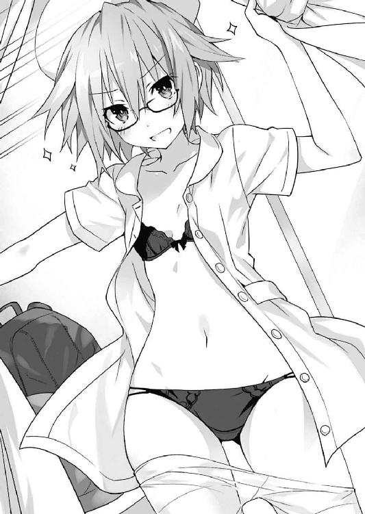
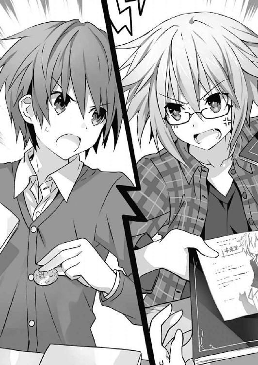

| デート・ア・ライブ 13 二亜クリエイション <デート・ア・ライブ> (富士見ファンタジア文庫) | |
| 橘 公司 & つなこ | |
| Kadokawa / 富士見書房 (2015) | |

デート・ア・ライブ13
二亜クリエイション
橘 公司

富士見ファンタジア文庫
本作品の全部または一部を無断で複製、転載、配信、送信したり、ホームページ上に転載することを禁止します。また、本作品の内容を無断で改変、改ざん等を行うことも禁止します。
本作品購入時にご承諾いただいた規約により、有償・無償にかかわらず本作品を第三者に譲渡することはできません。
本作品を示すサムネイルなどのイメージ画像は、再ダウンロード時に予告なく変更される場合があります。
本作品は縦書きでレイアウトされています。
また、ご覧になるリーディングシステムにより、表示の差が認められることがあります。
口絵・本文イラスト つなこ
序章 そして何よりも──時間が足りない
──午前三時。
いつもなら皆寝静まっているはずのその時間。五河家隣の精霊マンションの一室には、未だに煌々と明かりが灯っていた。
「よし......一五ページ目......上がったぞ！」
目の下に隈を作り、額に眠気防止のための冷却シートを貼った士道は、頭をふらふらさせながらも声を発し、ペン入れの終わった原稿を掲げてみせた。
するとそれに呼応するように、周りの机からも声が聞こえてくる。
「......、こちらも、一六ページ目が完了した」
「か、かか......遅い。遅すぎるぞ士道......颶風の御子たる我は、既に次のページに突入しておるわ」
「回、収......。では、夕弦の原稿と一緒にスキャンしてデータ化しますので、貸してください......」
折紙、耶俱矢、夕弦が、順にそんなことを言ってくる。皆いつもより声に覇気がなく、疲労の色が滲んでいるように聞こえた。
だがそれも無理からぬことだろう。士道は、回収にきた夕弦に原稿を手渡すと、椅子から立ち上がり、身体を反らして伸びをした。ぱきぽきぴき、という、あまり高校生男子の背中からは鳴らない音がする。
「あったたた......」
士道は腰をさすりながら、ぐるりと部屋の様子を一望した。
広い部屋の中に、大きな作業机がいくつも並んでおり、その上に、インクやペン、定規などの様々な画材が置かれている。
そしてその机に着くのは、士道と同じく眠そうな顔をした精霊たちである。
それは言うなれば──漫画家の仕事場のような光景だった。
「ふぁあ......」
士道は漏れかけたあくびを嚙み殺すと、目をごしごしと擦りながら冷蔵庫の方へと歩いていき、その中に満載された栄養ドリンクを二本、取り出した。
そして一本の栓を開けて一気にごくりと呷ってから、もう一本を、奥の机で作業をしている精霊のもとへと持っていく。──恐らく今この部屋の中で、もっとも極限状態にいる少女のもとへ。
「......七罪。一回仮眠取ってきたらどうだ？」
「............」
鬼気迫る表情で原稿にペンを走らせる七罪に言うも、七罪は何ら反応を示さなかった。ただジッと紙面を見つめ、正確に線を引いていく。
「......おーい、七罪ー」
「............」
やはり、反応はない。士道は試しに栄養ドリンクの蓋を開け、そこに細いストローをさして、七罪の口元へと持っていった。
「......んく」
すると、七罪は微塵も視線を逸らさぬまま、唇でストローをついばむようにして栄養ドリンクを飲み始めた。
そして、ビンの内容物を全て摂取し終わると、ストローから口を離し、再び作業に没頭し始める。
なんとも凄まじい集中力である。士道は苦笑すると、自分の机へと戻っていった。
「さて......次のページ、いきますか......」
そして再びペンを握り、下書きの施された原稿に向かう。
するとそれに合わせるように、折紙たちも作業を再開し始めた。
そう。士道たちは今、一つの目的のため、一致団結して事に当たっていたのだった。
──『漫画を完成させる』、という目的のために。
第一章 あわてるな。これは精霊の罠だ
ヴゥゥゥゥゥゥ......という低い駆動音とともに、寝台が巨大な検査機械に吸い込まれていく。
「う......」
そこに寝かされた五河士道は、微かに眉根を寄せ、目を閉じた。
今までも何度か受けたことのある検査ではあるが、やはりあまり気持ちのいいものではない。巨大な生物に丸吞みにされる気分とでもいうのだろうか、生物の根底にある原始的な恐怖を覚えるような感覚である。
士道の身体がすっぽりと機械に吞み込まれたあと、光の線が、士道の身体を舐めるように幾度か通り抜けていく。
そして数分ののち。その機械はようやく、士道の寝転がった寝台を吐き出した。
「──はい、もういいわよ、士道」
「ん......」
上方から聞こえてきた声に、士道は閉じていた目をゆっくりと開いた。
寝台の隣に、小柄な少女が一人、立っている。黒いリボンで二つに括られた髪に、どんぐりのように丸っこい目。そして、口にはチュッパチャプス。それらの特徴のみを見れば、彼女から感じ取れるのは、ただ単に可愛らしい女の子という印象のみだろう。
が、その身に纏った真紅の軍服と、超然とした表情が、彼女の幼い容貌に、不思議な威厳を纏わせていた。
それもそのはず。この少女こそは、士道の妹にして〈ラタトスク〉司令官、五河琴里なのである。
「体調はどう？」
「ああ、問題ないよ。でも......これいつまでやるんだ？ もう半月以上やってる気がするんだが......」
士道は苦笑しながら身体を起こした。そう。今までも、精霊の霊力を封印したあとはこうして身体検査を受けていたのだが、今回は妙にその期間が長い気がしたのである。
今の今まで自分が吞み込まれていた機械を一瞥する。巨大な円筒が横になった、ＭＲＩ装置のような機器である。その様はまるで、大きく口を開けた大蛇を思わせた。
そんな士道の様子を見てか、琴里がはあとため息を吐く。
「あのねえ......士道、説明したでしょう？ あなた一体、自分の身体がどんな状態になったかわかってるの？」
「う......」
言われて、士道は口ごもった。
今月の初旬。士道と精霊たちとの間にある経路が狭窄してしまい、霊力の循環が阻害されたことにより、士道は霊力を暴走させてしまっていたのである。
皆のおかげでどうにか事なきを得たものの、その一件以来、琴里は今まで以上に士道の身体に気を配るようになっていたのだ。
「わ、悪い......どうも、あのときの記憶が曖昧なもんだから実感が湧きづらくて......」
士道が申し訳なさそうに言うと、琴里は「む......」と気まずそうに視線を逸らした。
「......ふん。そうね、悪かったわよ」
「あ、いや、そういうわけじゃ......」
琴里の反応に、士道はぽりぽりと頭をかいた。
そこから数秒の間、会話が途絶える。
普段の琴里であれば、小言か皮肉の一つでも返ってくるところだったのだが、どうもこの件に関しては琴里も責任を感じているらしく、しゅんとしてしまうのである。
「あー......」
なんというか、居心地が悪い。別に琴里に怒られたいだなんて趣味があるわけではないのだが、元気のない琴里を見ているのはお兄ちゃんとして非常に辛いのである。
士道は寝台の上で身体の向きを変えると、そのまま流れるような動作で琴里の身体に抱きついた。
「なんだよー、拗ねるなよー、おにーちゃん寂しいぞー」
「な......ッ!? ちょ、ちょっと、何するのよ！」
「なー、琴里ー」
「ああもう、ひっつくなっ！」
琴里が顔を真っ赤にしながら、士道の脳天にチョップを食らわせてくる。なんだかいつもの琴里が戻ってきた気がした。鈍い痛みに頭を押さえながらも、小さく笑う。
「......何よ気持ち悪いわね。やっぱりどこかおかしくなってるんじゃないの？」
「いや、今の一撃で正気に戻った。ありがとうよ琴里」
士道が言うと、琴里は何かを察したようにさらに頰を赤くし、ぷいと顔を背けた。そんな様子が妙に可愛らしくて、士道は琴里の頭をぐりぐりと撫でた。琴里が小さく肩を揺らし、しかしそのまま士道の手を振り払うこともなくそれを受け入れる。
するとそこに、こほんという小さな咳払いの音が聞こえてきた。
「......取り込み中悪いのだが、二人とも」
「──っ！」
その声に、琴里はビクッと身体を震わせると、即座に士道の手を払いのけた。
「あ、ああ令音、早かったわね。もう結果が出たの？」
そして表情に微かな動揺を滲ませながら、声のした方向に向き直る。士道も琴里の動作に合わせるように、そちらに視線をやった。
いつの間に現れたのか、そこには〈ラタトスク〉の制服を纏った女性が立っていた。簡単に纏められた長い髪に、分厚い隈に飾られた双眸。胸ポケットには傷だらけのクマのぬいぐるみが顔を覗かせていたのだが、彼女の豊満な胸囲に圧されてか、いささか窮屈そうに見えた。
村雨令音。〈ラタトスク〉の解析官であり、琴里の友人である。
「......ああ。〈フラクシナス〉にあったものほどではないが、この機器にも一応顕現装置が搭載されているからね」
言いながら、令音が手にしていたクリップボードの上で書類を捲る。
「......見たところ、シンから発される霊波反応は基準値以下に落ち着いている。このクラスの設備で詳細に調べなければ、感知することは困難だろう。精霊たちとの間にある経路の状態も正常のようだ。......これなら、いつもの定期検診のみに戻しても問題はなさそうだね」
「本当ですか？ そりゃあよかった」
士道はそう言うと、身を反らすようにしてぐぐっと伸びをした。
今士道たちがいるのは、〈ラタトスク〉の保有する地下施設の一角である。空中艦〈フラクシナス〉が改修中のため、検査をするために毎回ここまで足を運ばねばならなかったのだ。
加え、もう一二月も下旬である。学校こそ冬休みになっているものの、これから年末年始でいろいろと忙しくなることは目に見えていた。今まで定期的に取られていた時間が自由に使えるようになるのは、家の台所を取り仕切る士道にとっては非常にありがたいことであった。
と、士道の意図を察したように、「......ただ」と令音が続けてくる。
「......それはあくまで君の身体についてのみの話だ」
「え......？」
その不穏な調子に、士道は思わず表情を険しくした。
「い、一体それはどういう......まさか、精霊の誰かにも何か問題が!?」
「......いや、そういうことではないんだが。......君が体調を崩していた際の身体測定の記録や、オーバーヒート状態にあった際に口説いてしまった亜衣麻衣美衣や岡峰教諭へのフォローがまだ完了していなくてね」
「げふゥ！」
令音の言葉に、士道は思わず咳き込んだ。
そう。経路の狭窄により意識が朦朧としてしまった士道は、半ば無意識のうちに、日頃取らないような行動を取ってしまっていたと聞かされていたのである。
「......身体測定の件については、今対応中だ。五〇メートル走のタイムが厄介だが......強烈な追い風参考か、そのとき飲んでいた風邪薬が個人輸入品で、偶然ドーピング検査で検出される類の成分が入ってしまっていた、という線で誤魔化そうと思う」
「それはそれで問題な気が......」
とはいえ、精霊のことがバレてしまうことに比べれば幾分かはマシである。士道は了承を示すようにうなずいた。
だが、問題はどちらかというと後者の方だった。令音もそれをわかっているのだろう。そのままあとを続けてくる。
「......亜衣麻衣美衣に関しては、なんとか冗談で通るレベルだろう。今度顔を合わせたときにでも弁明しておいてくれ。問題は岡峰教諭だ。とりあえず式場の予約はキャンセルさせたが......」
「ごふぁッ！」
令音の口から発された予想外の言葉に、士道は再び咳き込んだ。
「し、式場の予約......!?」
「......ああ。どうにか細部を暈かしつつ事情の説明を試み、一応事態を理解してはくれたのだが、やはり最後は君の口から直接間違いだったと言ってもらうしかない。そのうち場を設けるので、冬休み中になんとか片を付けておこう」
「......く、苦労をおかけします......」
士道は額に汗を浮かべながら頭を下げた。
するとそれに合わせたように、令音の纏っていた軍服のポケットから、ピピピ、とアラームのような音が鳴る。
「......ん、もうこんな時間か」
「何かあるんですか？」
「......ああ。今日はこのあと、また別の予定が入っていてね」
「そうですか。じゃあ俺は先に失礼した方がよさそうですね」
士道が言うと、それに応ずるように令音が首肯し、琴里が手を振ってきた。
「......ああ。すまないね」
「たぶん私も、夕飯までには帰れるから。──車、手配しようか？」
「んー、今日はいいや。せっかくだし買い物してから帰るよ」
「そ。じゃあ、またあとで」
「ああ」
士道は軽く手を振ると、部屋から出ていった。
そして部屋の隣に設えられていた更衣室で病衣から私服に着替え、軽く肩を回しながら廊下を歩いていく。
途中、ポケットから携帯電話を取り出して時間を確認してみると、まだ一四時くらいであることがわかった。
「ん......まだこんな時間か。さて、今日は何にしようかな......」
頭の中で夕食のメニューを考えながら、カツカツと足音を響かせる。
するとしばらくして、前方から足音が二つ、近づいてきた。
「おお、士道くん。今お帰りでござりますか」
「もう検査は終わったんですか？」
恰幅のいい眼鏡の男と、長い前髪が特徴的な女性が声を掛けてくる。〈ラタトスク〉機関員、中津川宗近と椎崎雛子である。二人とも買い物に出ていたのか、手に白いビニール袋を提げていた。
「はい。数値も正常だったみたいで、ようやく解放されました」
「はっは、それは何より。身体は全ての資本ですからなあ」
「そうですね。大事にしてもらわないと」
「はは......気を付けます。お二人は買い物ですか？」
「ええ。〈フラクシナス〉では気軽に外出もできませんでしたけど、ここなら簡単に地上に出られるので」
「ああ、確かに」
言って、士道は首肯した。この施設の出入口は、天宮市の一角に建った雑居ビルの中にあるため、比較的気軽に外に出ることが可能なのである。
まあ、無論一般市民に〈ラタトスク〉のことを知られるわけにはいかないため、そのビルの中には適当な会社が入っていることになっているし、中津川たちも今は〈ラタトスク〉の制服ではなく、会社員然としたビジネススーツの上にコートを羽織り、ついでに首から社員証を下げていた。この姿を見て彼らを秘匿組織の一員だと思う者はまずいないだろう。
「しかし、そうはいっても少し寂しくはありますな。やはり男たる者、空飛ぶ機動戦艦で任務をこなすという矜持に勝るものはないわけで！ 〈フラクシナス〉には一刻も早く戦線復帰してもらいたいものでござりますな！」
指出しグローブがはめられた手をグッと握りながら、中津川がキラリと眼鏡を輝かせる。士道はその熱っぽい様子に苦笑したが......士道も男の子であるのでその気分はわからなくはなかった。
「それで......お二人は何を買ってきたんですか？」
士道が尋ねると、二人は小さくうなずいてから手にしたビニール袋を示してきた。
「私はお菓子と、ついでに司令からの頼まれものを」
「チュッパチャプスですか？」
「あ、わかります？」
士道が言うと、椎崎は「さすがはお兄さん」と笑ってみせた。
「私もストックのお菓子と──あとは、これを」
次いで、中津川がビニール袋の中から一冊の本を取り出してくる。
Ｂ５判の少年漫画誌である。表紙に剣を構えた少年が描かれ、その上に『週刊少年ブラスト』のロゴが躍っていた。
「ん？ これは......ブラスト？」
「左様。今日発売の最新号でござります。士道くんも読まれたことがありますかな？」
「ええ、まあそりゃあ。俺たちの年代だと、一度も読んだことないって奴の方が少ないんじゃないですか？」
でも、それが何か？ と言うように首を捻ると、中津川はニッと唇を歪め、その表紙の左下辺りを指で示してきた。
「何ですか一体、これ......って、え？」
促されるままにそこに視線をやり──士道は目を丸くした。
それを見てか、中津川が満足げにうなずく。
「そう。長らく休載していた本条蒼二作『SILVER BULLET』が、久方振りに連載再開したのでござりますよ！」
「わ、本当だ。俺も読んだことありますよ。確か何年か前にいきなり休載して、それからずっと音沙汰なかったんじゃありませんでしたっけ？」
「そう！ 作者と編集部が揉めたとか、作者が急病にかかったとか、腰痛を理由に休載を続けていたが本当はゲームにハマってるだけじゃねえのか本条働け！ とかまことしやかに囁かれておりましたが......まさか私も、今になって『SILVER BULLET』の続きが読めるとは思っておりませんでした......！」
「へー、うわー、懐かしい」
などと、士道と中津川がきゃっきゃと話を続けていると、椎崎が不意に眉をぴくりと揺らし、ポケットから携帯端末を取り出し、耳に当てた。
「──はい、椎崎です。......あ、はい、わかりました。すぐに向かいます」
どうやら急な用事が入ったらしい。椎崎は通話を切ると、申し訳なさそうに士道に声を発してきた。
「すみません、ちょっと行かなければならないので、これ、司令にお願いしてもいいですか？」
言って、手にしていた買い物袋を一つ、差し出してくる。士道はもちろん、と言うように首肯した。
「大丈夫ですよ。お仕事頑張ってください」
「ありがとうございます。助かります。では......」
椎崎はぺこりと頭を下げると、小走りになって廊下の向こうへと消えていった。その背を見送ってから、中津川もビッと手を上げる。
「では私もこれで。休憩時間が終わる前に『シルブレ』を読まねばなりませぬので！」
「はは......じゃあ、また」
士道が言うと、中津川もまた、椎崎とは逆方向に歩いていった。
「さて──じゃあ早く届け物しちまうか」
士道は手にした買い物袋を軽く振りながら、元きた道を戻っていき、部屋の扉を開けた。
「おーい、琴里。椎崎さんから預かり物......って」
そこで、士道は身体を硬直させた。
しかしそれも当然である。部屋の中には琴里と令音の他に、もう一人小柄な少女が増えていたのだが......琴里が呼吸を荒くしながらその少女をベッドに押し倒し、彼女が纏っていた病衣を荒々しくはだけさせていたのである。
「きゃー！ きゃぁぁぁぁぁっ！」
「この！ 大人しくしなさい......！ 脱がせづらいでしょうが！」
「こ、琴里......？」
目の前で展開されるめくるめく秘密の花園に、士道が呆然とした声を発すると、琴里がようやく士道の存在に気づいたようにハッと肩を揺らした。
「し、士道!? 帰ったんじゃなかったの!?」
「い、いや、さっきそこでおまえへの届け物を預かって......」
士道は気まずげに視線を逸らした。
「なんていうか......すまん。でも、無理矢理ってのはよくないと思うぞ......」
「絶対何か勘違いしてるわよね!?」
琴里は声を裏返らせながら喋ると、ベッドに押し倒されていた少女の服を元に戻し、手を引いて起き上がらせてみせた。
琴里と同じくらいの背格好をした少女である。一つに括った髪に、左目の下にぽつんと打たれた泣き黒子。身に纏っているのは先ほどの士道と同じような病衣であったが、そんなものが必要とは思えないくらい、健康的な顔色をしている。
その姿を見て、士道は思わず目を丸くした。
「真那!?」
「へ......？ あ、兄様！」
士道が名を呼ぶと、少女は驚いたように声を上げてきた。
そう。そこにいたのは、士道の実妹を名乗る少女、崇宮真那だったのである。
「そ。今までさんざ無茶してくれたからね。今度こそ詳細に検査をしようと思ったんだけど、この子が執拗に嫌がるものだから」
「いやだって、真那はどこも悪くねーですよ！ 大丈夫ですって！」
「............」
琴里がギロリと真那を睨む。真那は頰に汗を垂らして苦笑した。
そのやり取りで、思い出す。そういえば、士道が霊力を暴走させてしまった際、それを狙ってＤＥＭの襲撃があったのだが、それを未然に防いでくれたのがこの真那であるという話だった。
「そっか......おまえも俺を助けてくれたんだってな。ありがとう、真那」
「兄様......」
士道が言うと、真那はニッと笑みを浮かべてみせ、その場に立ち上がった。
「何を水くせーこと言ってやがるんです。真那と兄様の仲じゃねーですか！」
「はは......そうだな」
士道もそれにつられるように、頰をかきながら笑った。
すると真那が、朗らかな笑みを急に真剣そうな表情に変換し、ゆっくりと歩みを進めながら、士道の目をジッと見つめてくる。
「それより、兄様。兄様に会ったら聞こうと思ってたことがありやがるんですが......」
「ん、なんだ？」
「はい。あのとき兄様が言った──」
と、真那の言葉の途中で。琴里が「んっんっんっ......」と何やら含み笑いのようなものを漏らしながら、真那の肩に手を回した。
「真ぁぁ那ぁぁぁ？ なぁに士道とお話ししながらじりじり距離取ってるのかしらぁ？」
「え!? あ、いや、別にこれは逃げようとかそういうのではなく......」
琴里が至極フレンドリーな、しかしどこか底冷えのするような声音で言うと、真那が顔面を蒼白にした。士道の位置からはよく見えなかったが、琴里がさぞ恐ろしい顔をしているであろうことはなんとなく知れた。
しかし琴里は、ふうと息を吐いてあとを続けた。
「──勘違いしないで。別に私は怒ってなんかないわ。今回も、あなたがいなかったらどうなっていたかわからない。本当に感謝してる」
「琴里さん......」
琴里の言葉に赦免の意を感じ取ってか、真那がほんの少しだけ強ばっていた表情を緩める。
するとそれに合わせて、琴里が真那の肩に置いた手に力を込めた。
「だから、そんなに怖がらなくていいのよ。あなたが自分の身体の状態も顧みず飛び出していったりだとか、後先考えずにバンバン顕現装置使ったりだとか、そのまま音信不通になったりだとか、そのくせ令音とはこっそり連絡先交換してたなんてこと、私はこれっっっっっっっぽっちも気にしてないんだから」
「ひ、ひぃぃぃっ!?」
琴里の指が、真那の肩に食い込む。真那は目に涙を浮かべながら首をブンブンと横に振った。
「お、おい琴里......あんまり無茶なことするなよ？」
士道が言うと、琴里はギロリと後方を睨み付けてきた。
「人聞きの悪いこと言わないでちょうだい。ていうか、あなたたち兄妹ほど無茶をする人たち、私は他に知らないのだけれど」
「う......」
「それは......」
士道と真那が頰に汗を垂らしながら口ごもる。そう言われてしまうと、なんとも返しづらい。
琴里はそんな二人の様子にはあと吐息すると、真那に視線を戻した。
「とにかく、今度こそ逃がさないからね。徹底的に検査して、適切な処置を施させてもらうわ。覚悟なさい。あなたが知らないところまで調べ尽くしてあげる」
「きゃー！ きゃぁぁぁっ！」
琴里がそう言って、ぐいと真那の肩を摑む。真那が足をジタバタさせながら悲鳴を上げた。
「兄様ぁぁぁ！ たーすーけーてー！」
「いや、検査は受けないと駄目だろ......またあとでな」
真那の悲痛な叫びを背に聞きながら、士道は買い物袋を近くに置き、検査室を出ていった。
そしてしばらく進んでからエレベーターに乗り、厳重なセキュリティの施された電子扉を三つほど抜けて、雑居ビルの中に出る。内装は、先ほどまでの秘密基地然としたものとは異なり、至って普通のそれである。なんとなく、狐に化かされたような感覚を覚える士道だった。
「さてと......」
頭の中でこの辺りの地図を思い浮かべるようにしながら、歩みを進めていく。
雑居ビルと商店街は、さほど離れていない。一〇分も進むと、見慣れた街並みが顔を出してきた。
否──正確に言うのなら、目の前に現れた商店街の風景は、数日前に目にしたそれとは微妙に異なっていた。
クリスマスを一日過ぎるだけで、街の装いは一気に洋風から和風に変わる。クリスマスツリーが並べられていた店頭には門松が並び、リースはしめ飾りに変貌を遂げていた。あれだけ猛威を振るっていたサンタクロースやトナカイなどはもうほとんど見受けられず、前日売れ残ってしまったらしいケーキのパッケージの上で、妙に肩身を狭そうにしているのみだった。
この変わり身の速さと無節操っぷりは毎年のことであったが、改めて考えると興味深い現象なのかもしれない。何しろ、つい先日まで諸人こぞりてきよしこの夜していた人々が、今やもういくつ寝るとお正月状態なのである。お祭りごととなれば宗教国籍関係ない日本人ではあるけれど、ここまで大きなイベントが約一週間しか間を置かず連続するというのも、なかなかに慌ただしい話ではあった。師も走らねばならないはずである。
士道は、年末の活気に湧く商店街を見渡しながら、ふうと息を吐いた。
「毎年のことだけど......すごい転身の速さだな。商魂逞しいというかなんというか」
とはいえ、別に士道はそれにどうこう言おうというつもりはなかった。いや、むしろどちらかといえば歓迎していると言ってもいい。
街に活気があるのはよいことであるし、何よりこの時期は、普段店頭に出ないような豪華な食材が並んだり、特売セールが多かったりして、ただ見ているだけでも、実際に料理を作る上でも楽しいのである。
「とはいえ、今日はどうするか......」
士道はあごに手を当てながら考えを巡らせた。
昨日クリスマスということで少し気合いを入れた夕飯を作ってしまったばかりであるし、あと何日もしないうちに年越し＆お正月だ。精霊たちの食費は〈ラタトスク〉が負担してくれているとはいえ、あまりご馳走ばかり食べ過ぎても身体にはよくないだろう。
今日は煌びやかにし過ぎず、しかし美味しいメニューを目指そうと心に決める士道だった。
「となるとやっぱり和食系かな......最近魚食べてなかったし」
独り言のように呟き、うんうんと首を前に倒す。
時刻は一四時三〇分。まだまだ日は高いのだが、一二月も下旬ということもあって気温はかなり低い。夏場のように生ものを最後に買わなければならないということがないのはありがたかった。顔なじみの店を辿るように、道なりに必要なものを集めていく。
「──よし、こんなところか」
そしておよそ三〇分後。一通り夕飯の材料を買い終わった士道は、商店街をあとにして家への帰路を歩いていった。
──と。
「......ん？」
士道は、道の角を曲がったところで不意に足を止めた。
しかしそれも当然である。何しろ士道の前方に、一人の少女がうつ伏せに倒れていたのだから。
「な......っ!?」
予想外の事態に、士道はビクッと肩を震わせた。
「だ、大丈夫ですかっ!?」
慌ててその場に駆け寄り、買い物袋を地面に置いてその少女を抱き起こそうとする。
が、そこで士道は手を止めた。道で倒れていた人を発見した際は無闇に動かさない方がいい、とどこかで聞いたことがある気がしたのだ。もし交通事故や何かで頭を打っていた場合、体勢を変えることが命取りになってしまうことがあるらしいのである。
と、士道が一体どうしたものかと思案していると、不意に少女の指先がピクリと動いた。
そしてそれに続いて、ふらふらと頼りなげにその頭が持ち上がる。それによって、地面にキスをしていた少女の容貌が見取れるようになった。
歳は士道の一つか二つ上くらいだろうか。吊り目がちの目に、薄い唇。鼻筋の通った端整な顔をしているが、そこには今深い疲労の色が見て取れた。げっそりとした頰に、分厚い隈。車に轢き逃げされたというよりは、過労で倒れていたといった方が説得力がある気がした。
とはいえ、意識があったのは僥倖である。士道は少女の肩を支えるように抱くと、彼女が身を起こすのを手伝ってやった。
背中側を見ただけではよくわからなかったが、どうやら少女は、部屋着の上にコートを纏っただけ、という格好をしているらしかった。この寒空の下だというのに、足元は靴下も穿かずにサンダルを引っかけただけである。彼女がこのスタイルによほど偏執的なポリシーを持っているのでなければ、たぶん近隣に住む住人なのだろう。士道もたまに、夜中近くのコンビニに行く際などは似たような格好になることがあった。
と、少女は目の焦点を合わせるように士道の顔を見ると、カサカサの唇を震わせるように動かし、蚊の鳴くような声を発してきた。
「──なか、──た......」
「え？ な、何ですか？ どうしたんですか？」
士道が聞き返すと、少女はもう一度、その言葉を繰り返した。
「......お腹、空いた......」
「..................は？」
士道は、思わず目を点にしていると、少女のお腹から、ぐー、きゅるるるる......という音が聞こえてきた。
それから数分後。士道は地面に倒れていた少女を背負い、その案内に従って道を歩いていた。
「......んー、悪いねー、少年......」
などと、背に負った少女が、覇気のない声を発してくる。
結局、意識があったはいいものの、お腹が空きすぎて動けないと言い張るため、仕方なく家まで送り届けてあげることにしたのである。
「いえ......それより本当に大丈夫ですか？ 病院とか行かなくて......」
「あー、いーのいーの。別に病気ってわけじゃないし。何より、そんなところ行ったら時間取られちゃうでしょ？」
そう言って、少女が手をヒラヒラと振ってくる。
「っていうか敬語とかいらないよー。そういう堅苦しいのは苦手でさー」
「はあ......そうですか」
「あー、ほら直ってないし」
「そ、そう......か」
その適当な調子に、士道は頰に汗を垂らしながら返した。
線の細い見た目に反してなかなかに剛胆というか、おおざっぱな少女である。
というかこの飽食の現代日本で、お腹が空き過ぎて倒れているという時点で普通ではない。あまりに意外な光景に驚き、未だ事情を聞けてはいなかったが、一体何があってああなってしまったというのだろうか。
「あ、そのマンションでお願い」
と、士道がそんなことを考えていると、背中の少女がくっと右手を持ち上げて前方を指さした。
士道は少女の指先が示す先を辿るように視線を動かし──思わず目を見開く。
そこにあったのは、辺りの建物の倍の高さはあろうかという、高層マンションだったのである。
「え？ ここか？」
「んー、そだよ。......あ、もしかしてもうちょっとボロいアパートとかの方がそれっぽかった？」
「い、いや、別にそんなことは......」
士道は思わず一瞬口ごもった。実のところ、図星だったのである。
マンションは基本的に、背が高くなれば値段も高くなるものである。少女のあまりに庶民的なスタイルが、目の前の高級マンションのイメージと結びつかなかったのは事実であった。
「えっへっへ、いいってば別にー。なんていうの？ ほら、ギャップってやつよ。そういうのグッとこない？ 男子的に」
「......や、あの、ちょっとよくわからん」
士道は眉の間にしわを刻みながら答えた。......なんというか、そのギャップの良さと言うよりも、この少女の性格がいまいち摑みきれなかった。
「──あ、少年、悪いんだけど部屋までお願いしちゃっていい？ なんかねー、不思議なことに足が動かないんだよねー。やっぱ使わないと退化していくのかなー？」
「はあ、まあそれはいいけど......本当に病院行かなくていいのか？」
急ぎの用があるわけでもないし、別に構わないだろう。何よりここに少女を放置して、万一行き倒れられでもしたら寝覚めが悪い。......普通に考えればそんなことはまずあり得ないのだが、相手はお腹を空かせて倒れるという、漫画のようなシチュエーションを体現していた少女なのである。油断はできなかった。
士道は少女を背負い直し、マンションの入口に歩いていった。が、すぐにオートロックの扉の前で立ち往生してしまう。
「っとと......」
このクラスのマンションとなれば、オートロックがついているのは当たり前である。しかし、暗証番号を入れなければならないここの住民は今、士道の肩越しにしかパネルを操作できなかったのだ。
セキュリティ上あまり褒められたことではなかったかもしれないが、状況が状況である。士道は背に負った少女に話しかけた。
「俺、目瞑ってるから、その間に──」
「あ、部屋は一八〇一号室で、暗証番号は一二三四ね」
「セキュリティ!?」
あっけらかんとした少女の言葉に、士道は思わず珍妙な声を発してしまった。
「えっ、何今のシャウト。超面白い。もう一回もう一回」
「そうじゃなくて！ そんなの俺に教えちゃ駄目だろ！」
「え？ なんで？」
少女が意外そうに聞き返してくる。士道は頭を搔き毟りたい気持ちを抑えながら言葉を続けた。
「いや、セキュリティ上駄目だろ、それは！ 住民以外に番号が知られたら、勝手にマンションに入られたりするだろうが！ 一応初対面で、しかも男なんだぞ俺！」
士道が説教をするような口調で言うと、少女は「まっ」と口元を手で覆った。
「少年そんなことするの？ やだ、意外」
「しないけど！ 一般論の話！」
「......あー、なるほど。草食系に見えて実は肉食系......こういうのが受けるギャップってやつか。また一つ賢くなっちゃったぜ」
「人の話聞いてる!?」
「聞いてる聞いてる。超聞いてる。......でさ、参考までに聞くけど、少年は女子の部屋に侵入したらまずどんなことするの？」
「聞いてないな!?」
と、士道が少女につられるように叫びを上げていると、不意にどこかから視線を感じた。
「ん......？」
そしてそちらに目をやり......そのまま身体を硬直させる。
そこには一人の女性の姿があった。このマンションの管理人......というか、マンションコンシェルジュというやつだろう。マンションのロビーの中から、入口で騒ぐ士道たちに、不審そうな視線を向けてきている。しかも片手は、いつでも警察に連絡できるようにと思ってか、電話の方に添えられていた。
「あ、あはは......」
士道は力ない愛想笑いを浮かべると、今し方少女に聞いた部屋番号と暗証番号を入力し、速やかに自動扉を開いた。
「......入るぞ」
「あいあいさー」
少女が軽い調子で応えてくる。士道ははあとため息を吐き、コンシェルジュに愛想を振りまきながら廊下を歩いていった。
そのままエレベーターに乗り、豪華な内廊下を通って指定された部屋へと向かう。
「......ほら、着いたぞ。ここでいいか？」
「んー、ありがとう。でもあたしこのままじゃきっと玄関で行き倒れちゃうよう」
「......はあ。じゃあほら、鍵貸してくれ。開けるから」
「そうこなくっちゃ。あ、鍵はお尻のポケットに入ってるから、優しーく取ってね」
「なんでそんなところに!?」
士道が叫ぶと、少女は士道の首に腕を絡ませるようにして続けてきた。
「野暮なこと聞くもんじゃないわよ。道で倒れてたところ助けてくれたお礼のつもりで言ってるんだから、役得と思ってさわさわしときゃいいの。間違って服に手突っ込んでも、パンツの上までだったら見逃しといてあげるから」
「何言ってんだあんた!?」
「んー？ いやーさー、せめてものお礼にと思って、負ぶってもらってる間ずっと『当てて』あげてたのに、一向に反応示さないもんだからさー。お、もしかしてこいつ尻派か？ と思って」
「気遣いが下世話すぎる!?」
「あ、それとももしかして少年ったら巨乳原理主義？ 八〇センチ以下はバストと認めない派？ それはごめんねー。こればっかりはなんともならないもんでさー」
「勝手に人を変な派閥に組み込まないでくれるかな!?」
士道はひとしきり叫ぶと、またもやはあと大きなため息を吐いた。
「いいからほら、鍵寄越せ。でないとここに置いていくぞ」
「もう、仕方ないなー」
少女はそう言うと、自分の尻ポケットに手を突っ込んだ。
「あ......っ、そんないきなり......やぁ......っ」
「人の背中で変な声出さないでくれませんかねえ......」
「何よう、つれないなあ」
少女がぶー、と唇を突き出してから、鍵を手渡してくる。士道は扉を開けると、部屋の中へと入っていった。
「お邪魔します」
「お邪魔されまーす」
「............」
「えっ、ついに突っ込みもなし？」
少女の声を無視しつつ、士道は靴を脱いで部屋に上がった。
玄関から見えるのは、真っ直ぐに延びる廊下と、その上に点在する幾つもの雑誌や漫画の山だった。
「で、寝室はどこだ？」
「あっちー」
少女が指さす方向に歩みを進め、部屋に入る。
案の定、少女の寝室は夥しい数の漫画で埋もれていた。壁のほぼ全面が本棚と化しているというのに、それでも本が収まりきらず、部屋中に堆く積まれているのである。
ベッドなどはさらにひどい。大きなベッドの真ん中に、人が一人横になれるくらいのスペースが空いており、その周囲に何冊もの本が散乱している。まるで、生前本が好きで好きでたまらなかった故人のために用意された特製の棺桶のようですらあった。
「うんしょっと」
少女は、士道がベッドの前に立った瞬間、容器からこぼれ落ちるスライムのようにベッドに乗り移ると、パズルのピースがぴたりとはまるような調子で、そのスペースに綺麗に収まった。
「んー、やっぱり落ち着くわー」
「はあ......」
と。ようやく少女を背から下ろし、一息吐いた士道は、そこで部屋の奥に、とあるものを発見した。
「これは......」
あまり他人の──しかも初対面の少女の部屋をジロジロ覗き見るのは失礼かとも思ったが、それより好奇心の方が勝ってしまった。そちらに足を運び、そこにあるものをまじまじと見る。
それは、大きな作業机であった。様々な画材が所狭しと並び、これまた大きな蛍光灯が、机の全面を照らすように設置されている。
そして、その上。机の中央に、Ｂ４サイズくらいの厚手の紙が一枚、置かれていた。
コマ割りがされ、その上にキャラクターと背景、そして台詞の入る吹き出しが描かれている。ペン入れは全て終わっているようだが、まだ下書きの鉛筆線が残ったままになっていた。
そう──士道も直接見るのは初めてだったが、恐らく間違いない。
そこにあったのは、所謂、描きかけの漫画原稿というやつだった。
「え、もしかして、漫画描いてるのか？」
士道が問いかけると、安らかに眠る遺体のようにベッドに収まった少女は、億劫そうに片手を上げてきた。
「んー？ そうだよー。一応プロ。......作業に熱中してたらご飯食べるの忘れちゃってさー......仕方なく近所のコンビニかスーパーでも行こうと思って外に出たら、地球の重力が意外と強いことに気づいちゃって」
言って、上げていた腕をボスン、とベッドに落とす。士道は渋い顔を作りながら苦笑した。
「そ、そういうもんか......でも、プロだったらアシスタントとかいるんじゃ......」
「んー、普通はそうなんだろうけど、あたしは一人で仕上げまでやっちゃうことが多いかなー。まあ一人ってのも気楽でいいよ。たまに死にかけるけど」
「それって致命的な欠点だと思うんだが......」
士道は頰をかきながらそう言うと、もう一度机の上の漫画原稿に視線を落とした。
別に、漫画雑誌を全て読んでいますというほどの熱狂的なマニアではないものの、士道とて高校生、普通に漫画は読むし、お気に入りの作品の単行本を買ったりもする。初めて目にする生原稿に、微かな興奮を覚えていたのである。
どうやら絵柄から察するに、少年漫画のようである。まだ仕上げこそされていないものの、やはりプロを名乗るだけあって迫力が──
「......んん？」
と。士道はそこで眉根を寄せ、身体を前屈させるような格好で原稿に顔を近づけた。
まだ仕上げがされていないため一瞬わからなかったが、その絵柄に、見覚えがあるような気がしたのである。
「......ってこれ、もしかして『SILVER BULLET』!?」
士道は思わず叫びを上げた。そう。そこにあったのは、つい先ほど士道が中津川と話していた漫画、『SILVER BULLET』の原稿であったのだ。
「お？ よく知ってるね。もしかして読者さん？ まいどー」
少女がもう一度ヒラヒラと手を振る。が、士道にはそれよりも気になることがあった。ぐるんと身体の向きを変えて言葉を続ける。
「いやちょっと待ってくれ。それってつまり、君が本条蒼二......？」
「んー、そだよー」
「お、男じゃないのか!?」
「あー、それ？ ペンネームよ、ペンネーム。本名は二亜っていうの。本条二亜。よろしくねー」
言って、少女──二亜がニッと笑ってからあとを続けてくる。
「結構いるのよ。少年漫画描くに当たって男性名のペンネーム使う女性作家って。ほら、『アザーフェイク』の高城さんとかも実は女性だよ」
「えっ!? そ、そうなのか!?」
まさかの情報に士道は目を見開いたが......すぐに思い直す。
性別云々の前に、もっとおかしなことがあったのである。
「いやいやいや......やっぱりおかしいって。だって『SILVER BULLET』って、俺が小学生くらいのときからやってる漫画だぞ？ ていうか本条蒼二のデビュー自体はもっと前のはずだし......」
士道は叫ぶようにのどを震わせ、二亜の容貌を再度見つめた。
見た限りでは一八、九......どんなに若作りに成功していたとしても、二〇代前半がせいぜいというところだろう。これで実年齢が三〇代だったならば、その若さの秘訣をご教授願おうと、美容関係の会社やテレビ局がこぞって押し寄せるに違いない。
これならば、かつて連載していた本条蒼二に代わり、絵柄を完全にトレースした娘が二代目を襲名している......といった方がまだ説得力がある。
しかし、二亜はそんな士道の想像を見透かしたようにふふんと肩をすくめてみせた。
「残念ながら、本条蒼二は最初から今まであたし一人だよ。ちなみにデビューは今からだいたい一〇年くらい前かなあ」
「じ、一〇年って......」
あっけらかんとした様子で信じがたいことを口にした二亜に、士道は怪訝そうな表情を向けた。
普通に考えれば、そんなことは有り得ない。今までのが全て二亜の壮大な出任せである可能性の方が圧倒的に高いだろう。
だが、作業机の上に置かれている原稿は、明らかに本条蒼二の絵そのものであった。無論、絵柄をコピーしているだけという可能性も十分あったが、もしこの漫画が今後の『ブラスト』に載っていたとしたなら、少なくとも彼女が描いた原稿が公式のものとして扱われている証拠になってしまうだろう。
士道がそんなことを考えていると、二亜がやれやれといった調子で息を吐いてきた。
「うーん......ちょっと順序が想定と違っちゃったけど、まあいいか。──教えてあげるよ。あたしの秘密を」
「え......？」
二亜の言葉に、士道は小さく肩を揺らした。
確かに気にはなるのだが......何というのだろうか、そんなことを赤の他人である士道に教えてしまっていいのだろうか、という感覚が頭の中に生まれたのである。
「実はね──」
しかし、次の瞬間。
ぐー......きゅるるるるるる......と。
二亜のお腹から、先ほどよりも大きな悲鳴が響き渡った。
しかも、真剣な話をしようとしてか、少しキリッとした表情を作っていたものだから、シュールなことこの上ない。
「し、少年......」
二亜がぐったりとしながら、弱々しくそう言ってくる。士道はなんだか拍子抜けしてしまい、ため息とともに頭をかいた。
「はいはい......ちょっと台所借りるぞ」
「うーい......」
と、士道は部屋をあとにしようとしたところで、二亜の方を振り返った。
「......念のため聞くけど、ご飯は普通のやつで大丈夫だよな？ 若さを保つための生き血とかじゃなくて」
「え？ 吸わせてくれるの？」
二亜が、肉食獣を模すように両手の指を曲げながら、「がー」と歯を見せてくる。が、体力が落ちているからか、迫力は皆無だった。
「......その受け答えができれば当分は大丈夫そうだな」
士道は半眼でそう言うと、部屋を出てキッチンの方に歩いていった。
二亜の調子を見るに、シンクはさぞ洗い物で溢れているのだろう......と思ったが、意外にもキッチンは整頓されていた。放置された食器などは一つもなく、三角コーナーにも生ゴミは溜まっていなかった。
「へえ。意外......って言ったら失礼だけど、結構綺麗にしてるんだな」
が。一瞬あと、士道はその感想を改めることとなった。調理台に、うっすらと埃が積もっているのが確認できたのである。
つまり二亜は、きちんと片付けを行っているのではなく、そもそもキッチンを使用していないのだ。きっと外食やコンビニ弁当、インスタント食品などで食事を済ませているのだろう。
「............」
士道は無言で額に手を置くと、濡らした台拭きを固く絞って調理台の上を拭くことから始めた。
「さて......と」
埃で汚れてしまった台拭きを洗ってから、キッチンの奥に鎮座していた冷蔵庫に向かい、その扉を開ける。
何か一つでも使えるようなものがあれば......と思っていたのだが、その希望は儚く打ち砕かれることになった。──冷蔵庫の中にずらりと並んだ、ビールの缶の密集陣形によって。
「......さ、酒だけ......？」
士道は頰をぴくぴくと痙攣させながら、野菜室の引き出しを開けてみた。
日本酒の一升瓶が、幾本も横になっていた。
「............」
士道は無言で冷蔵庫を閉めると、玄関に赴き、先ほどの買い物袋の中から、適当な食材をチョイスしてキッチンに戻ってきた。本来は精霊たちの晩ご飯になる予定のものであるが......いつもよりたくさんの量を買っていたし、なんとかなるだろう。それに何より、目の前で二亜に餓死されても困る。
士道は手を洗うと、手慣れた調子で調理を開始した。
とはいえ、文房具に比べて貧弱なラインナップの調理器具では、そこまで凝ったものを作ることは不可能である。それ以前に、あまり調理に時間をかけすぎて二亜を待たせてしまうのもよくないだろう。
士道はそう判断すると、キッチンに唯一あった小鍋に水を入れ、そこに生米を投入して少し水を吸わせてから火にかけ始めた。
そして火が通ったところでネギを入れ、味噌と、冷蔵庫から拝借した日本酒で味を調え、最後に卵を落とせば、お手軽雑炊の完成である。
これならば今からご飯を炊くよりも調理時間が短くて済むし、道ばたに倒れるほどにお腹を空かせた状態の二亜には、普通のメニューよりも胃に優しいこちらの方がよいと判断したのである。
「よし、こんなもんか」
士道はそう言うと、雑炊を器に移して先ほどの部屋へと戻っていった。
「ほら、できたぞ。熱いから気をつけてな」
「わお！ いっただっきまーす！」
士道が雑炊をベッドの近くの台に置くと、二亜はパン！ と手を打ち、雑炊を勢いよく頰張った。
「ほあっちゃあ！」
案の定、熱かったらしい。二亜が身体をビクッと震わせる。
「だから言ったのに......」
「はふー、はふー」
教訓を得た二亜が、今度はスプーンに息を吹きかけてから口に運ぶ。
そして雑炊を味わうように口をもしゃもしゃ動かしたのち、こくんとのどを鳴らした。
「っあぁー......」
二亜はまるで温泉に浸かったオッサンのように深く息を吐くと、感極まったように目に涙を浮かべながら、スプーンを動かしていった。
「うんまぁ......なんちゅうもんを食わせてくれるんや......なんちゅうもんを......」
などと言いながら、残った雑炊を次々と平らげていく。五分と待たず、器の中の雑炊は空になってしまった。
「ふぃー、ごっそさん。いやー、美味しかった。温かいご飯とか食べたの一週間ぶりくらいだわ」
「一週間......」
士道は苦笑しながら食器を纏めると、キッチンに戻ろうと扉の方に足を向けた。
「じゃあ、これ洗ったら俺、帰るから。これからは倒れる前にちゃんとご飯食べてくれよ」
「あー、ちょっと待って」
と、士道が部屋を出ようとすると、その背に二亜が声をかけてきた。
「足りなかったのか？ 悪いけどこれの材料、うちの夕飯になる予定の食材なんで、もっと食べたかったら出前でも頼んでくれよ」
「あー、違う違う。そうじゃなくて」
二亜はブンブンと手を振ると、右手の親指で、ビッと机の上──描きかけの原稿を指さした。
「さっきも言ったとおり、あたしアシスタント雇ってなくてさ。簡単な作業だけでいいから、手伝ってくれない？ お願い！ お給料は色つけるからさぁ」
「......へ？」
想定外のお願いに、士道は目を丸くした。
だがすぐに二亜の要求が無茶苦茶であることを頭が理解する。
「い、いやいやいや。なに言ってるんだよ。そんなの無理だって」
「えー、いーじゃーん。何か用事でもあるの？」
「いや、そういうわけじゃないけど......俺、プロの原稿なんて触ったことないし、もし汚しでもしたら責任取れないぞ」
「だいじょーぶだいじょーぶ。消しゴムかけくらいだから。意外と体力いるのよ、あれ」
「そう言われても......」
「お願いお願いお願い！ マジ今手が足らなくてさー。このままじゃ次の原稿落としちゃいそうなのよ......」
二亜に懇願され、士道は大きなため息を吐いた。
「......はあ。もう、簡単な作業だけだからな」
諦めたように士道が言うと、二亜が嬉しそうにニッと微笑んでくる。
「りょーかいりょーかい。んじゃ、ちょっと仕事部屋の方に移動しよっか。さすがにここで二人作業は狭いからねー」
言って、二亜がベッドから下り、んんん......と伸びをする。先ほどまでへろへろであったというのに、随分とエネルギー吸収の早い少女である。
「仕事部屋って......こことは別にあるのか？」
「うん。作業中死にそうになったらそのまま倒れられる機能性を追求したらこうなっただけで、もともとの作業場は別にあるよー」
「うんなんか当たり前みたいに言ってるけど大分おかしいよなそれ」
士道が半眼を作りながら言うも、二亜は気にしていなかった。そのまま士道を伴って別の部屋へと入っていく。
「さ、入って入って」
「わ......」
二亜に促され部屋に入った士道は、その光景に思わず目を見開いた。
部屋の中に大きな作業机が配置され、その上に様々な文房具などが纏められている。壁は先ほどの部屋と同じく全面が本棚になっているのだが、そこに収められているのは作画資料と思しき画集や写真集などであった。
雑然としていながらも、ある種ストイックな雰囲気。まさに職人の仕事場といった趣である。
「さ、じゃあその机使っちゃって」
「え、いいのか？ なんか職人の聖域的な雰囲気漂ってるんだが......」
「いいのいいの。あ、もしかして寝室の方の机がよかった？ あたしの残り香に包まれて仕事したかった？」
「あ、こっちがいいです」
士道がぴしゃりと言うと、少女は不満げに「ぶー」と唇を尖らせた。
「で、俺はどれをゴムかけすればいいんだ？」
「ああ、じゃあこれお願い」
士道が問うと、二亜が机の上にあった眼鏡をかけてから、ペン入れの終わった原稿を数枚示してみせた。
「これ下書きを消したら、×印がしてあるところを黒で塗り潰してちょうだい」
「ん......？」
ナチュラルに二亜が言った言葉に、士道は首を傾げた。
「ちょ、ちょっと待った！ ゴムかけだけじゃないのか!? いくらベタ塗りでも、素人にそんな......！」
「へーきへーき。器用な人ならなんとかなるって。とにかく黒い色が塗れればいいから、画材は何使ってもいいよ。細かいところを先に細いペンで塗ってから、中をガーッと塗っちゃうのがコツね」
「いやちょっと、人の話聞いてくれるか!?」
「聞いてるよー。でも大丈夫だって。少年、多分だけど画材使ったことあるでしょ？」
「は......？ な、何をいきなり......」
突然の言葉に、士道は表情を困惑の色に染めた。
二亜が、唇の端を上げながら続けてくる。
「知ってる？ 少年。漫画のことをなーんにも知らない人は、消しゴムをかけることを『ゴムかけ』って略したり、黒のことを『ベタ』って言ったりしないんだよ？」
「......ッ！」
囁くように言われて、士道は息を詰まらせた。
「そ、それは......」
「多分あれでしょ。中学生とかの頃、オリジナルキャラクターの設定を詰めるに当たってイラストとか描いてた口っしょ。いやー、わかるわかる。最初はノートに鉛筆描きなんだけど、ある日おっきめの文具店とかで漫画のペンとかインクとか見つけてちょっと挑戦してみたくなっちゃう感ね」
「!? い、いや、俺は......」
「そんでスクリーントーンにも手を出してみたくなるんだけど、うっそ何これ一回使ったら終わりなのに一枚こんな値段すんの高ッ！ ってなって断念するやつ」
「ぐ、ぐぅ......」
「それからパソコンで作画する方法があるってことを知って、なんだそれなら使い放題じゃん！ ってなるも、結局ペイントソフトとペンタブレットの値段に目が飛び出ちゃったりね」
「あ、あああああああああ......！」
士道は身体を小刻みに震わせながら頭を抱えた。
「あとはぁ......」
「......オーケーわかった。ちゃんとやるんでそれ以上言わないでくれ。お願いします」
「じゃあ任せたぜ少年。あたしはあっちで作業してるから」
士道が恨み言を呟くような調子で言うと、二亜はニカッと笑いながら親指を立てて寝室の方へと戻っていった。
「ったくもう......」
士道はやれやれといった調子でため息を吐いた。
が、乗りかかってしまったものは仕方がない。よし、と腕まくりをして椅子に座ると、消しゴムを手に取り、慎重に鉛筆の線を消していく。
そしてそののち、ペン立てに収められていた筆ペンを手に取ってベタ塗り作業に取りかかった。
筆ペンの先で×印のつけられた範囲を内から縁取るように塗り、その後、全面を塗り潰す。
作業自体はそれを繰り返すだけなのだが、塗る箇所の形や範囲が様々であることと、プロの原稿を汚してはいけないというプレッシャーが、士道に異様な緊張感を与えていた。
慎重に、だが可能な限り素早く、作業をこなしていく。
そしてどれくらい時間が過ぎた頃だろうか、士道が手元に渡された原稿全てにベタを塗り終わったところに、再び二亜が訪れた。
「おっ、終わった？ へー、上手いもんじゃん」
「......ああ。なんとかな。ったく、こんなに神経使ったの久々だよ」
ふうと息を吐き、同じ姿勢をとり続けていた身体をほぐすように肩を回す。
と。そこで顔を上げた士道は、思わず肩をビクッと揺らした。
「な......ッ!?」
それはそうだ。何しろそこにいた二亜の装いが、先ほどまでの部屋着姿から、なぜかやけに露出度の高いメイド服姿に変貌していたのである。スカートは妙に短く、胸元は大きく開いている。その扇情的な様に、士道はごくりと息を吞んだ。
「な、なんだ、その格好......」
「え？ ああ、これ？ 昔資料用に買ったんだけど、少年への応援とサービスを兼ねて。ほら、給料に色つけるって言ったじゃん？ どう？ 乳はないけどスタイルは悪くなくない？」
「色ってそういうことじゃないと思うんだが!?」
腰をくねらせてくる二亜に叫びを上げる。すると二亜は、手にしていた封筒をヒラヒラと揺らしてみせた。
「冗談冗談。こっちはホントにただのサービス。はい、お給料」
と、二亜が封筒を士道に差し出そうとしたところで、何かを思いついたように目を輝かせた。
そして、悪戯っぽい笑みを浮かべ、メイド服の胸元を広げて、そこに封筒をねじ込む。
「さ、少年。お・給・料♪」
「ちょ......何してんだ!?」
「いーじゃんいーじゃん、ほらほら、受け取ってよぉ」
言って、二亜が胸元を強調するように肩をすぼめながらにじり寄ってくる。
すると、ストン、と服の裾から封筒が落ちた。
「............」
「あっ......」
士道が小さく声を発すると、二亜がショックを受けたようにその場にくずおれた。
「くう......っ、貧乳は罪なのか......!?」
「......ええと、俺、そろそろ帰るから」
士道は頰に汗を垂らしながら、帰り支度をし始めた。なんだかこのままだと、いつまでも家に帰れない気がしたのである。
「あれ？ お給料は？」
「いいよ、別に。俺も貴重な体験させてもらったし」
「ええー、そんなわけにはいかないよー。ほら、これで何か美味しいもんでも食べてってば」
「二亜は美味しくなくてもいいからちゃんとものを食べてくれ」
士道が半眼を作りながら言うと、二亜は驚いたように目を丸くした。
「うわ、何だろこの一本取られた感」
「別に取ったつもりはないが......じゃあな。今度は道端で倒れたりするなよ？」
と。士道が手を振りながら部屋を出ていこうとすると、二亜が慌てたように服の裾を引っ張ってきた。
「ちょ、ちょちょ、待った待った。それじゃあたしの気が収まらないって」
「そんなこと言われても......」
士道は困り顔で頰をかいた。すると、二亜がポンと手を打ってくる。
「あ、じゃあこうしよう。少年、今度の土曜って暇？」
「ん......？ なんだ急に」
「あたしこの原稿終わったら一日休みができるから、デートしたげるよ。ああ、もちろん費用はこっち持ちでさ」
「へ......？」
予想外の言葉に、士道は目を丸くした。まさか、そんな提案をされるとは思ってもみなかったのである。
「あ、でもその代わり場所はこっちに指定させて。最近全然買い物できてなかったから、久々にアキバ行きたいんだよねー」
なんて気安い調子で、二亜が笑ってみせる。士道は大きなため息を吐きながらわしわしと頭をかいた。
「......それって、荷物持ちって言うんじゃないのか？」
「ぎくっ」
二亜がオーバーリアクション気味に驚きのポーズを取ってみせる。「ぎくっ」と口で言う人間を初めて目にした士道だった。
「はあ......悪いけど、他を当たってくれないか？ 友だちに頼んでみたらどうだ？」
「............」
士道が言うと、二亜は一瞬、ふっと表情を曇らせた。
だがすぐに先ほどまでの調子に戻って、頭をかいてくる。
「いやー、はは。あたし友だちいないからさー」
そしてそう言ったのち、二亜は意味深に目を細めた。
「──ていうか、キミは本当にいいんだね、それで」
「え？」
何やら含みのある言い方に、眉根を寄せる。すると二亜は、ニッと唇の端を上げるようにしながら続けてきた。
「──精霊をデレさせるのが、キミの仕事じゃなかったのかな、少年。
いや......五河士道くん？」
「は......？」
一瞬、二亜の言うことが理解できず、士道は間の抜けた声を発した。
第二章 アキバよ、あたしは帰ってきた
カタカタと小さな音を立てて鳴るのが自分の奥歯だと気づくのに、さほど時間はかからなかった。
しかし、この場所の気温が低いわけではない。確かに外は一二月の寒気に包まれているのだろうけれど、分厚いガラスに覆われた執務室には空調が行き届き、人が過ごすのに快適な温度が保たれている。
だというのに、ノックスは自分の身体が震えるのを止められずにいた。包帯や湿布で覆われた手足が小刻みに震え、段々と呼吸が荒くなっていく。
とはいえそれは、何もノックスのみに起きている現象というわけではなかった。隣に控えた包帯まみれの男──部下のバートンもまた、ノックスと同様に顔を緊張の色に染めていたのである。
その理由は単純なものだった。
「......ふむ」
二人の目の前の椅子に腰掛けた男が、手にした書類に視線を落としながら小さく唸る。
「......ッ！」
「────！」
男がただそんな動作をしただけで、ノックスとバートンは顔中に汗を浮かべた。
錆び付いたようにくすんだアッシュブロンドが特徴的な白人男性である。顔面に刃物で切れ込みを入れたかのごとき瞼の形の中に、闇を湛えたような色の双眸が静かに鎮座していた。
見たところ歳は若い。せいぜい三〇代半ばといったところだろう。だがなぜだろうか、その若さに似合わぬ老練な雰囲気が、彼を年相応に見せるのを妨害していた。実際のところ、今年で四八になるノックスをしても、彼を年下と呼ぶのには抵抗があった。
しかしそれも当然といえば当然なのかもしれなかった。そこにいたのはただの男ではない。世界に名だたるＤＥＭインダストリー社を一代で築き上げた天才にして財界の大怪物、サー・アイザック・ウェストコットであったのだから。
通常であれば、一介の操縦士に過ぎないノックスやバートンがお目通りできるような相手ではない。彼らが今ここにいるのには無論、それだけの理由があった。
「......ノックスさん。俺たち、一体......」
バートンが今にも消え入りそうな声で話しかけてくる。ノックスは視線を逸らさぬまま、ウェストコットに聞こえないくらいの声を返した。
「......しっ、黙ってろ」
「............」
ノックスの言葉に、バートンはそれきり黙り込む。
バートンの不安は痛いほどに理解できた。だが、ここでそれを囀ったところで状況が改善するはずはない。それどころか、もとより最悪であった状態が、さらに悪化してしまう可能性さえあった。今彼らにできるのは、石のように押し黙り、沙汰を待つことのみであったのである。
そう。ノックスとバートンがこの部屋に呼び出された理由。それは、彼ら二人の働きに対し勲功を授けようとかいったものではなく──彼らの犯した致命的な過失の査問であったのだ。
ノックスとバートンの二人は先日、太平洋ネリル島の実験施設から、『資材Ａ』──かつてＤＥＭ社が捕らえた精霊を輸送していたのだが、その道中、どこからか謎の攻撃を受け、それを逃亡させてしまっていたのである。
無論、ノックスたちとて好きで精霊を逃がしたわけではない。あれは、様々なアクシデントやイレギュラーが重なった上の事故であった。
だが、ウェストコットが精霊にどれだけご執心かを知っていれば、この事態の原因がどこにあるかなど、二人の処分にさして関係がないことはすぐに理解できた。
ウェストコットは何の冗談でもなく、指先一つで国の経済を動かす男である。彼がその気になれば、ノックスやバートンを路頭に迷わせることなど容易いはずだった。
否──ノックスは頭の中でその考えを否定した。最悪を想定せねばならないとわかっているはずなのに、その想像はあまりに優しすぎた。
「............」
ノックスは無言で、ちらと視線をウェストコットの隣にやった。
そこには、長いノルディックブロンドをまとめ上げた年若い少女が一人、控えていたのである。
一見しただけだと、ただの秘書にしか見えなかったが──違う。彼女こそは、ＤＥＭインダストリー第二執行部を統べる魔術師、エレン・メイザースその人であった。
強大な力を有する精霊と互角以上に渡り合う、人間の領域を超えた人間。ひとたびウェストコットが指示を発したならば、彼女は何の逡巡もなくノックスたちの首を落とすだろう。
かち、かち、と壁に掛けられた時計の音が執務室に鳴り響く。ノックスにはそれが、絞首台までの階段を上る足音のように聞こえて仕方がなかった。
「──なるほど」
ウェストコットが、報告書から視線を上げる。暗く濁った瞳が、ノックスたちの顔に向けられた。
「......う、く」
まるで視線が物理的な力を帯び、身体を縛るような感覚。ノックスは何とも言えない不快感に、思わず眉根を寄せてしまった。
しかしウェストコットはそれを気に留める風もなく、報告書を机の上に放ると、ゆっくりと椅子から立ち上がり、二人の方へと歩みを進めてきた。
そして二人の目の前に至り、気安い調子で唇を動かしてくる。
──懲罰か、解雇通告か。それとも、この役立たず共を始末しろ、というエレンへの指示か。
ノックスは、ウェストコットの口から発される言葉を頭の中に浮かべながら、奥歯を嚙みしめ目を瞑った。
だが。
「ご苦労だったね、二人とも。怪我は顕現装置を使えばすぐに治るだろう。十分身体を休めたなら、また仕事に復帰してくれたまえ」
ノックスの鼓膜を震わせた言葉は、まったく予想外のものだった。
「......は？」
「そ、それだけ......ですか？」
ノックスとバートンは一瞬目を見合わせてから、間の抜けた声を発した。
するとウェストコットは、二人の言っていることがわからないといった様子で不思議そうな表情をしてきた。
そののち、得心がいったようにうなずく。
「ああ、そういうことか。無論、きちんと労災は下りるから安心して──」
「いや、そういうことじゃあなく......！」
黙って引き下がればいいものを、あまりに意外なウェストコットの反応に、ノックスは思わず言葉を続けてしまった。
「俺らは、『資材Ａ』を逃がしちまったんですよ。その処分は......」
「うん？ しかし報告書を見るに、君たちの責任とも言いがたいようだが。むしろ、〈ナイトメア〉襲撃の際の冷静な判断を私は高く評価している。個人の感情で有能な人材を失うのは馬鹿げてはいないかね」
「そ、そうですか......」
ノックスが頰に汗を垂らしながら言うと、ウェストコットは「それに」と付け足すように続けた。
「『資材Ａ』は遅かれ早かれ野に放つつもりだった。それに、今は少し泳がせておくつもりさ。わざとらしい演出が必要なくなった分、君たちには感謝をしたいくらいだ」
「は──？」
ウェストコットの発した予想外の言葉に、ノックスは思わず目を丸くした。
──この男は『資材Ａ』を......ようやく捕まえた精霊を逃がすつもりで、この日本まで運ばせたというのだろうか。
「社長、あんたは一体何を──」
が、次の言葉を継ごうとしたところで、ノックスは服の裾がくいと引っ張られるのを感じた。
見やると、バートンが蒼白な顔をしながら、ブンブンと首を横に振っていることがわかった。
その顔を見て、自分が如何に余計な問答をしてしまっていたかを自覚する。ノックスは慌てて居住まいを正した。
「そうですか。では俺たちはこれで......」
「ああ」
ウェストコットが気安い調子で手を上げてくる。ノックスはバートンを伴い、部屋をあとにした。
扉を開けて部屋を出る際まで、その背に声がかかりはするまいかと緊張していたのだが......特に何も起こらなかった。
そのまま廊下を歩き、部屋の中に声が届かないくらいの距離を歩いたところで、ノックスとバートンは二人同時に「ぷはぁっ」と息を吐きだした。まるで、今の今まで、呼吸のできない水中にいたかのように。
「一体......どういうことでしょう」
額に浮かんだ脂汗を服の袖で拭いながらバートンが言ってくる。ノックスは同じような動作をしながらそれに返した。
「......わかんねえよ。たぶん、俺たちとは頭の構造が違うんだ。無理に理解しようとしても無駄だろうさ。いや、それどころか......」
「それどころか、何ですか？」
「......いや、なんでもねぇよ」
バートンの問いに、ノックスは言葉を濁した。
ここはＤＥＭインダストリーの社屋内である。そんな、誰の耳がどこにあるかわからないような空間で、今頭に浮かんだ言葉を素直に発することができるはずがなかったのだ。
──そもそもアレが、自分と同じ人間とは思えなかった、だなんて。
否、正確に言うのなら──あの男の方こそ、ノックスたちを同じ生物として認識していないのかもしれなかったけれど。
まるで爬虫類や昆虫のように、己とまったく組成の違う生物を見るかのような彼の目を思い出して、ノックスは思わず身震いした。
「......行くぞ、バートン」
「あ......、はい」
ノックスはバートンを連れ、廊下を歩いていった。
頭の中で密かに、転職の候補先を探しながら。
◇
「今、なんて──」
士道は怪訝そうな顔をしながら、目の前の少女を見つめていた。
──本条二亜。漫画家・本条蒼二を名乗る少女を。
思わず質問を返しはしたものの、士道は別に、彼女が放った言葉を聞き逃してしまったというわけではなかった。ただ単に、その内容がにわかには信じがたかったため、呆然としてしまっていたのである。
そう。今この少女は言ったのだ。──『精霊』と。
それは、この世界を蝕む災害、空間震の発生原因とされている生命体である。
だがその存在は秘匿され、国の機関や軍事企業の上層部など、一部の人間を除いて知る者はいないはずだった。
しかも、それだけではない。
彼女は精霊の存在だけでなく、士道の名前、そして士道がその問題を平和的に解決しようとしていることさえも知っていたのである。
「二亜......、なんで、そんなことを知ってるんだ？」
士道は表情を警戒の色に染めながら問うた。
「ふふん？」
すると二亜は、作業をするためにかけていた眼鏡を外すと、どこか気怠げに前髪をかき上げた。
「さぁて、なんでだろうねぇ、不っ思議だねぇ」
「は、はぐらかすな。おまえは一体、何者なんだ！」
士道が強い口調で言うと、二亜はおどけるように手を振った。
「そんな怒鳴んないの。ちゃーんと教えてあげるからさ」
そして軽い調子のまま、その名を発する。
「──〈神威霊装・二番〉」
「な......!?」
士道は息を詰まらせた。
二亜がその名を呟いた瞬間、周囲に光が渦を巻き、二亜の身体に絡みついていったのである。
「これは......！」
士道は突然発された光に目を細めながら声を発した。
間違いない。間違えようがない。これは──
「霊装......ッ!?」
そう。精霊が纏う絶対の鎧にして、城。濃密な霊力で編まれた光の衣である。
──やがて光が収まり、先ほどまでのメイド服姿から様変わりした二亜の全貌が見てとれるようになる。
幻想的な淡い輝きを放つ、法衣のような霊装である。要所に施された十字の意匠と、頭部を覆うケープは、どことなく修道女を思わせた。
「これで、ご理解いただけた？」
二亜が、肩をすくめながら不敵に微笑んでみせる。
士道は二亜の姿を頭頂から爪先まで見つめたのち、震える声を発した。
「二亜、おまえ、精霊......なのか？」
「うん。──まあ、こんな芸当ができる生物に、他の心当たりがあるならそっちの方かもしれないけど」
冗談めかして言いながら、二亜が笑う。
しかし、未だ顔から驚愕と戦慄の色が抜けない士道を不満がってか、腰に手を当てて口をへの字に結んできた。
「何よー。もうちょっとリアクションないの？ なんかもったいぶって変身したあたしがバカみたいじゃん」
「......へ？」
先ほどまでと変わらぬ気安い調子に、士道は頰をぽりぽりとかいた。部屋中に満ちていた緊張が、目に見えて霧散していくのがわかる。
「もっとこう、『な、なんだってー!?』みたいなやつとかさぁ。もしくはパターン変えて突然変貌した女の子の姿にドキッ！ みたいな。ほらほらぁ、結構この霊装エロいと思わない？ 足の付け根んとこスリットずっばー入ってんの。全体的に不思議素材で半透明だからうっすら身体のライン見えちゃうしさぁ」
などと言いながら、二亜が左足を手近な椅子に上げてみせた。その際、大胆に切れ込んだスリットから、彼女の白い太股がちらりと覗く。士道は思わず顔を赤くし、視線を逸らした。
「......っ！」
「お！ それそれ！ そういうやつ！ えっへっへ、いいよいいよー少年。もしかして足派だった？ なるほどなー。若いんだからもっと貪欲にいこうよー」
二亜が煽り立てるように手をくいくいと動かしてくる。装いは貞淑な修道女のようであるというのに、中身はまるで真逆だった。
「......ああ、もうっ」
士道は苛立たしげに髪をわしわしとかくと、逸らしていた視線を再び二亜の方に向けた。
「茶化さないでくれ。状況がわからなくて混乱してるんだ。......二亜、おまえが精霊だっていうことは理解できた。でもどうして、俺のことを知ってるんだ？ 俺が──その、精霊と対話しているってことまで」
「ああ、それ？」
士道が問うと、二亜は椅子から足を下ろし、片手をゆっくりと身体の前に持ち上げた。
「職業柄あんまりネタバレするのは好きじゃないんだけど、まあ特別に教えてあげましょう」
そして、その動作に合わせて唇を動かし──その名を呼ぶ。
「〈囁告篇帙〉」
すると次の瞬間、二亜の手元の空間が撓んだかと思うと、そこから一冊の本が姿を現した。
何かの聖典を思わせる、巨大な書物である。表紙は革とも金属とも言いがたい不可思議な素材で覆われており、二亜の霊装と同じく、大きな十字の意匠が施されていた。
「それは......天使!?」
「そう。あたしの天使、〈囁告篇帙〉。──この世の全てを見通す、全知の天使だよ」
「な......」
二亜の言葉に、士道は眉根を寄せた。
「全知......？ どういうことだ？」
「どういうって言われてもなぁ。読んで字のごとく、よ。〈囁告篇帙〉は、森羅万象全てをあたしに教えてくれるんだよね。今世界のどこで何が起こっているのか、誰が何をしているのか。たとえば──そう、あのときキミが買い物を終えて、あの道を通ろうとしていたことなんかもね」
「な──」
二亜の言葉に、士道は顔を戦慄に歪めた。
二亜がそれを面白がるようにくすくすと笑う。
「──まさか、本当に偶然だなんて思ってた？ 偶然道に倒れてる女子を介抱したら、それが偶然精霊でしたって？ いやいや、普通に考えたら有り得ないでしょ。少なくともあたしなら、そんな物語の導入はしないなぁ」
「......つまり、俺がおまえを助けると踏んで、あそこでわざと倒れてたっていうのか？」
「まあ、そういうことになるね」
二亜が大仰にうなずきながら答えてくる。士道は緊張にごくりとのどを鳴らした。
「......じゃあ、俺に原稿を手伝わせたのにも何かの意図が──」
「あ、そっちは普通に手伝ってもらっただけ」
「ないのかよ!?」
士道は悲鳴じみた声を上げた。......いや、何か意味があったとしたならそれはそれで恐ろしかったのだが、なんだかそう言われると腑に落ちない感じがするのであった。
しかし、二亜が最初から士道のことを知っていてこの部屋に誘い込んだというのは事実のようである。士道は気を取り直すように首を軽く振ってから、二亜に向き直った。
「それで──二亜。おまえは一体何が目的なんだ？ なんで......俺をここに？」
問うと、二亜は顔を強ばらせた士道とは対照的に、リラックスしたような調子で肩をすくめた。
「そんなに構えないでってば。別に、用ってほどのことでもないよ。強いて言うなら、少年、キミを自分の目で見てみたかっただけ。いくら〈囁告篇帙〉でキミのことを知れるっていっても、それはあくまで情報だからね。実物にはどうしても敵わないし」
二亜が、空中に静止した〈囁告篇帙〉の表紙を指先で撫でながら、続ける。
「あとは──そうだなぁ、一応、お礼を言っておきたかったってのもあるかな」
「お礼......？」
士道は怪訝そうに眉をひそめた。確かに士道は倒れている二亜を助けたが、それが二亜の目論見通りであったというのなら、妙な話である気がしたのだ。
そんな士道の考えを察したのだろう、二亜が否定するように首を振ってくる。
「ああ、違う違う。そっちじゃなくて。──今月の頭、キミに助けられた件の方だよ」
「へ？」
士道は間の抜けた声を発した。
それはそうだ。士道が二亜に会ったのはこれが初めてだったのである。それどころか、今月の頭といえば、ちょうど士道が経路の狭窄によって霊力を暴走させてしまっていた頃だ。むしろ、士道が皆に助けられていた時期である。
「あっれぇ、覚えてない？ ほら、あたしの呼びかけに応えて、輸送機を墜としてくれたじゃん。あたしあれのおかげで脱出できたんだから」
「呼びかけ......って、あ──」
言われて、士道はハッと肩を揺らした。
あのときは意識が朦朧としていたためはっきりとは覚えていないのだが、確かに誰かに呼ばれ、霊力を放出したような覚えがある。
「まさか、あれがおまえの......？ でも輸送機って......」
「あたしが乗せられてた輸送機だよ。──ＤＥＭインダストリーの、さ」
「......ッ！ ＤＥＭ!?」
予想外の名前に、士道は表情を険しくした。ＤＥＭ──デウス・エクス・マキナ・インダストリー。英国に本拠を置く巨大企業であり、琴里たち〈ラタトスク〉とは対照的に、精霊を捕らえることを目的とした組織である。実際、士道たちも何度も衝突を繰り返していた。
「なんでＤＥＭの輸送機に二亜が......？」
訝しげな顔に微かな警戒を乗せて士道がそう問うと、二亜はあっけらかんとした調子で続けてきた。
「んー？ そりゃあ、あたしがあいつらに捕まっちゃってたからだよ。いやー、長いこと地下に閉じ込めてくれちゃってさ。おかげで身体バッキバキよ。抱えてた連載も長い間中断することになっちゃったしもうサイアク」
言いながら、ケープの裾から手を突っ込み、わしわしと頭をかく。
そのあまりに何気ない口調に、一瞬士道は聞き流しかけたが──すぐにその内容を理解して目を剝いた。
「捕まってた!? ＤＥＭに──!?」
「うん。そだよー。もう五年は前になるかな？ ほら、なんつったっけ、あの虚弱体質」
二亜はそう呟くと、左手の指で〈囁告篇帙〉の表紙を撫でた。
すると〈囁告篇帙〉がそれに反応するかのように微かに震え、そのページが淡い輝きを放ちながら、自動的にパラパラと捲られる。
二亜はその紙面に視線を落とし、ポンと手を打った。
「──ああ、そうそう。エレンだ。エレン・ミラ・メイザース。あいつにやられちゃってさー。マジで参ったよあれ。待ち伏せされていきなりドーンだもん」
「エレン──」
二亜の言葉に、士道は強ばった顔をさらに険しくした。
エレン・ミラ・メイザース。ＤＥＭインダストリー第二執行部部長にして、人類最強の魔術師だ。士道や〈ラタトスク〉とも因縁浅からぬ相手である。確かに彼女の力を以てすれば、精霊を捕らえることは十分可能だろう。
「だ、大丈夫......なのか？」
「んー、ぶっちゃけなんかよく覚えてないのよね。いろいろ機械繫がれたりしてうざったくはあったけど。──あ、いや、訂正。一つキッツいことあったわ。あいつらあたしを監禁してる最中、ぜーんぜん漫画描かせてくんないでやんの。まったく......あんだけペン握ってなかったら勘が鈍るっての。コミックスの売り上げ落ちたら補償してくれんでしょうね」
などと言って、苛立たしげに腕組みする。士道は一瞬眉をひそめた。本人にとっては深刻な問題なのだろうが......あの冷酷無比なＤＥＭ社にしては、随分と優しい対応である気がしたのである。
それに、一つ気になることもあった。二亜の方に視線を戻し、問う。
「ていうか、二亜。おまえの天使は何でも知ることができるんだろう？ なら待ち伏せなんて......」
士道が言いかけると、二亜が否定を示すように手をパタパタ振った。
「あー、違う違う。そうじゃないの」
「そうじゃない、って......」
「〈囁告篇帙〉は確かに全知の天使だけど、あくまであたしが求めた情報を引き出してくれるだけなの。未来のことまで覗けるわけじゃないし、自動的に危機を感知してくれるわけでもない。──要は、あたしが思いも寄らないことは避けようがないってわけ。考え方としては、超々高性能検索エンジンっていうのが近いかもね」
「なる......ほど」
士道はごくりと唾液を飲み下してから、ぽりぽりと頰をかいた。
「凄い能力だとは思うが......結構制限があるんだな」
すると二亜が、「ふうん？」と半眼を作る。
「言ってくれるじゃないの、少年。どうやら今ひとつ〈囁告篇帙〉の力がわかってないみたいだねぇ」
「え......？」
「〈囁告篇帙〉に書かれていることは全てが事実。それは裏を返せば──」
二亜は不敵に笑うと、左手をゆっくりと頭上に持ち上げた。そしてケープに付いていた装飾に指を引っかけて一気に引き抜く。すると、今まで隠れていたその先端が、まるでペン先のような形状をしていることがわかる。
二亜はそのペンを構えると、空中に静止した〈囁告篇帙〉に、何かを描き込み始めた。
「............」
「............」
「............」
「......あの、何してるんだ？」
数分後、未だ作業を継続する二亜に声をかける。
「待って。もうちょっとだから」
二亜は真剣な眼差しでそう言うと、再び天使に何かを描き込む作業に戻った。
そして、それからさらにまた数分後。
「──よし、こんなトコかな」
二亜はそう言ってようやく顔を上げ、ペンを元の位置に戻してから、〈囁告篇帙〉を指先でトンと叩く。するとその動作に合わせるように、〈囁告篇帙〉がぼんやりとした輝きを放ち始めた。
「な、何だ？」
「すぐにわかるよ。ほら、そろそろじゃない？」
「え？ って、うわっ!?」
士道は思わず声を裏返らせた。
だがそれも当然である。何しろ身体が、自分の意思とは無関係に動き出したのだから。
「な、なんだ、これ......!?」
「あー、はいはい、こっちこっち」
言いながら、二亜がその場にうつ伏せに寝そべってみせる。すると士道の身体は勝手にそれに跨がり、両手を器用に使って二亜の腰を揉みほぐし始めた。
「ああー......そこそこ。効くわぁー」
「ちょ、ちょっと待て。これは一体何なんだ......!?」
士道が困惑していると、士道の手はやがて妖しく蠢き、二亜のお尻を撫で始めた。
「きゃん！ 少年のえっち！」
「い、いや、今のは俺じゃなくて──!?」
士道が叫びを上げると、そこでようやく士道の身体が動くようになった。慌ててその場から飛び退き、はぁはぁと肩を揺らしながら息をする。
そんな様子を見ながら、二亜が身体を起こし、カラカラと笑ってみせる。
「ま、つまりこういうことよ」
そして〈囁告篇帙〉の表紙を軽く叩き、その紙面を士道の方に向けてくる。
そこには、今し方二亜が描いたと思しき漫画が描かれていた。しかもよく見てみるとその登場人物は士道と二亜によく似ており──それどころか、その内容までもが、今し方起こった事象そのものだった。
「こ、これは......」
「未来記載。言ったでしょ？ 〈囁告篇帙〉に記されたものは全て事実。──そう。たとえそれが、新たに加えられたものであっても」
「......ッ!? な、何だって......!?」
士道は驚愕の声を発した。それはそうだ。もしそんなことが可能だとしたら、未来は二亜の思う通りに作り出されてしまうということになる。もはやそれは、恐ろしいなどというレベルではない。それこそ、神にすら近い能力ではないか。
しかし、士道には一つ気になることがあった。
「......なんで、漫画なんだ？ 文字の方が速いんじゃ」
「んー、だってこうしないと、なんか感じが摑めないんだもん。でもほんの数十秒の出来事描写するのにやたら時間かかるし、こんなの描いてる暇あったら仕事しなきゃいけないしで、言うほど使い勝手は良くないのよねぇ」
「......ええと」
士道は頰に汗を垂らした。今目にしたのは、世界の理をねじ曲げるレベルの力だと思うのだが......なぜか二亜のフィルターを通すと、そこまで深刻なものに思えないのであった。
そんな士道の思考を察したのか、二亜がまたも不満そうな顔を作る。
「あ。まーたあたしのこと侮ってる顔してる。少年がそういう態度なら、もう一個見せちゃおうかなー。この世界で既に起こった事象を全て知ることができるっていうことの恐ろしさってやつを」
「え......？」
二亜の言葉に、士道は眉をひそめた。すると二亜が、先ほどと同じように〈囁告篇帙〉の表紙を撫で、そのページを繰った。
そして、その紙面を見ながらあごに手を当てる。
「ふむふむ......なるほど、瞬閃轟爆破？ へえ、格好いいじゃん」
「ふがッ!?」
二亜の口から発された予想外の言葉に、士道は声を裏返らせた。
それは、かつて士道が考えた、オリジナル必殺技の名前であったのだ。
二亜が、口元をニヤニヤと歪めながら、淡く輝くページに視線を這わせていく。
「あ、オリキャラみっけ。黒衣の闘士リーヴァンかー。あー、わかるわかる。黒格好いいよねえ黒。あ、でもこれを主人公にして話を組み立てていくなら、読者の共感とお話の緊張感を考えて、一つウィークポイントを付けておいた方がいいかも。それと、もしかしたら当時の年齢的に女の子のキャラ描くのが恥ずかしかった時期なのかもしんないけど、ヒロインの設定はもっと詰めておいた方がいいわよー。なんだかんだいっても売り上げに直結するポイントだからねぇ」
「プロの視点でアドバイスしないでぇぇぇぇッ!?」
士道は頭を抱えて身を捩らせた。経験のある者ならば理解できると思うのだが、かつて作った拙いオリジナル設定を他人に知られることは、見えないナイフで臓腑を抉られるにも等しい痛みを伴うのである。
士道はしばしの間その場でのたうつと、はぁはぁと息を荒くしながら立ち上がった。
すると二亜が、得意げな調子で微笑んでくる。
「どうよ。〈囁告篇帙〉の恐ろしさ、少しはわかってもらえた？」
「......はい。すごくすごいです。舐めた口きいてすみませんでした」
士道がそう言って頭を下げると、二亜は満足げにうなずいた。
「よろしい。──とまあ、あたしからはこんなところ。キミのお陰であそこから逃げられて連載も再開できたし、そこんとこはマジで感謝してるのよ」
士道の方に視線を寄越しながら、続ける。
「──でも、まあ、キミたちとしちゃあこれではいさよならってわけにもいかないんだろうねぇ。〈ラタトスク〉......だっけ？ 精霊をデレさせて救うだなんて、なかなか面白いことやってるじゃない。やっぱあたしも口説かれちゃう感じ？」
「それは......」
──恐らく、そうなるだろう。二亜は比較的人間社会に適応している精霊のようだったが、いつ空間震を起こすかわからない以上、〈ラタトスク〉の庇護下に入ってもらいたいというのが正直なところだ。
それに、一度ＤＥＭに捕まったことがある、というのならなおさらである。再びそうならない保証がない以上、彼女がこうして一人でいるのは危険に過ぎる。
士道の表情から考えを汲み取ったのだろう。二亜が大仰にうなずいてくる。
「よきかなよきかな。そーいうのも面白そうじゃん。秘密組織とか超ワクワクするしねぇ。──それに、さっきも言ったけど、あたしキミには感謝してんのよ？ だから、お礼に一回チャンスをあげようって言ってんの」
「チャンス──って、あ......」
士道は目を見開いた。先ほど二亜が言っていた言葉を思い出したのである。
そう。二亜は言った。今の原稿が終わったなら、休みが取れると。
「ただし、場所はアキバ。これだけは外せないからね。五年も監禁されてたもんだから、身体が二次元を求めてるのよ。禁断症状マジヤバイ。あの漫画の続刊とかあの作者の新作とか、読みたくて読みたくて震える」
言って二亜が自分の肩を抱き、わざとらしくガタガタと身体を震わせてみせた。
「それ終わったら次の仕事入ってるし、年末はコミコで忙しいから、当分時間取れなくなるんで、そこんとこヨロシク。自分、一応売れっ子なんで」
二亜がビッと指を立ててくる。士道は頰に汗を垂らした。
「こ、コミコ？」
「コミックコロシアム。いわゆる同人誌即売会よ。いやー、スペース取れてないし今年は見送りかなーと思ってたんだけど、急病で本作れなくなっちゃった人がいるらしくて、スペースを間借りさせてもらえることになったのよ。原稿自体はＤＥＭに捕まる前に描いてたのがあるし。いやー、コミコも久々だなー」
二亜が腕組みしながら、感慨深そうにうんうんとうなずく。と、そこで士道を置いてけぼりにしてしまっていることに気づいたように、顔をこちらに向けてきた。
「ああ、ごめんごめん。まあつまり、こういうことよ」
二亜は親指で、自分の胸元を指さした。
「──チャンスはあげる。デレさせられるもんなら、デレさせてみな」
そしてその動作に合わせて、ニッと唇の端を上げてみせる。その自信に溢れた言葉に、士道は思わず息を吞んだ。
「......っ！」
「もちろん、そっちの作戦会議なんかは覗かないから安心して。あたしネタバレするのも嫌いだけど、されるのはもぉぉぉっと嫌いなの。だから心置きなく──ええと」
二亜の視線に合わせ、〈囁告篇帙〉のページがパラパラと捲られる。
「ああ、そうそう。琴里ちゃん。一四歳で司令なんて凄いよねー。存分に妹ちゃんと作戦練ってちょうだい。──ただまあ、自分で言うのもなんだけどあたしを落とすのは難しいよぉ？ 精々覚悟して来ることだねー」
二亜はあははと笑うと、手をヒラヒラと振ってきた。
「──じゃ、今日のところはそろそろお開きにしよっか。あたしも原稿仕上げないといけないし、少年もみんなにごはん作らないといけないっしょ？」
「あ──二亜」
「まあまあ、積もる話は当日にしようよ。時間と待ち合わせ場所はあとで伝えるから。──あ。メールアドレス勝手に調べちゃっていい？」
「あ、ああ......それは構わないけど」
「そっか。サンキュー。じゃ、またねー。楽しみにしてるよー」
目まぐるしく決まっていく話を前に目を点にしていると、二亜がそう言って士道を部屋から送り出した。
◇
「──ＤＥＭに囚われていた精霊、ですって？」
帰宅後。士道が地下施設に通信を入れ、先ほど起こった信じがたい出来事を話すと、琴里はすぐさま五河家に戻ってきた。
詳しい話を士道から聞いたのち、口にくわえたチュッパチャプスの棒をピンと立てながら眉をひそめる。
「しかも、こっちの世界で何年も前から漫画家として活動してたっていうの......？ にわかには信じがたいわね。......まあ、美九みたいな例が実際にあった以上、あり得ないだなんて言えないわけだけど......」
琴里があごに手を当てながらむうとうなる。誘宵美九は、十香たちと同様に、かつて士道が霊力を封印した精霊なのだが、なんと士道たちがその存在を感知したときには、既にアイドルとして活動し、人気を博していたのである。それに比べれば、今回の事例はまだ幾分か大人しいといえるのかもしれなかった。
と、士道と琴里が話し込んでいると、後方から声が響いてきた。
「む......？ シドー、琴里と何の話をしているのだ？」
そこに立っていたのは、長い夜色の髪に水晶のような色を映す幻想的な双眸を備えた少女であった。──夜刀神十香。士道がかつて力を封印した精霊であり、今はお隣さん兼クラスメートである。
「ああ、十香。ん......ちょっと、仕事の話をな」
「おお、そうであったか。すまん、邪魔をしたな」
十香がぺこりと頭を下げながら言ってくる。するとそれに続くように、リビングの方からまた別の声が響いてきた。
「──士道、我が臓腑は贄を求めておる。疾く馳走を捧げるがよい」
「翻訳。耶俱矢はお腹がぺこぺこりん、士道の作った美味しいご飯が食べたいにゃあ、と言っています」
「変な語尾つけないでくれる!?」
ソファの背から身を乗り出すようにした二人の少女が、そんな言葉を交わし合う。
まるで鏡を覗き込んでいるかのような錯覚さえ覚える、瓜二つの顔をした少女たちである。片方は黒地に赤い英字の入ったシャツを身に纏い、もう片方はパステルカラーのカーディガンを着ていた。十香と同じく五河家隣にあるマンションに住む双子の精霊、八舞耶俱矢・夕弦姉妹だ。
「ああ、悪い悪い。もうすぐできるからちょっとだけ待っててくれ」
士道は苦笑しながらそう返すと、魚焼きグリルを開けて、本日の主菜、塩鯖の焼き加減を確認した。
そう。士道は今、琴里と精霊についての相談をしながら、夕食の準備中だったのである。先ほどの話をしている間も、士道はエプロンを装着し、片手に菜箸、片手にお玉を握っていた。傍から見ただけでは、二人が世界の命運を左右しかねない重要な話をしているとは誰も思わないだろう。
「ん、いい感じだな。──おーい、そろそろテーブル拭いてくれるか？」
『はーい！』
士道が声を上げると、耶俱矢と夕弦、十香、そしてリビングで十香と話をしていた二人の小柄な少女が返事をしてきた。
一人は、左手にウサギのパペットを装着した優しそうな少女──四糸乃、もう一人は、猫背と不機嫌そうな目つきが特徴的な少女──七罪だ。二人とも、皆と同じく士道に霊力を封印された精霊である。
精霊たちが士道の指示に従い、テーブルを片付け始める。そこに置かれていた雑誌や新聞を元あった場所に戻し、固く絞った台拭きでテーブルを拭き、箸入れや醬油差し、取り皿などを並べていく。
「......にしても」
と、そんな光景を眺めながら、琴里がはあと息を吐いた。
「全知の天使〈囁告篇帙〉......か。自分の望む情報を何でも知ることができて、さらには未来まで描き込むことができるなんて、恐ろしい天使が出てきたものね」
琴里の言葉に、士道は深くうなずいた。
「そうだな......やっぱり琴里にも、恥ずかしい過去とかあるもんな」
「は？ な、何言ってるのよ」
士道が遠い目をしながら言うと、琴里が頰を赤くしながら眉をひそめた。
「何ってほら、昔一緒に寝てたときおねしょしちまって、琴里があんまりに泣くもんだから俺が漏らしたってことにしてあげたんだけど、今思うと父さん母さんのあの顔全部わかってたよなあとか......」
「きゃー！ きゃぁぁぁぁぁっ！」
士道が腕組みしながら言うと、琴里が金切り声を上げて士道の口を塞いできた。
するとその悲鳴に興味を引かれたらしい八舞姉妹が、二人同時に顔を向けてくる。
「うん？ 二人ともなんの話をしておる。随分楽しそうではないか」
「首肯。今おねしょと聞こえたような気が」
「お、O-nationって言ったのよ！ それよりほら！ 片付け終わったら料理盛りつけましょ！ 耶俱矢は魚、夕弦は煮物ね！」
琴里が有無を言わさぬ調子で耶俱矢に菜箸を、夕弦にお玉を手渡す。
「そ、そうであるか」
「了承。わかりました......」
そのただならぬ様子に気圧されたのか、二人は大人しく琴里の指示に従い、料理の盛りつけに取りかかった。
「............」
それを確認してから、琴里がぐりんと士道の方に顔を戻してくる。その恐ろしげな表情に、士道は思わず「ひっ」と息を詰まらせた。
「......今度それ人前で言ったら......わかってるわね？」
底冷えのするような声音で、琴里が言ってくる。よくよく考えてみれば、琴里は二亜ほどではないにしろ、士道の過去を握っているのである。敵に回したならどんな報復をされるかわからなかった。
「り、了解......」
士道が降参を示すように両手を上げながら言うと、琴里はフンと息を吐いて椅子に座り直した。
「......そういうことじゃなくて。そんな天使が実在するとしたら、どんなセキュリティも無意味だって言ってるのよ。それこそ、国の最高機密や軍事に関わることなんかもダダ漏れ状態じゃない。──使いようによっては、簡単に戦争を引き起こすことができるわよ。そんなものが最近までＤＥＭの手の中にあっただなんて......考えただけでも怖気をふるうわ」
「た、確かに......そうだな」
言われて、士道は頰に汗を垂らした。
直接話した印象では、二亜がそういったことに天使を使うようには思えなかったが......もしも悪意ある者によってその力が用いられたなら、世界は空間震とは別種の被害を受けることになってしまうだろう。
琴里がチュッパチャプスを手に取り、指揮棒のように振るいながら続けてくる。
「あと、これはあくまで余談だけど」
「ん？ なんだよ」
「もしも本当にそんな天使がいるとしたなら、私たちが追ってる〈ファントム〉のことも、何かわかるかもしれない」
琴里がチュッパチャプスの棒を立てながら言ってくる。
「！ 確かに......！」
士道は目を見開き、声を発した。
かつて琴里を精霊にした、正体不明の精霊〈ファントム〉。
確かに〈囁告篇帙〉ならば、未だ杳として実像の摑めない彼の精霊のことも探ることができるかもしれなかった。
「それに──」
「それに？」
士道が聞き返すと、琴里は少し視線を逸らしながら続けた。
「......もしかしたら、士道と真那が忘れてる昔の記憶のことも、わかるかもしれない」
「あ──」
琴里の言葉に、士道は再び目を丸くした。
そう。士道と真那は実の兄妹......であるはずなのだが、二人揃って、そのときの記憶が綺麗さっぱり抜け落ちていたのである。
琴里は何やら複雑そうな表情をしながら、テーブルに肘を突いた。
「......まあ、でもそれはあくまでもしもの話。私たちは精霊の力を利用するために封印しようとしてるわけじゃないわ。二亜の保護が大前提よ。──もちろん私たちもサポートするけど、頑張ってよね、士道」
「あ、ああ......わかってる」
確かに──琴里の言うとおりである。〈ファントム〉のことも、自分の生い立ちのことも気にはなったが、あくまでそれは副次的なものだ。そんなことを第一に考えていたなら、その不純な動機が二亜にも伝わってしまうだろう。
士道は雑念を払うように首を振ってから、力強く拳を握った。
◇
二日後。士道は秋葉原駅電気街口側の改札前で、二亜を待っていた。
平日だというのに、駅にはかなりの人が見受けられる。近年は観光地としても有名になったからか、外国人の姿もちらほらと確認できた。
士道はやってくる二亜を見逃さぬよう改札に注意を払いながら、周囲の様子をちらと一瞥した。
今までも何度か訪れたことはあるが、やはり一風変わった駅である。そこかしこに貼られた広告はアニメやゲーム関連のものが多数を占め、まるで知らない世界にやってきたような感覚さえ覚えてしまう。この一種の非日常感というかトリップ感が、この街に人を集める一つの要因なのかもしれなかった。
『──あ、あ、聞こえる？ 士道』
と、右耳に装着したインカムから、琴里の声が聞こえてくる。駅の改札前だけあって周囲はざわざわと騒がしいが、〈ラタトスク〉驚異のメカニズムによって開発されたインカムは、クリアーな音声を士道の鼓膜に届けてくれた。
「ああ、聞こえるよ」
『そろそろ約束の時間よ。──〈フラクシナス〉が使えない今、街中から一瞬で転送させたりはできないわ。話を聞く限り好戦的な精霊ではないようだけど......十分注意してちょうだい』
「わかってる。時間がないって言ってたし、今日でどうにか好感度を上げないとな」
士道が言うと、次いでインカムから、琴里と同じく地下の臨時司令室にいる箕輪の声が響いた。
『司令、士道くん、来ました！ 目標......二亜です！』
「......！ 来たか」
『じゃあ、行くわよ、士道。──私たちの戦争を、始めましょう』
「ああ──！」
士道は首肯すると、インカムに触れていた指を離し、二亜を探すように改札の奥に目をやった。
するとそれに合わせるように、改札の向こうにたくさんの人の姿が現れた。電車から降りた人々が、同じタイミングで改札にやってきたのだろう。
「ええと、二亜は......っと」
と、士道が次々と改札を抜けていく人々を端から端まで眺めていると、その中に、見知った少女を発見した。今日待ち合わせをしていた精霊、二亜である。
否──正確に言うのなら見知った......というのは少し違うかもしれない。今の二亜は、先日倒れていたときのような格好でも、修道女のような霊装でもなく、年季の入ったデニムのボトムスに、くたびれたダウンジャケット、ついでに口元が隠れるほどにマフラーを巻くという装いをしていたのである。二亜が呼吸をするたび、かけていた眼鏡がうっすらと白く曇る。
加え、目を引いたのはその持ち物だ。二亜は大きなリュックサックを背負っていたのだが、中に何も入っていないのか、ぺたんこにへこんでいた。そして左手で、海外旅行にでも行くのかと疑いたくなるようなスーツケースを転がしている。否、それだけではない。よくよく見ると、そのスーツケースに、折りたたまれた小型のキャリーカートがゴム製のベルトで括り付けられていた。
「......うおっ」
可愛らしさとか色気とかといったものを一切捨て去り、ただ荷物を運搬することにのみ特化したかのような二亜の装備に、士道は思わず乾いた笑みを浮かべた。
するとそこで、二亜が士道に気づいたらしい。開いている右手を小さく振りながら、ガラガラとスーツケースを転がして士道の方に歩み寄ってくる。
「やぁやぁ少年。おはよう。いい朝だねぇ」
「......ああ、うん。二亜はなんていうか......フル装備だな」
士道が言うと、二亜は一瞬目を丸くしたのち、えっへっへ、と肩を揺らしながら笑った。
「やだなぁ、何言ってんの。アイテムはこれから買うんでしょ」
「お、おう、そうだったな」
士道が曖昧な受け答えをしていると、右耳のインカムに琴里の声が響いてきた。
『──士道、選択肢が出たわ』
〈ラタトスク〉の地下施設にある臨時司令室には、空中艦〈フラクシナス〉のクルーが勢揃いしていた。
司令・五河琴里が中央の席に、副司令・神無月恭平がその後方に。そして六名の機関員が、それぞれのコンソールの前に座り、モニタに視線を注いでいた。
部屋の壁に設置された大きなモニタには、致命的に色気のない格好をした二亜の姿がバストアップで映し出され、その前に、選択肢の並んだウィンドウが表示されている。
①「その服、可愛いよ。よく似合ってる」
②「ダサい服着てるな。俺が新しいの選んでやるよ」
③「へえ......脱がし甲斐のありそうな格好してくれてるじゃないか」
本来の設備にこそ及ばないものの、今司令室の中に揃えられている機材は、改修中である〈フラクシナス〉のＡＩに接続されてるため、従来のように選択肢システムを用いることが可能なのである。
「総員、選択！」
琴里の指示に合わせて、クルーたちが手元のコンソールを操作する。
すぐに、結果が画面に表示された。
①がもっとも少なく、②と③が拮抗している。
「へえ、意外な結果ね。一番無難そうな①が最下位なんて」
琴里が口にくわえたチュッパチャプスの棒をピコピコ動かしながら言うと、前方の席に並んだクルーたちが声を上げてきた。
「だってその、言いづらいんですが、二亜ちゃんの服装、あんまり......」
「そうよねえ。なんか素直に褒めたら嫌味に聞こえちゃいそうですもん」
〈藁人形〉椎崎と〈保護観察処分〉箕輪が、あごに手を当てながらモニタの二亜を見やる。
確かに彼女らの言うとおり、二亜の服装はお世辞にも女の子らしいとか色っぽいとは言いがたかった。
「それなら、②の方がいいのではないですかね。最初にキツい一言を放ってからの、ちらりと覗く優しさ。さらにそのまま服を選んであげられる流れまで作れます。お店の女の子にこれをやれば間違いなくイケますよ」
〈社長〉幹本がグッと指を立てながら言う。しかしそれに反論するように、〈次元を越える者〉中津川と、〈早すぎた倦怠期〉川越が声を上げた。
「いや、よく考えてください。二亜ちゃんは今日服を買いに来ているわけではないのですよ！ 漫画にラノベにフィギュアにブルーレイ！ そういったものを買いに来ているのに、服屋に連れ込まれるだなんて拷問以外の何ものでもありませぬ！」
「ですな。それに、士道くんから聞いた話によれば、彼女はそういった話題にもフランクな様子。絶妙な下ネタは距離を縮めるのに有効です」
「ふむ......」
皆の意見を聞き、琴里は士道のインカムに繫がるマイクに手を添えた。
「──士道、③よ」
「............」
司令室からの指示を受け取り、士道は頰をぴくつかせた。いくら相手が二亜とはいえ、出会いざまにそんなことを言ったら、今日一日警戒されてしまう恐れがあるのではないかと思ったのである。
だが、いつまでも黙っているわけにはいかない。士道はすうっと息を吸ってから、二亜の全身を睨め回し、あごをさすりながら口を開いた。
「へ、へえ......脱がし甲斐のありそうな格好してくれてるじゃないか」
「え？」
すると二亜は意外そうに目を丸くしたのち──
「うぇっへっへ、何少年、今日あたしとそこまでいくつもりなのー？ 見た目に似合わず結構肉食じゃーん」
そう言って、うりうりと士道の腹を肘でつついてきた。
「あはは......いや、そういうわけじゃ......」
「あれ。ていうかもしかして霊力の封印ってそこまで必要だったの？ いやー、てっきりキスだけで済むもんだと思ってたわ。ぬかったなー。情報収集足らなかったわ。ねえ、ちょっとパンツ換えてきていい？」
「え、ええっ!?」
士道が素っ頓狂な声を上げると、二亜が再びからからと笑った。
「じょーだんよ、じょーだん」
言って、バンバンと士道の肩を叩いてくる。
士道はホッとしながらも、頰を痙攣させるような苦笑を浮かべた。が、
「ちゃんと勝負パンツ穿いてきてるって」
「冗談ってそっちかよ!?」
続けて発された二亜の言葉に、再度声を裏返らせる。
「あっはははは！」
すると、二亜がおかしくてたまらないといった調子で腹を抱えた。......どうやら、それも冗談だったらしい。
『テンション高いわねー......』
インカムから、呆れたような琴里の声が聞こえてくる。
『でもまあ、悪くなさそうな反応じゃない。この調子でいきましょ』
「お、おう......そうだな」
士道はそれに返すように、二亜に聞こえないくらいの声でそう答えた。
が、そんな士道の様子に気づいたのか、二亜が小さく眉を動かし、士道の顔を覗き込んでくる。
「んー？ あ、もしかして今司令部と通信中？」
「え!? いや、それは」
「その辺にカメラとか飛んでたりするのかな。イエーイ、琴里ちゃーん、見てるー？」
二亜が頭上を見ながらピースをする。その奇妙な行動に、周囲の通行人たちが一瞬二亜の方を見たが、すぐに興味を失ったように視線を外した。
『......ええ、見えてるわよ。よぉーく、ね』
そのアクションを受けてか、士道の耳にそんな声が聞こえてきた。......なんだか声を聞いただけで、琴里の苦々しい顔が浮かんでくるようだった。
しかしそれも当然である。何しろ二亜は、天使〈囁告篇帙〉の力によって、士道たちが何をしようとしているかを既に知っているのだ。
デートでデレさせ、霊力を封印しようとしていることを、対象に知られている。覚悟はしているつもりだったが、やはり非常にやりづらい相手だった。
未だ虚空に向かってピースをする二亜に、ため息交じりに声を発する。
「......ちゃんと見えてるらしいぞ」
「おおー。全然カメラ見当たらないのにすごーい。ハイテクー」
二亜は手探りで自律カメラを捜すように幾度か手を振ったのち、感嘆するようにうなった。
それから、軽く伸びをするように身体を反らし、「よし」と腰に手を当てる。そののち、二亜は士道に向かってぺこりとお辞儀をしてきた。
「じゃ、今日はよろしく。どうぞお好きに口説いてください」
「あ、ああ......よろしく」
面と向かってそう言われると、なんだかもの凄く恥ずかしい。士道は頰を染めながらそう返した。
しかし二亜は別段気にしていない様子で、街の方に目を向けた。
「さっ、てっ、と......いざ懐かしのアキバへっと」
そしてそのままスーツケースを転がし、歩いていこうとする。
「──っと、持つよ、それ。さすがに一人じゃ辛いだろ」
「あ、ホント？ やーん、少年たら紳士ー」
二亜がつんつん、と士道の二の腕をつついてくる。士道はあははと笑いながらスーツケースを受け取った。
すると二亜が、それによって空いた手をわきわきと握ったり開いたりしてみせる。
「んで？ 手空いたけど、どうする？ 繫いどく？」
「え？」
何気ない調子で二亜が放った言葉に、士道は目を丸くした。まさか突然そんなことを言われるとは思っていなかったのだ。
二亜はそんな士道の反応を見てか、「あちゃー」という顔を作って、コミカルな仕草で自分の頭を軽く叩いた。
「ごめんごめん。そうだね、ここは男子からいっとくべきだったね」
「お、おう......そうだな」
士道は、なんというかそこはかとない恥ずかしさを感じながらも、手を差し出した。
「二亜。......手、繫がないか？」
すると二亜は、何やら肩をすぼめて口元に手をやって視線を逸らした。
「えっ、会ったばかりでいきなりそれはちょっと......」
「おまえから言ったんだよな!?」
士道は思わず声を裏返らせ、叫びを上げた。二亜が、あっはっはと腹を抱えて笑う。
「いやー、ははは、冗談冗談」
そしてそのまま、にゅっと手を伸ばしてくる。二亜は手袋をしていなかったため、少しひんやりとした感触が士道の手を包んだ。
「ほい、じゃ行こ」
「あ、ああ」
士道は二亜に引っ張られるような格好で、スーツケースを転がしながら歩き始めた。
そんな士道を非難するように、インカムから甲高い声が聞こえてくる。
『ちょっと士道、押されっぱなしじゃない！』
「そんなこと言われても......」
と、士道が困り顔をしながら歩いていると、二亜が通りに出たところで不意に足を止めた。
そして、つい今し方繫いだばかりの手を解き、たったった、と前方に走っていって、道の真ん中ですうっと深呼吸をするような動きをする。
「んー！ 久々！ アキバよ！ あたしは帰ってきた！」
言って、二亜がキョロキョロと辺りを見回す。
「やっぱりしばらく来てないといろいろ違うねー！ なんかしんせーん！」
「〈囁告篇帙〉でこういう変化も知ってたんじゃないのか？」
士道がスーツケースを転がしながら言うと、二亜は小さくうなり声を上げた。
「や、あたし、必要ないとこでは出来るだけ〈囁告篇帙〉を使わないようにしてるから」
「え？ そうなのか？ 一体何でまた」
「んー......」
士道の問いに、二亜は何やら口ごもった。
だが、すぐに気を取り直すように片手を腰に当て、「ちっちっち」と指を振ってくる。
「ほら、言ったでしょ？ あたしネタバレが嫌いなの。それに、〈囁告篇帙〉で得られるのはあくまで知識であり情報。目で耳で肌で感じるホンモノには遠く及ばないんだよ」
「そ、そういうものか......」
「そういうモンなの。──うんじゃ予定通り本関係から......」
と。二亜はそこで言葉を止めると、何かを思い出したように思案を巡らせ始めた。
「あー......そっか、んー」
「ん？ どうしたんだ？」
「いやさ、ほら、これって一応名目上は少年へのご褒美デートなわけじゃん？ なのにあたしの買い物から入っちゃうのもなーって」
「いや、別に俺は構わないけど......」
「んーん！ そうはいかないね！ というわけでこっちへカモン！」
二亜はそう言うと、再び士道の手を取ってのしのしと歩き出した。
「わっ、ど、どこ行くんだ？」
「えっへっへ、それは着いてのお楽しみー」
二亜はそのまま道を歩いていくと、とある建物の前で足を止めた。
「はい、ここだよー」
「ここ......って」
「うん、コスプレショップ」
「なんで!?」
士道が素っ頓狂な声を上げると、二亜はあははと楽しげに笑った。
「なんでって......わかってるくせにぃ。ほら、入った入った」
「わ......っ、お、押すなって」
士道は、二亜に押し切られるような格好で店の中に入っていった。
店内には、色とりどりの衣装が所狭しと並んでいた。アニメキャラクターの衣装から、職業別のコスチュームまで、幅広い品が取り揃えられている。
二亜は「ほっほー！」と目を輝かせると、それらを物色し......三着のコスチュームを手に、士道の前に戻ってきた。
「──はい！ じゃあここで選択肢です！」
「へッ!?」
まるで琴里からの指示のような言葉に、士道は思わず肩を震わせた。
「少年があたしに着せたいコスチュームはどれ！
①ナース服。
②メイド服。
③『ワルキューレ・ミスティ』ミッドナイトファイナルフォーム。
さあ──選択開始！」
叫び、二亜が制限時間を示すように「ちっちっち......」と言い始める。
ちなみに二亜の手には、ナース服とメイド服と、煌びやかな生地で縫製されたやたらと派手なコスチュームが握られていた。
「え、いや、突然そんなこと言われても......ていうか最後のやつだけジャンル違わないか!?」
『士道、ここは二亜に合わせましょう。選択肢を選んで！』
インカムから、琴里の声が響いてくる。
「ああもう、何が何だか......！」
士道は混乱の中、ビッと二亜の持っている服を指さした。
「じゃあ①！ ①で！」
「①ね？」
「......ああ」
「ホントね？ 絶対後悔しないね？」
「た、たぶん......」
「ミッドナイトファイナルフォームじゃなくてホントにいいのね？」
「いやそんなに着たいんなら最初から選択肢にするなよ!?」
たまらず士道が声を上げると、二亜はヒラヒラと手を振った。
「冗談冗談。今はサービスタイムだからねー。少年の希望が最優先だよ」
「別に希望ってわけじゃ......」
「やっぱりあれなの？ 昔入院してたとき美人の看護師さんにイタズラされて以来、白衣にそこはかとない劣情を催すようになっちゃったの？」
「勝手なストーリー捏造しないでくれるかな!?」
士道が叫ぶと、二亜がまたも可笑しそうに笑った。
「じゃあ、ちょっと待っててね。すぐ着替えるから」
そしてナース服を手にしたまま、目の前にあった試着室へと入っていく。
カーテンを閉めてすぐ、服を脱ぐような衣擦れの音が聞こえてくる。士道はなんだか妙な気分になって頰を染めながら視線を外した。
するとしばらくしてから、二亜が声を発してくる。
「──あ、少年少年。覗くなら今がベストタイミングかも。今鏡見て気づいたけど、穿きかけのストッキングやべえ、超エロい」
「いやホントに何言ってんの!?」
カーテン越しに聞こえてくる言葉に、士道は思わずのどを震わせた。
「えー、だってほら、これ凄くない？ 予想外の相乗効果だよこれ」
と、二亜がそんなことを言ったかと思うと、次の瞬間、試着室の内側からカーテンがシャッと開かれた。
「は......ッ!?」
予想外の事態に、士道は身体を硬直させた。
何しろ二亜はまだ着替え中であり、ナースキャップは被っているものの、服は袖を通しただけでまだ前のボタンを閉じておらず、下着が露出した状態だったのである。しかもそれで足の途中までストッキングを上げているものだから、二亜の言うとおり、とにかくやべえ超エロい格好だった。
「ねー、エロいっしょ。やー、これは新発見だわ」
「いいからちゃんと服着てくれ!?」
士道は絶叫じみた声を上げると、開けられたカーテンを慌てて閉め直した。
「さー、じゃあノルマも達成したところで、本屋回らせてもらおっかな！」
それから十数分後、コスプレショップを出た二亜は、上機嫌そうに声を上げた。
「......お、おう、そうだな」
士道は頰に汗を垂らしながらそれに答えた。......なんだろうか、デートは始まったばかりだというのに、なんだかどっと疲れた気がする。
しかし二亜はそんな士道を気にする様子もなく、あごに指を当てて思案を巡らせた。
「どこから回ろっかなー。──あ、参考までに聞くけど、少年はどこ派？ メイト？ ゲマ？ とら？」
「は......？」
突然発された質問に、士道は目を点にした。
「は、じゃなくてさー。アニメイトとゲーマーズととらのあなよ。あ、もしかしてメロンブックスとかＣＯＭＩＣ ＺＩＮとか書泉ブックタワーとかだったり？」
「......ええと、それって、どう違うんだ？」
「んー、意外と違うのよ？ そりゃまあ、置いてある本は基本的に同じだけどさ、店によって付いてくる特典が違ったり、推してるものが違ったりね。手書きＰＯＰとか特設コーナーなんかは、結構店員さんのカラーが出るから見てて楽しいのよねえ。既刊が欲しい場合は広めの店舗がオススメだし......あ、とらとかメロブは同人誌なんかも売ってたりするんだけど、サークルによっては一つの店にしか卸さない専売っていうのがあるから、どっちか片方しか見ないってわけにもいかないのよねぇ」

急に二亜が饒舌になる。士道は頰に汗を垂らしながら「そ、そうか......」と返した。
「ま、特にこだわりがないならとりあえず近場から回ってこっか。いい？」
「ああ、もちろん」
士道はそう応えると、二亜とともに街に繰り出していった。
最初に二亜が足を止めたのは、駅から歩いてすぐのところにある店だった。店頭には様々なキャラクターの描かれた新刊が平積みで並べられており、壁際には漫画誌やゲーム誌、声優が表紙を飾る雑誌などが敷き詰められていた。
「ふ......ふぉぉぉぉ！」
その店内に入ると同時、二亜が目を輝かせながらそんな叫びを上げた。突然のことに、店内で買い物をしていた客たちが驚いたようにこちらを見てくる。
しかし二亜は自分に注目が集まっていることなど気にせず、並んだ漫画を端から手に取り始めた。
「うっわ、うっわ、マジで？ 傘村先生画風変わってるぅぅ！ っていうかこっちはもう二五巻まで出てんの!? 時の流れ早ぇぇぇぇ！」
などと興奮した調子で漫画を積み上げたところで、二亜が何かを見つけたようにカッと目を見開く。
「こ、これは......倉内先生の新作!?」
「あ、それか。今連載してるやつだよな。倉内作品好きなのか？」
「いやもう好きなんて言葉じゃ括れないよ！ マジあたし、倉内先生の『時空綺譚』で人生変わったかんね！ 漫画家目指したのそれがきっかけだかんね！ 朱鷺夜はあたしの嫁！ 男キャラだけど嫁！」
妙に早口になって捲し立ててくる二亜に、思わず苦笑する。
『時空綺譚』はアニメ化もされた有名作品であるため士道もよく知ってはいたが......さすがに二亜ほどの情熱は持っていなかった。
二亜はその本を積み上げると、上機嫌そうな顔のままレジへと向かっていく。
「お、おいおい」
士道は、まるで蕎麦の出前のような格好で歩き出した二亜に駆け寄り、本の山を半分持ってやった。
「おっとっと、悪いね少年」
「これ、全部買うのか？」
「もちろん！ ＤＥＭのせいで五年もおあずけだったからねぇ。仕事も一段落したし、今日は楽しませてもらうよー。あ、もちろん最新刊だけ買っても意味ないから、既刊全部集めるよ？」
「お、おう」
士道が頰に汗を垂らしながらうなずくと、二亜はニッと笑って会計を済ませ、購入した本を、士道の転がすスーツケースにしまい込んだ。
「さ、じゃあ上行こ、上」
そしてそののち、エスカレーターに乗り込んで二階に上がる。
店の二階は、一階よりもさらに多くの本が揃えられていた。新刊の平積みや特設コーナーの他に、何種類もの漫画が収められた棚が並んでいる。
「一階は基本的に新刊が並んでるコーナーだからね。本隊はこっちなのよ......って、ふ、ふぉぉ！ これも出てたの!? 買わなきゃ......！」
「な、何だ突然......って、それ」
士道は二亜の手元を覗き込み、訝しげに眉根を寄せた。
しかしそれも無理からぬことである。二亜が持っていたのは一冊の小説だったのだが......その表紙が、やたら耽美な少年二人が、半裸で絡み合っているイラストだったのである。ついでに、なんだか聞き慣れない煽り文句の書かれた帯が巻かれている。僕のカレドヴルフって何だろう。
「あ、あー......」
士道もさほど詳しいわけではないが、そういうジャンルがあることは知っていた。なんとも反応に困ってしまい、言葉に詰まる。
すると二亜は、何やらニヒルな笑みを浮かべながら息を吐いた。
「ふっ、乙女回路を持たぬ者にはわかるまい......」
「......それ、使い方正しいのか......？」
「正当な機能よ。その道のプロは、物体を見ただけで属性を判別できるんだから」
二亜はそう言うと、一旦本を棚に置いて両手でピースを作り、その指の合間から士道を覗き込むようなポーズを取った。まるで、何かを解析するかのように。
そして数秒後、くわっと目を見開き、言葉を発してくる。
「──『ヘタレ・総受け』」
「おい待て今何を判別しやがった!?」
詳しい意味はわからなかったが、なんだかとてもよくない属性付けをされた気がした。思わず叫びを上げる。
「あっはっは、大丈夫大丈夫。あたしはこっち専門じゃないから、そこまで精度は高くないよ。道を極めた人だったら、もっとキミの隠れた可能性を発掘してくれるって」
何が大丈夫なのか一つもわからなかったが、二亜は自信満々にそう言った。
なんというか反論する気も削がれて、士道ははあとため息を吐いた。
「でも......二亜って結構守備範囲が広いというか、いろんなジャンルの本読むんだな。さっきも、少女漫画からハードボイルドっぽいのまで買ってたし」
「んー、結構雑食だから、このジャンルだから読まない、っていうのは基本的にないよー。どっちかっていうと、作者が情熱を持って書いてるのがわかるものが好きかなー」
「情熱......か」
「そうそう。これなんか凄いよ。ファンタジー世界観で、最初は王子と騎士のオーソドックスな感じで始まるんだけど、実はゴリッゴリのＮＴＲモノでさあ。作者さんの『あたしはこれが書きたいんだ文句あっか！』って情念がしとどに出ててねー。いやー、三巻でオルフェウスが敵の捕虜になったときのシーンとかヤバかったわ。まさかアレをあんな風に使うなんて......」
先ほど棚に戻した本を再度手に取り、二亜が熱弁を振るい始める。あまりその道に明るくない士道は「そ、そうか......」と返すしかなかった。
そんな士道の様子に気づいたのだろう。二亜がぺろりと舌を出してくる。
「ああ、ごめんごめん。少年にはまだちょっと早かったかもね。ちょっと待ってて。この階の会計済ませたら、次は少年も楽しいところに連れてってあげるから」
「楽しいところ......？」
士道が首を捻っていると、二亜はニイッと微笑み、先ほどと同じように目当ての本を山積みにしてレジへと向かった。
そしてその後店を出、通りに沿って道を歩くと、二亜はパソコンショップと思しき店の前で足を止めた。
「ほら、ここ」
「ここ......って、別に俺、そこまでパソコン詳しくないんだが......」
「ああ、違う違う。こっちよ」
二亜はそう言うと、士道を率いて店の中にずんずん進んでいった。
そして、とあるコーナーの前で足を止め、士道の方に振り返ってくる。
「さ、好きなものを選びたまえ少年。今日は特別に、あたしが一本奢ってあげよう」
言って、そのコーナーに並んでいた品物を示してみせる。
──その、やたら危ない格好をした美少女のイラストが描かれたパッケージを。
「こ、これって」
「うん。エロゲ」
「俺まだ高二なんだけど!?」
「えっ!? エロゲやらない高校生とかいるの!?」
「どんな世界観で生きてるんだよ!?」
士道が叫ぶと、二亜は「文化が違ーう！」と心底意外そうな顔をした。
「そっかー......時代は変わったのねぇ」
二亜は腕組みしながらしみじみと言うと、うんうんとうなずき、すぐに表情を変えた。
「でもさー、キミももうちょっとこう、ないの？ ええ？ 男子高校生。これだけのお宝を前にして、感動と感慨に身体の一部がいきり立ったりしないの？」
言って、楽しそうにニヤニヤしながら、士道の脇腹を肘でぐいぐい押してくる。
「ちょっ......や、やめてくれよいきなり」
「えっへっへ。なぁによぉー。別に恥ずかしいこっちゃないでしょ。性欲は食欲睡眠欲に並ぶ三大欲求だよ？」
「そうかもしれないけど！」
「でも、人間ご飯食べなかったり寝なかったりすると死んじゃうけど、どんだけセックスしなくても死なないんだよね。不思議だね性欲。確かに子孫残すのには必要だけど、なんか『三大』ってカテゴライズに入ってるの違和感ない？ 四天王最強の男は実は無能力者だった的なアレじゃない？」
「いや、おまえが三大欲求って言い出したんじゃないか」
「性欲が生きるのに必要不可欠な要素だったら、世の中童貞も処女もいないのにね」
「だから何の話してんださっきから!?」
士道が悲鳴じみた声を上げると、二亜が愉快そうに笑った。
「あーごめんごめん。どうもあたし話を脱線させちゃうんだよねー」
二亜はさして悪びれていない様子でそう言うと、あごに手を当てて真剣な表情を作ってきた。
「......で、少年的にはどの系統が好みなのよ。泣きゲー？ 中二ゲー？ それとも陵辱ゲー？」
「いや、だから......」
と。士道が頭をかきながら言葉を返そうとすると、インカムから声が響いてきた。
『──ちょっと待った士道。選択肢よ』
「ここで!?」
士道は二亜に聞こえるのも構わず、声を上げた。
──それから数時間後。二人は遅い昼食をとるため、近くのハンバーガーショップを訪れていた。
「はー！ 満足満足。堪能したわー」
「ああ。こんなにじっくり秋葉原巡ったの初めてだけど、意外と楽しかったな」
士道はふうと息を吐きながら二亜に返した。ちなみに、二亜のリュックサックはパンパンに、士道が転がしていたスーツケースは満タンになっており、重量が来たときの数倍にはなっていた。フィギュアなどかさばるものは収まりきらないため、折りたたまれていたキャリーカートを展開して、ゴムのベルトで固定してある。なんだかもう、買い物というより業者のような格好である。
とはいえそれも当然である。何しろ士道と二亜はあのあと、数店舗の専門店、書店を回って二亜が監禁されていた間に発売された漫画やライトノベル、資料本を買い漁り、そののちアニメのブルーレイディスクを何枚も購入、フィギュアを物色、ついでにホビーショップに寄ってアナログゲームの新作までチェックしていたのである。
無論、士道もただ二亜に引っ張られていただけではない。〈ラタトスク〉からのサポートを受けつつ、二亜の好感度を上げるためにいろいろとアクションを起こし、いずれも上々の反応を引き出していた。
「でしょー？ やっぱりお宝は直接手にとって買わないとねー。ネット通販とか便利なんだけど、どうしてもこの感覚ばかりは再現できないのよ」
「あー......なんかわからないでもないかなあ」
士道は頰をかきながら、同意するようにうなずいた。......まあ士道の場合、思い浮かべていたのは書店というよりもネットスーパーだったのだけれど。注文すれば家まで配達してくれるのは非常に便利なのだが、店を巡ってどんな料理を作ろうか考えている時間も、楽しみの一つなのである。
「えっへっへ、少年もわかってるねぇ。便利なのはいいけど、実物の感触に勝るものはないのだよ」
そう言って、二亜は人なつっこい笑みを浮かべた。
今日一日付き合ってみてわかったが、二亜は本当によく笑う。
多少反応に困る話題を振ってくるところはあるものの、開けっ広げで嫌味がなく、気持ちのいい少女だ。彼女の笑顔を見て、士道はふとそんなことを思ってしまった。
それと同時、先ほどまで薄れていた使命感が再び心の中で顕在化してくる。
そう──士道は、この少女を守らなければならない。
そしてそのためには、彼女の好感度を上げ、キスをしなければならないのだ。
すると、まるでそんな士道の心情を察知したかのように、インカムから琴里の声が聞こえてきた。
『──いい感じね。っていうか、こんなに順調なデート久々じゃない？』
琴里が冗談めかした調子で言ってくる。
しかし考えてみれば確かに、封印後のそれを除けば、こんなにも上手くいったデートは今までそうなかった気がする。選択肢のミスによる好感度の下落もなければ、相手に攻撃されることもなく、純粋に買い物と会話を楽しむことができた。実際、僅かな間とはいえ士道がいっとき使命を忘れてしまっていたくらいだ。
──だが。
『......!? し、司令！ これを──』
そんな空気は、狼狽に満ちたクルーの声によって打ち破られた。
『何、一体どうしたのよ、箕輪』
『この数値を見てください......！ 二亜ちゃんの好感度の推移なんですが......今日一日、初期値からほとんど変化していません......！ これでは、せいぜい友だちレベル......！ 仮にキスをしても、恐らく完全には霊力を封印できません！』
『な、なんですって!?』
「え......？」
インカムからもたらされた意外な言葉に、士道は思わず眉根を寄せてしまった。
するとそれに気づいたように、二亜がぴくりと表情を動かしてくる。
「......あー、もしかして、琴里ちゃんたち、何か揉めてる？」
「え？ いや、その」
図星を突かれ、士道がしどろもどろになると、二亜は全てを察しているような顔をして頭をかいた。
「んー......たぶんあれでしょ？ 好感度。それが一定以上上がらないと封印できないってやつ」
「......！」
士道の脳裏に一瞬、なぜそれを、という疑問が生まれる。が──すぐに、二亜に隠し事など無意味であることを思いだした。
「やー......あたしもねぇ、狙われたままの生活っての窮屈だし、封印できるもんならしてもらって構わなかったんだけど......やっぱ駄目っぽいわ。なんかごめんね、無駄足踏ませちゃって」
「な、何か俺、気に障ることでもしたか？」
士道が言うと、二亜は言いづらそうに頰をかいたのち、躊躇いがちに続けてきた。
「やー......あの、そういうんじゃないんだ。完全にあたしの問題というか......」
「え？」
聞き返すと、二亜は苦笑しながら言ってきた。
「──実はあたし......二次元にしか恋したこと、ないんだよね......」
「......へ？」
予想外の言葉に。
士道は、目を点にした。
第三章 よろしい、ならば二次元だ
「......噓でしょ。そんなのアリ......？」
〈ラタトスク〉地下司令室の椅子に腰掛けながら、琴里は絶望的な心地で呟いた。
しかしそれも無理からぬことである。何しろ攻略対象の精霊が、自分は二次元にしか恋をしたことがないなどと言い始めたのだ。
「二次元......要は、漫画とかアニメのキャラクターってこと？」
「そ、そうなるかと......」
司令室下段に座った〈社長〉幹本が、広い額に汗を滲ませながら言ってくる。すると部屋に設えられたスピーカーから、士道の声が聞こえてきた。
『ど、どうすればいいんだ、一体......』
司令室の大モニタには今、ハンバーガーショップにいる二亜とは別に、トイレの個室に入った士道の姿が映し出されていた。司令室と会話をするため、一度二亜から離れてもらったのである。
......まあ、二亜がその気になればこの会話の様子も全て知られてしまうのだが、とりあえず今のところは〈囁告篇帙〉を取り出してはいなかった。
とはいえ、だからといって事態が好転するわけでもない。琴里はむうとあごに手を当てた。
「どうって言われてもね......美九の男嫌いも大概だったけど、さすがに今回のは想定してなかったわ......」
するとその言葉に応ずるように、中津川が声を上げてきた。
「でも、最近若者の間で結構多いのですよ。アニメや漫画のキャラクターを好きになってしまう人が。まあ、キャラクターというものは読者や視聴者に好かれるために作られた、ある意味で理想的な人物像でありますからね。しかも美男美女揃い。そこを基準にしてしまうと、現実の人間とのギャップを感じてしまうのかもしれませぬ」
「なんか実感こもってるわね......」
琴里が半眼を作りながら言う。そういえば中津川の二つ名は〈次元を越える者〉。曰く、二次元に一〇〇人の嫁を持つという恋愛マスターである。
しかし中津川は、ちっちっと指を揺らした。
「司令、私は声優もイケるのですよ」
「......ああ、そう」
琴里がため息を吐きながら肩をすくめる。
しかし、その意見自体には聞くべきところがあった。難しげな顔を作りながら、続ける。
「現実とのギャップ、か。......でも、そういう人にしたって、二次元のキャラなら誰でもいいってわけじゃあないんでしょう？」
「もちろん！ 私の愛する嫁たちも、私の二〇年以上に亘るオタライフの中で選りすぐられた美少女ばかりでござりますぞ！」
「はいはい。まあそれは置いておいて。──二亜にも好みのキャラクターはいるってことよね？ 確かさっき、何かのキャラが好きって言ってなかったっけ？」
「『時空綺譚』の朱鷺夜ですな。クールな性格で、女性人気はかなり高いキャラですぞ」
「ふうん......なるほど。要は二亜は、そのキャラになら恋できるってことよね？」
言って、ニヤリと口元を歪める。
『......へ？』
すると画面の向こうの士道が、何か嫌な予感を察知したように頰に汗を垂らした。
◇
「んー......」
二亜はハンバーガーショップの椅子に腰掛けながら、飲み終わったジュースのストローをくわえて小刻みに動かしていた。
もうハンバーガーもポテトも食べ終え、腹ごしらえも済んだものだから、そろそろ店を出ようとしていたのだが......士道が先ほど、二回目のトイレに行ってしまったのである。
しかも士道が席を立ってから、既に二〇分あまりが経過している。さすがに少し待つのに飽きてきた二亜であった。
「んー、人の生理現象をどうこう言うつもりはないけど、ちょっと長いなー。化粧直しでもしちゃってんのー？」
二亜はストローの先を振るように動かしながら独り言を呟き──すぐに思い直した。
「いや......そっか。もしかして司令部と作戦会議かな？」
それならばまあ、仕方ないだろう。何しろ二亜は先ほど、士道たちにとって致命的な爆弾を投下してしまったのだから。
「......やっぱ、悪いことしちゃったかなー」
最初から、自分が実在する人間に恋をできないことなどわかっていたのだ。それを自覚していながら士道に思わせぶりな態度を取ってしまったことに関しては、幾ばくかの罪悪感を抱いてもいた。
とはいえ──士道に語った言葉に噓はない。
二亜は別に精霊の力などなくなっても構わないし、可能ならばこの力を封印して欲しかったのだ。
だからこそ、精霊をデレさせて、キスで霊力を封印しているという少年──士道に接触を図ったのである。もしかしたら士道であれば、自分の心さえも絆してくれるのではないかという淡い期待を込めて。
しかし、結果は予想通りだった。
別に、士道が嫌いというわけではないのだ。むしろＤＥＭの輸送機を破壊し、二亜の逃走を手助けしてくれたことには感謝しているし、今日のデートも大変楽しかった。
だが......駄目なのだ。そんな相手だというのに、二亜は一歩を踏み出せずにいたのである。
「どんないい人でも、三次元の人間って思っちゃうと......どうしてもなあ」
二亜は細く息を吐くと、頭をがりがりとかいた。やはりこればかりは、どうしようもない。
と、そこで、二亜の背後に気配が現れた。どうやら、士道がトイレから帰ってきたようである。
「ああ、お帰り、少年。んじゃあそろそろ出ようか──」
と。
振り返った二亜は、一瞬、身体の動きを停止させた。
「へ......？」
そこにいたのは、二亜の予想とは異なり──ボロボロのマントを身に纏い、額と腕に包帯を巻き、ついでに腰に刀を携えた、荒野の旅人スタイルの男だったのである。
長い髪に、汚れた頰。──間違いない。それは。
「と、朱鷺夜......？」
呆然と、声を発する。
そう。そこにいたのは、二亜の初恋の相手、『時空綺譚』の朱鷺夜その人であった。
「............」
二亜の前に立った士道は、緊張を悟られぬように、至極平静な表情を作っていた。
とはいえ無論、心臓は破裂しそうなほどに激しく拍動している。
それはそうだ。今の士道の装いは、何らかのアニメイベントの会場でもなければお目にかからないような格好だったのである。実際秋葉原でもここまでする手合いは珍しいのか、店の客たちもちらちらと興味深げに士道に視線を送ってきていた。
とはいえ、いつまでもこのまま黙っているわけにはいかない。
士道は、呆然とした様子でこちらを見上げる二亜に向かって、言葉を投げた。
「──邪魔するぞ、女」
少し声を低くし、朧気ながら記憶に残った、『時空綺譚』の朱鷺夜「っぽい」台詞を述べる。
士道はそののち、二亜の隣に椅子を移動させ、そこに腰掛けた。
すると二亜は、金縛りが解けたようにハッと肩を揺らし、眼鏡の位置を直しながら、士道の顔をジッと見てくる。
「と、朱鷺夜......？ なんで......」
そして、そこでようやく何かに気づいたように目を見開いた。
「......って、少年!?」
「何のことだ。貴様に少年呼ばわりされる謂われはない」
「......！」
士道が冷たい視線で二亜を見ながら言うと、二亜は小さく息を詰まらせた。心なしか、頰が色づいているような気がする。
すると次の瞬間、士道の耳のインカムから、驚愕の声が響いてきた。
『こ、これは......！』
『どうしたの』
『は！ 二亜ちゃんの興奮値が微かに反応しています！』
『好感度も、僅かではありますが上昇！』
「............」
どうやら、一定の効果はあったようである。士道は表情に出さぬよう安堵した。
「ほぉー......、へぇー......」
二亜は、士道の頭頂から爪先までをじっくりねっとりと視線で舐めると、絵画を眺める美術評論家のようなポーズでほうほうとうなりだした。
「すっご......よくできてるじゃん。安物とは生地が違うわ。今までいろんな朱鷺夜コス見てきたけど、ここまでのクオリティはあんまり見たことないなぁ」
そしてマントの裾を摘まみ、興奮した調子で頰を紅潮させる。......正直、士道に好感を抱いてくれているのか、コスチュームの出来に感心しているだけなのか判別が付きづらかった。
とはいえ、好感度は上がっているようであるし、今はこのまま攻め続けるしかない。士道は身を翻すようにして、マントを摘まんでいた二亜の手を払った。
「鬱陶しいぞ、女」
「はう......っ」
士道がぶっきらぼうな調子で言うと、二亜は何やら顔を真っ赤にして身体を仰け反らせた。
『好感度、さらに上昇......！』
『この調子ならば......いけます！』
インカムから、クルーたちの声が響いてくる。
士道はできる限り朱鷺夜っぽい言動を心がけているだけなのだが......どうやらそれが二亜の心の琴線に触れるらしい。二亜は何やらそわそわと落ち着かない様子で、髪にできた寝癖を直すような仕草をし始めた。
瞬間、士道のインカムに、ファンファーレのような音が鳴り響く。
『士道、今よ！ 好感度が封印可能領域に達したわ！ このチャンスを逃さないで！』
「......！」
琴里の声に、士道は身を強ばらせた。
チャンスを逃すな──つまり、今こそがキスのタイミングということだろう。
公衆の面前ではあるが......この好機を逃せば次いつチャンスが巡ってくるかわからない。
士道は覚悟を決めると、ドキドキと心臓が高鳴るのを表情に出さないようにしながら、ゆっくりと身体の向きを変え、二亜と対面するような格好を作った。
「え......？ どしたの？」
「黙っていろ」
士道がぴしゃりと言うと、二亜は素直に口を噤んだ。
士道はそのまま片手で二亜の肩を摑むと、もう片方の手で、クイと二亜のあごを持ち上げた。
そして、ゆっくりと自分の唇を二亜の唇に近づけていく。
あまり正当な手段ではないものの、これで霊力が封印できるはずである。
──が。
「......ちょっと」
唇が触れる寸前。
二亜が、今までの熱っぽい調子からは考えられないような冷め切った声を発してきた。
次いでインカムから、危険状態を示すアラームがビーッ！ ビーッ！ と鳴り響く。
『士道、好感度が急落してるわ！』
「......え？」
士道が思わず地声でそう返すと、二亜はぐいと士道の肩を押すようにしてきた。
そののち、「っはー......」と疲れたように息を吐き、髪をくしゃくしゃとかきむしる。
「あのさあ......何してんの？」
「は？ 何って......」
「朱鷺夜が女に手を出すわけないでしょーが！ 常識で考えてよ！ 朱鷺夜は妹であり恋人であった雲雀を殺した仇を追う当てのない旅を続けてるんだよ!? 孤独な旅の中、龍吾や虎鉄たちと出会い、戦い、そして友情を知っていくんだよ！」
人が変わったように叫びを上げる二亜。士道は思わず気圧され、椅子ごと後ずさってしまった。
「基本カップリングは朱鷺×龍！ 個人的には朱鷺×虎もアリ！ 女とのカップリングは夢オチか過去回想に限り雲雀だけアリ！ その美しい世界にあたしの入る余地なんてないんだよ！ あたしは見てるだけでいいんだよ！ 孤独の観測者なんだよ！ むしろ壁でいいんだよ！」
「お、おい、落ち着けって、二亜......」
士道が宥めるように言うと、二亜がキッと視線を鋭くした。
「朱鷺夜はそんなこと言わない！」
「うわ......っ！」
「──あたしをデレさせたきゃ、きっちり二次元になってから来やがれっ！」
士道は二亜に尻を蹴られ、ハンバーガーショップから追い出された。
◇
「......というわけで、駄目だったわけだが」
秋葉原から天宮市に帰ったあと。
顔と身体の数カ所に湿布を貼った士道は、重いため息を吐きながらそう言った。
ちなみにあのあと二亜は、自分の愛するキャラクターを冒瀆されたのがよほど許せなかったのか、ぷりぷりと怒りながら店を出、そのまま自分のマンションに一人で帰ってしまった。......無論、本やグッズが満載された荷物は全て抱えて。
今士道がいるのは、〈ラタトスク〉地下施設にある司令室である。大きなモニタを前にして、琴里を始めとした〈フラクシナス〉クルーたちが席に着いていた。
「あらら......随分と派手にやられたわね」
「誰のせいだと思ってるんだ、誰の」
士道が半眼を作りながら言うと、琴里はやれやれと肩をすくめた。
「仕方ないじゃない。二次元好きを公言されてしまった以上、あそこでできることは限られていたわ。それに──結果としては失敗に終わったかもしれないけれど、確かに一度は好感度が上がっていたのよ。これは重要なデータだわ」
「って言ったって、それは朱鷺夜に対する好感度だろ？ もう同じ手は通用しないだろうし、あんまり意味はないんじゃあ......」
「......いや」
士道の言葉に返してきたのは、司令室下段の席に着いていた令音だった。
「......一概にそうとは言えない。この結果はつまり、一度好きになったキャラクターならば、それが三次元に具現化しても一定の好感度が得られるということを示している」
「な、なるほど......。でも、結局それじゃあ同じことなんじゃないですかね？ 俺、どれだけ注意しても、二亜が納得できるレベルでキャラ演じられる自信ないですし、もし仮にそれで封印できたとしても、あとが怖いんじゃあ......」
士道は渋い顔を作った。そう。心配なのはそこだったのだ。
当然の話ではあるが、士道は朱鷺夜ではない。どうしても二亜の理想からはずれてしまうところが出てくるだろうし、そうなれば、一度封印に成功したとしてもすぐに二亜の精神状態が不安定になって、霊力が逆流してしまうだろう。
しかし令音は、そんな士道の懸念ももっともというように首肯してから、続けてきた。
「......一応、手は打ってある」
「手......？」
「ええ」
琴里が士道の疑問に答えるようにうなずき、前方のモニタを示す。
そこには、自律カメラを通して捉えられた二亜の姿が映し出されていた。
「確かに士道の言うとおり、キャラクターを演じるのにはいずれ無理が生じてしまうわ。──でも、もし、士道が完璧に演じることができて、尚且つ無理なくその状態を維持することができるキャラクターがいたら、話は別だと思わない？」
「は......？ まあ、そりゃそうかもしれないけど......そんなキャラいるはずがないじゃないか」
「まあ、見てなさい。そろそろ届く頃よ」
「届く？」
士道が言うと、琴里はニッと唇を笑みの形にした。
「......あー」
二亜は自宅マンションの一室で、本に埋もれながら横になっていた。今し方読み終わった漫画をパタンと閉じ、胸元に抱くように落ち着ける。
せっかく山のように新しい本を購入してフェスティバル状態だというのに、いまいちテンションが上がらないのである。楽しみにしていた新刊も、どこか上滑りしてしまう。
とはいえ、理由には心当たりがないでもなかった。
そう。あの少年......五河士道のことだ。
「うーん......」
二亜は手にしていた漫画をベッドの脇の本の山の上に積み上げると、代わりに枕を抱え込んた。
「......さすがに一人で帰ってきたのはよくなかったかなあ」
そしてそんなことを呟きながら、身を捩る。
二亜の愛する朱鷺夜の格好をして、朱鷺夜にそぐわぬ行動を取られたため、思わず怒ってしまったのだが......冷静に考えるといろいろと酷い話である。さすがに年長者として、もう少し広い心を見せるべきだったかもしれない。士道だって面白半分や、二亜をからかうためにやったわけではないだろう。
二亜は小さく息を吐くと、人差し指で自分の唇に触れた。
「......キスくらいさせてあげてもよかったかなあ。......でも、心を開いてないと霊力は封印できないって話だし、それじゃあ意味ないか......」
そのまま、枕を握る手にぎゅうと力を入れる。
〈ラタトスク〉がどのような方法で好感度を算出しているのかまでは調べていなかったが、きっと二亜の数値は、封印が可能な領域まで達していないのだ。
そう。二亜は三次元の人間に、無防備に心を開くことができなかったのである。
「あーもーどーすりゃいーのー。教えてラジえもーん！」
足をバタバタとさせながら投げやり気味に盛大な独り言を呟く。だが無論、誰もそれに答えてはくれなかった。
〈囁告篇帙〉は全知の天使。しかし二亜を導いてくれるわけでもなければ、諭してくれるわけでもないのである。
「............」
二亜は埃の舞い上がった天井を見上げながら、左手をゆっくりと持ち上げた。
二亜が頭の中で命じれば、すぐさま虚空から〈囁告篇帙〉が現れるだろう。そしてその表紙を開けば、二亜の欲する情報が全て手に入る。
たとえば──そう。今士道が、何をしているかが。
「......っ」
瞬間、二亜は小さく息を詰まらせ、手をビクッと引っ込めた。
理由は単純。ピンポーン......と、部屋のインターホンが鳴ったのである。
「......誰だろ」
二亜はのそのそと身を起こすと、インターホンの画面まで歩いていった。
そして通話ボタンを押し、声を発する。
「はいはーい、どちらさん？」
『どうも、田川急便です。本条二亜様宛に小包が届いているのですが』
「小包？」
二亜は首を捻り、考えを巡らせた。が、どうも心当たりはない。
「何だろ......ま、いいや。お願いします」
『はい』
二亜はインターホンのボタンを操作すると、オートロックを解除した。
すると程なくして、今度は扉の前のチャイムが鳴る。
「はいはい......っと」
扉を開けると、帽子を目深に被った配達員が、小さな小包を持って立っていた。
「こちらに印鑑かサインをお願いします」
「じゃあサインで。......はいっと」
「ありがとうございます。では」
配達員はぺこりと一礼をすると、そのまま去っていった。
二亜は扉を閉めてから、乱雑に小包の包装を解いた。すると中から、美少年が描かれたゲームのパッケージと、メッセージが書かれた紙が一枚、出てくる。
「ん......？ なになに？ 日頃の感謝を込めて、新作ＰＣゲームの特別体験版をお送りします......？」
二亜はぽりぽりと頭をかいた。そういえば昔、ゲーム会社にアンケートを送ったことが何度かあった気がする。もしかしたらその関係かもしれなかった。
「......ま、いいや。もらえるもんはもらっとこ。ちょうど気分も鬱屈してたし、試しにやってみよっかな」
二亜は廊下を歩いて作業部屋に行くと、パソコンの電源を入れてディスクを挿入した。
するとすぐにインストールが始まり、ゲーム画面が表示される。
「『恋してマイ・リトル・シード ～ガールズサイド～』か。ふぅん......学園ものの乙女ゲーって感じかな？」
マウスを操作して『はじめから』のボタンをクリックする。
すると、主人公の名前を入力する画面が表示された。
「んー、デフォルトネームはないのか。じゃあま、二亜でいっか」
二亜は自分の本名を入力し、ゲームを開始した。
どうやら主人公は、学園に転入してきた高校二年生らしい。ここから、キャラクターたちと出会い、恋をしていくことになるのだろう。
ホームグラウンドは漫画である二亜だが、雑食性のためゲームも大好物である。特にこういった女性向け恋愛シミュレーションゲームは、三次元の人間に恋をできない二亜にとってはありがたい存在だった。何しろ、クリックをしているだけでイケメンが自分に惚れてくれるのである。二亜も女の子。別に恋がしたくないわけではないのだ。むしろきゅんきゅんしたいのだ。
「ふんふん、まあ作りはオーソドックスなシミュレーションって感じね。あとはやっぱキャラかなあ」
カチカチとクリックをしていき、話を進める。
すると主人公・二亜に、クラスメートが話しかけてきた。優しく、包容力のありそうな雰囲気の、中性的な顔立ちをした少年である。名前は──志藤五樹。
「......ん？」
二亜は首を捻った。なんだかこのキャラクター、先ほどまで一緒にいた少年と、どことなく似ているような気がしたのである。
「......ま、気のせいか」
そう結論づけ、クリックを進める。するとその五樹くんが、微笑みながら話しかけてきた。
『はは......二亜って、面白い子だな』
「うおっ!?」
その声を聞いて、二亜は思わず目を見開いた。
それはそうだ。今このキャラクターは、至極自然に『二亜』とこちらの名前を呼んだのである。
もちろん、主人公の名前は今し方二亜が打ち込んだばかりだ。こういったゲームで主人公の名前を呼ばせる場合、一文字ずつ収録した音声を組み合わせて発音させることが多いのだが......それにありがちな合成感というか、発音の違和感が一切なかったのである。
「へー！ すごーい！ しばらく見ない間に進化してるのねえ」
それだけで、二亜のこのゲームに対する興味はぐんと上昇した。夢中になって五樹くんとの会話を進めていく。
するとなんともトントン拍子なことに、次の休みにデートに行くことが決まった。五樹くんが、『どこに行きたい？』と問うてくる。
しかし。
「......なッ!?」
普通ならここで選択肢が出てくるところだが......このゲームは違った。
画面上にウィンドウが表示され、『希望のデートプランを入力してください』という文字が記されたのである。
「馬鹿な......キーボードで打ち込めってこと!? そんなの可能なわけが......」
半信半疑になりながらも、二亜は恐る恐る、キーボードを打っていった。
「『アキバに同人誌漁りに行きたい』......っと」
そして、反応できるものならしてみやがれ、と言わんばかりに、エンターキーをッターン！ と打つ。
すると、五樹くんが優しく微笑んでみせた。
『アキバで同人誌か。はは、二亜らしいな。もちろんいいよ。──あ、でも俺たち高校生だからな？ 一八禁本は駄目だぞ？』
「うおおおおおおおおおおおおおおッ!?」
その反応に、二亜は思わず椅子から立ち上がった。
まさかこんな細かいオーダーにまで対応しているだなんて。一体二亜が監禁されていた五年間に、どんな技術革新があったというのだろうか。
二亜は「かがくのちからってすげー！」と叫ぶと、さらにストーリーを進めるべくクリックを続けていった。
「──へえ、そっか。二亜はこういう本が好きなのか。......いや？ 構わないと思うぞ。何かに夢中になれるのって、素敵なことじゃないか」
〈ラタトスク〉地下司令室で。ヘッドフォンを装着した士道は、画面を見つめながらそんな言葉を発していた。
モニタに表示されているのは、とあるゲームのプレイ画面である。そこに時折入力される文章に合わせ、士道はリアルタイムで応答していたのだった。
「......おい、これ本当に大丈夫なんだろうな？」
台詞が途切れるのを見計らってマイクのスイッチをオフにし、士道は後方に座った琴里の方に目をやった。
「ええ。好感度は順調に推移しているわ。あとは二亜にこのゲームを十分堪能させたあと、士道が『五樹くん』として二亜の前に現れればオーケーよ。今度は演技をする必要もないわ。何しろ──このキャラクターは士道そのものなんだから」
言って、琴里がニッと唇の端を上げる。
そう。これこそが〈ラタトスク〉の次なる作戦だった。
二亜に〈ラタトスク〉製のゲームをプレイさせ、そのキャラクターを士道が演じることによって、士道を好きになってもらう。......なんともややこしい話ではあった。
「にしても、なんでこんなゲームがあるんですか？ こんな短時間で作れるようなものじゃないですよね」
士道が言うと、令音が眠たげな視線を返してきた。
「......まあ、念のためさ。備えあれば憂いなしと言うじゃあないか」
「何のために使うつもりだったのかがすげえ気になるんですけど......」
苦笑しながらポリポリと頰をかく。すると、後方から琴里の声が飛んできた。
「ほら士道、ボサッとしないで。また台詞が入るわよ」
「お、おう」
士道はモニタに向き直ると、マイクのスイッチを入れて『五樹くん』を演じ始めた。
モニタの左半分に表示されたウィンドウには、ゲームをプレイする二亜と、その精神状態の推移が表示されている。なるほど、琴里の言うとおり、順調にことは運んでいるらしい。
だが、士道は台詞を発しながら眉根を寄せた。......何か、重要なことを忘れているような気がしたのである。
『はー......すっごいなぁ、最近のゲームって。これで体験版ってんだから、こりゃ製品版出たら買うしかないなあ』
と、士道がそんなことを考えていると、画面の中の二亜が、ご満悦といった様子でニコニコと独り言を呟いた。
──そして。
『ええと？ 製品版はいつ出るんだろ。ていうかこのゲーム作ってる会社の今までの製品って......』
そんなことを言いながら左手を掲げ、虚空から一冊の本を取り出したのである。
「......！ あ──」
狼狽の声を発するも──遅い。
二亜は〈囁告篇帙〉の紙面に触れると......みるみるうちに表情を曇らせていった。
『......って、これもあんたらの仕業かッ！』
二亜は憤然と息を吐くと、椅子から立ち上がって正確に自律カメラの方を向き、怒りに染まった視線を司令室に向けてくる。
『......あのさぁ、あたしもキミたちの目的はわかってるつもりよ？ でもさすがにこれはないんじゃないの？ 朱鷺夜を冒瀆しただけじゃ飽き足らず、今度はあたしの純心まで弄んでさぁ』
「に、二亜、違うんだ、これは......」
『五樹くんは黙ってて！』
もう既に、かなりあのゲームにはまってしまっていたらしい。二亜がぴしゃりと言ってくる。
「......は、はい......」
『とにかく、今後こういうことしたら、マジで許さないから。──あと、一応あたしにもプライバシーってもんがあるんで、この自律カメラ、部屋の中まで飛ばさないでくれる？ 以上。破ったら今度こそ次はないと思って』
二亜はそう言うと、ぷいと顔を背けた。
◇
「......みんな。よく集まってくれたわね。もう話は伝わってると思うけど......困ったことになってるの」
その日の夜。琴里は大きな円卓に肘を突きながら、難しげな顔でそう言った。
しかしそれも当然だ。何しろ、新たに現れた精霊がかつてない特殊な嗜好を持っており──二つもの作戦が立て続けに失敗してしまっていたのである。
「二次元......つまり対象は、漫画などのキャラクターにしか恋したことがないということ？」
静かな調子で言葉を発したのは、琴里と同じく円卓に着いた少女だった。肩口をくすぐる髪に、人形のような面。──士道が封印を施した精霊の一人、鳶一折紙である。
彼女だけではない。〈ラタトスク〉の地下施設には今、士道や〈フラクシナス〉クルーの他に、十香や四糸乃に七罪、八舞姉妹など、今まで士道が力を封印してきた精霊たちが勢揃いしていた。
琴里としては、新たな精霊の攻略にはあまり彼女らを関わらせたくないというのが本音らしかったが......今までにない精霊の登場に、皆をアドバイザーとして喚ぶことになったのである。
ここにいる精霊は琴里も含めて皆、士道に霊力を封印された者たちである。その実体験から、何か突破口が見いだせないかと考えたのだろう。
「おそらく......ね」
琴里が渋い表情をしながら折紙の言葉にうなずくと、その右方に座っていた長身の少女が納得を示すように首肯した。
「あー、なるほどー。私の知り合いのアイドルにもいますよ、そういう子」
長い紫紺の髪を人差し指にくるくる絡ませながら、綺麗な声を発する。
──彼女もまた、精霊。そして今国民的な人気を誇るアイドル・誘宵美九である。仕事が終わって間もないというのに、琴里の要請に応じて駆けつけてくれたのだ。
「私の初恋の相手はジーク様ですー、って公言してるんです。あ、ジーク様っていうのはアニメのキャラクターなんですけど。要はキャラ付けの一つですよぉ。ファン層と被る趣味を持つことで親近感を覚えてもらって、且つ、ファンに嫉妬を覚えさせない対象を作ってるんです。まあその子彼氏さんいるんですけどー」
言って、美九があははと笑う。
「......二亜もそのアイドルと同じ口ならいいんだけど......どうやら数値を見るに、噓を吐いているとも思えないのよ」
苦い顔をしながら琴里が言うと、美九が「あらー」と目を丸くした。
するとその横で、耶俱矢がむうとうなる。
「ふん、本条蒼二が女だったとはな......我が目をたばかるとはなかなかやりよる」
「あ、耶俱矢も知ってたのか？」
士道が問うと、耶俱矢はこくりと首を前に倒してきた。
「当然だ。颶風の御子は大衆の娯楽にも通じておるわ」
「密告。耶俱矢は主に少年漫画を好んで読むのですが、バトル漫画やスポーツ漫画の間に、ちょっとえっちな漫画を挟んで買っているのです」
「ちょっと夕弦!?」
夕弦がひそひそ話をするように口元に手を添えて言うと、耶俱矢が顔を真っ赤にしながら叫びを上げた。
「適当なこと言わないでくれる!? ていうかあれだし！ 夕弦の読んでる少女漫画の方がヤバめの描写多いじゃん！」
「疑問。ヤバめとはどうヤバめなのでしょうか。具体的事例を挙げて説明してください」
「そ、それは......男と女がベッドで......」
「復唱。よく聞こえません。もう一度お願いします」
「う、うぐ......むぅ......」
耶俱矢が頰をさらに赤くして悔しそうな顔を作る。
そんな二人のやり取りを見てか、琴里がパンパンと手を叩いた。
「はいはい。仲が良いのは結構だけど、あとでやってちょうだい。──今は、二亜をどう攻略するかが重要よ」
琴里が言うと、円卓に着いた皆がむうと考え込んだ。
しばらくして、四糸乃がおずおずと手を挙げてくる。
「あの......いいですか？」
「ええ、もちろんよ」
「その......やっぱり、もっと時間をかけて二亜さんっていう人と仲良くなっていった方が、いいと思います。きちんと向き合えば、士道さんの良さはわかってもらえると思います」
「四糸乃......」
士道が言うと、四糸乃は恥ずかしそうに頰を染めた。
琴里は、むうとうなりながらあごに手を当てる。
「確かに......その方法が一番まっとうね。如何に二次元にしか恋をしたことがないっていっても、誠実なアプローチを続けていけば心を開いてくれる可能性はゼロじゃないわ」
「じゃあ、長期戦にシフトしていくのか？」
士道が問うと、琴里は難しげな顔を作った。
「最悪そうするしかないけれど......あくまでそれは最後の手段よ。問題は時間。こっちがじっくり攻略している間に、ＤＥＭが二亜の居所を嗅ぎ付けないって保証がない限り、あまり悠長なことはしていられないわ」
「す、すみません......」
琴里の言葉に、四糸乃が申し訳なさそうに肩をすぼめる。琴里はふるふると首を横に振った。
「謝る必要なんてないわ。本当なら私もその方法を取りたいもの。......ちゃんと見てもらえれば、士道が漫画のキャラなんかに負けないってこと、わかってもらえると思うし」
琴里が少し目線を逸らしながら、チュッパチャプスの棒をピコピコ動かす。なんだかそう言われると少しむず痒い、士道は頰を染めながら頭をかいた。
と、そこで、先ほどから腕組みしながら首を傾げていた十香が、士道の方に視線を向けてくる。
「なあシドー。二亜はなぜ二次元のキャラクターにしか恋をしたことがないのだ？」
「え？ うーん......それは......」
十香の発した素朴な疑問。しかし士道はそれに答えることができなかった。
確かに、それこそがこの問題の根っこである。なぜ二亜は二次元のキャラクターにしか恋をしたことがないのか......裏を返せば、なぜ三次元の人間に恋をすることができないのか。
それは琴里も疑問に思っていたらしい。あごに手を当てながら声を発してくる。
「私も少し気になってね......調査させてるところよ」
「え？ 調査って」
「曲がりなりにも二亜は、一〇年前から漫画家として活動してるわけでしょ？ なら彼女が元人間であれ純粋な精霊であれ、この世界に残した痕跡は存在すると思うの。それが糸口にならないかなって」
「なるほどな......」
士道は腕組みしながらうなずいた。確かに琴里の言うとおりである。
「とはいえ......必ずしも何かが出てくるとは限らないわ。こちらはこちらで、方針を立てておかないと」
琴里が言うと、それに答えるように、四糸乃の隣に座っていた七罪が小さな声を発してくる。
「......だったら、やっぱり士道が向こうの好みに合わせるしかないんじゃないの？ それが一番手っ取り早いでしょ」
「それはそうだけど......コスプレ作戦も、ゲーム作戦も失敗に終わってるのよ？ 誰かさんのときは女装でなんとかなったけど......」
言いながら、琴里がちらと美九の方を一瞥する。するとその視線に気づいた美九が、んんちゅっ、と投げキッスをした。琴里が呆れたように息を吐いて視線を戻す。
「......いくら士道とはいえ、次元の壁は厚いんじゃないかしら。それとも何、ロードローラーか何かでぺしゃんこにしてもらう？」
「お、おいおい......」
士道が頰に汗を垂らすと、琴里に同調するように七罪が指を立てた。
「......あ、私の〈贋造魔女〉で士道を漫画本の形に変身させるっていうのは......」
「なんかさっきから二次元へのアプローチがおかしくないか!?」
士道が頰に汗を垂らしながら言うと、七罪がぶすーっと頰を膨らせた。
「......じ、冗談に決まってんじゃん。悪かったわね。そういうキャラでもないのにジョークなんて言って。......わかった。黙ってる。もう何も発言しない......」
七罪が徐々に椅子からずり落ちていくように沈んでいく。士道は慌てて声を上げた。
「い、いや、そういうわけじゃないんだが......すまん」
「むー......」
「な、七罪さん......」
が。七罪が隣の四糸乃に手を引っ張られ、もとの位置に復帰したところで。
「──なるほど」
そこで、あごに手を当て思案を巡らせていた折紙が、不意に顔を上げた。
「？ どうしたの折紙。何か考えついた？」
琴里が問うと、折紙はこくりと首を前に倒した。
そして、予想外の一言を吐く。
「七罪の案には、可能性があるかもしれない。──士道に、本になってもらう」
その発言に、士道は目を見開いた。
「え？ ちょ、ちょっと待ってくれよ。いくら二亜が二次元にしか恋をしたことがないって言っても、それは漫画の中に登場するキャラクターにってことであって、漫画という本そのものにってわけじゃないだろ？ 俺が本になったって......」
士道が困惑した顔を作りながら言うと、その脇から、七罪がジトー......っとした視線を送ってきた。
「......あ、折紙の意見はちゃんと聞くんだ。......そうよね。私と折紙じゃ頭の出来が違うもんね。言葉の説得力が違うのも当たり前よね。いいのよ。気にしてない。だって当然のことだもの......」
「そ、そうじゃなくてだな......」
ようやくもとの位置に戻った七罪が再び沈んでいくのを見て、士道は額に汗を浮かべながら弁明をしようとした。
が、そんなやり取りにも構わず、折紙が言葉を続けてくる。
「そういう意味ではない。士道が本という物質に変身するのではなく──『士道』というキャラクターが登場する漫画を制作する、ということ」
『な......っ!?』
折紙の提案に、会議室に居並んだ面々が一斉に声を上げた。十香だけが一拍遅れて、皆の反応に合わせるように「なっ！」と言った。
「なるほど......」
琴里が、口元に手を当てながら真剣な顔を作る。
「士道を主人公とした漫画......か。確かにそれなら、二次元のキャラクターって言えるわね」
「お、おいおい。ちょっと待ってくれよ。仮にそれができたとしても、漫画の中の俺っていうのは実際の俺と完全に一緒ってわけじゃないだろう？ また同じ結果になるんじゃあないのか......？」
士道は渋面を作りながら返した。
そう。今日の事例を見てもわかるとおり、二亜は好きになったキャラクターの再現に対してかなり厳しい。『士道はそんなこと言わない！』などと言われたら、なんだかアイデンティティーがクライシスしてしまいそうである。
が、その意見に反論するように、八舞姉妹が発言してくる。
「ふん、ならば、現実と乖離が起きぬように、事実のみを描けばよいではないか。──幸い、士道の周りには漫画のネタになりそうなことが山ほど起きているからな」
「首肯。士道そのものを描写するのであれば、ゲームのときのように二亜を騙すことにもなりません。さすがマスター折紙。いいアイディアです」
「い、いや、でも、そもそも二亜だって好みっていうもんがあるだろ？ 重要なのは二亜がそれを読んで、本当にキャラクターを好きになってくれるかで......」
「だ......大丈夫、です......！」
士道の言葉に返したのは、七罪の背を優しくさする四糸乃だった。
「よ、四糸乃......？」
いつになく強い調子で発言した四糸乃に、思わず目を丸くしてしまう。だが四糸乃は、恥ずかしそうに頰を染めながらも、ぐっと右手を握ってあとを続けた。
「士道さんは、私たちを助けてくれました......士道さんが今までしてきたことを真っ直ぐに伝えれば......きっと、二亜さんも士道さんを好きになってくれ......ます......！」
「う、うーん......」
日頃あまり強い発言をしない四糸乃にそこまで言われると、なんだか照れてしまう。士道は困惑した調子で口ごもった。
それを皮切りに、クルーや精霊たちが、次々と案を出し合う。
「士道くんのドキュメンタリーですか。確かにそれならば目はありそうですね......」
「でも、それって精霊のことを描くのと同義ですよね？ 大丈夫ですか？」
「なに、読むのは二亜ちゃんだし、仮に外に流れたとしても、ノンフィクションだと思う人はいませんって」
「おお......シドーが漫画になるのか!? それはすごいな！ 私も手伝うぞ！」
「くくく......どうやら我ら八舞の力も貸さねばならぬようだな」
「同意。第三九試合、投稿イラスト対決で『珍しい双子からのイラスト！』という煽りで一緒に雑誌に掲載され、引き分けとなってしまった夕弦たちの出番です」
「......あんたたちってホント何でもやってるわね......」
「お、おーい......」
士道はおずおずと声を上げたが、皆の耳には届いていないようだった。
琴里が、握った拳を逆さに向け、皆を鎮めるように円卓をコンコンと叩く。
「──では、決を採るわ。士道漫画化計画に賛成の人」
『はい！』
琴里の言葉に、士道以外の皆が一斉に手を挙げた。
『............』
皆の視線が、士道に向けられる。
「う......」
士道ははあとため息を吐くと、弱々しい調子で右手を挙げた。皆がわぁっと沸き立つ。
「よろしい！ では全会一致で方針決定！ さっそくプロットの制作に──」
と。
琴里がそう言いかけた瞬間。会議室の円卓に設えられているコンソールから、ピピピピピ......という音が鳴り始めた。
「へ......？ 何の音だ、琴里」
士道が聞くと、琴里は眉根を寄せながらコンソールに視線を向けた。
「通信よ。しかも、外部回線から......？ 見覚えのない番号だけど......」
訝しげに言いながら、琴里が通話のボタンを押す。
すると、会議室に備え付けられていたスピーカーから、聞き覚えのある少女の声が聞こえてきた。
『──や。企んでるねー、少年』
「な......!?」
その声に、士道を始めとした面々は顔を驚愕の色に染めた。
「に、二亜......!?」
そう。スピーカーから聞こえてきたのは、まさに今会議の議題に上っていた精霊・二亜だったのである。
「馬鹿な！ この地下施設の回線は暗号化されていて、そう簡単には──」
幹本が叫び──しかし途中で声を止める。
言葉の途中で気づいたのだろう。全知の天使〈囁告篇帙〉を持つ二亜にとって、暗号化などなんの障害にもならないということに。
「なるほど。全部お見通し......ってわけか」
『まあねー。基本的にネタバレ嫌いだから、〈囁告篇帙〉をこういう使い方したくなかったんだけど、また朱鷺夜やあたしの乙女心をおもちゃにされたらたまんないからねぇ』
乾いた笑いを浮かべながら、二亜が言ってくる。その声の調子に、士道はたらりと汗を垂らした。
他の面々も気づいたのだろう。ひそひそと会話を交わし始める。
「......お、怒って、ますね......」
「......うん......相当むかっ腹立ってるって感じ」
「よっぽどその朱鷺夜さんっていうキャラが好きだったんですねー」
恐らく声をひそめても二亜には筒抜けなのだろうが......二亜はそれらには返さず、言葉を続けてきた。
『......ま、どうやら方針変更したみたいだからいいんだけど、その作戦、前提としておーっきな穴がないかなぁ？』
「あ、穴......？」
『うん。──仮にその漫画が完成したとして、なんであたしが、すんなりとその本を読むっていう前提で話しちゃってるのかなー、ってこと』
「な......」
士道は目を見開いたが......確かにその通りである。
無類の漫画好きである二亜ならば、無条件で読んでくれると踏んでいたのだが......確かにそれは、相手の厚意に甘えた前提と言わざるを得なかったのだ。
『だってそうっしょ？ あたし仕事超忙しいし、読める本の数も限られてるんだよ？ 実際、今日買ってきた本、まだ一割も読めてないし。監禁されてた間に出たお気に入りのシリーズはまだいーっぱいあるし。そんな不純な動機で描かれた素人の漫画なんて読んでる暇ないの！ ま......さっきまでだったら読んでたかもしれないけど、今のあたしはアングリーモードだからね。阿修羅にも勝る存在だからね。朱鷺夜を汚したキミたちの本なんて読んでやるもーんか！』
「そ、そんな......！」
二亜の言葉に、四糸乃が泣きそうな顔を作る。
『うんじゃね。そんだけ！ 無駄なことはやめるんだね！』
「──待ちなさい」
が。二亜が通信を切ろうとしたところで、円卓に肘を突いた琴里が制止した。
『うぅん......？ ああ、キミが琴里ちゃん？ こうして双方向で話すのは初めてかな。どうも、初めまして』
「ご丁寧にどうも」
琴里は簡潔に返してから、言葉を続けた。
「──で、本題に入るけれど。あなたの口ぶりから察するに......読む価値のある本なら、読む時間を取るってことよね？」
『......うん？ 何言ってんの？』
「答えてちょうだい。もしも私たちの作る漫画が、あなたの漫画に何か一つでも長じているところがあれば、読む価値があると思わない？」
琴里が言うと、二亜はからからと笑い出した。
『あっはは！ まあ、そりゃあねぇ。でも、何が面白いかだなんて人それぞれだからねえ。キミたちがいくら面白い面白いって言っても、あたしが価値を認めると思う？』
「確かにその通りよ。......でもそれなら、誰が見ても唯一絶対的な基準を用いればいいじゃない」
『絶対的な基準......？』
二亜の問いに、琴里は至極真剣な調子で返した。
「ええ。──売り上げよ」
『な......!?』
その言葉に驚愕の声を発したのは二亜だけではなかった。会議室に集まっていた面々が、一斉に琴里に視線を注ぐ。
『ふうん......面白いね。あたしに、本条蒼二に本の売り上げで勝つって、本気で言ってんの？』
「ええ。もしこちらが勝ったなら、大人しく読んでもらうわよ」
二亜は数秒の間黙ったあと、あっはっは！ と大きな笑い声を響かせてきた。
『いいよ。やってみ。本当に勝てるもんならね』
そう言って、二亜は通信を切った。
しばしの間、会議室に沈黙が流れる。
「お、おい、琴里。おまえ何言ってんだ......？ 相手はプロの漫画家だぞ？」
「仕方ないじゃない。ああもはっきりと読まない宣言されちゃったんだから」
「って言ったって......！」
士道が声を上げようとすると、琴里が手のひらを広げてそれを制止してきた。
「安心して。何も考えがないわけじゃないわ」
琴里はそう言うと、くわえていたチュッパチャプスの棒をピンと立てた。
◇
「......ふん」
自室のベッドに横になりながら、二亜は小さく息を吐いた。
ベッドの脇には未読の漫画やライトノベルが堆く積まれているが、どうも今は読む気になれなかった。かといって漫画のアイディアを練っているわけでもなく、ただぼうっと天井へ視線を泳がせている。
その無気力状態の理由はわかりきっていた。──先ほど覗いてしまった〈囁告篇帙〉の情報。そして、直接通話をした士道や、その妹の琴里たちだ。
なんと彼らは、士道を主人公にした漫画を描き、それを二亜に読ませることで士道本人にも好感を持たせようとしているらしいのである。
「......あたしも舐められたもんよねぇ」
二亜は不機嫌そうに呟いた。
そう。確かに二亜は漫画やアニメが大好きだ。二次元にしか恋をしたことがないという言葉にも噓はない。
だがそれは、二次元のキャラクターであれば何でも好きになるということと同義ではないのである。
非オタの人間にありがちな勘違いなのだ。人気アニメの舞台となった場所をファンが訪れる、いわゆる聖地巡礼を見て、町おこしを狙った自治体が、どうせオタクはこういうの好きなんでしょ？ と安易な萌えキャラに走ると、大概上手くいかない。──当然だ。オタクは「面白いアニメ」が好きなのであり、アニメなら何でもいいわけではないのである。萌えキャラにもバックボーンが必要なのである。
今回のケースも然りだ。二亜には確かに朱鷺夜に代表される嫁キャラ（男でも嫁。嫁なのである）が数名いるが、それはあくまで、優れたキャラクター性の上に成り立つ感情であり、漫画のキャラであれば無造作にキュンとすると思われるのは心外なのである。
それに何より──実在の人物をモデルに漫画を描いたところで、二亜の心が揺れるはずがない。
「............」
二亜は無言で、左手で空を撫でた。
その動作に応じて、虚空から一冊の本が現れる。
〈囁告篇帙〉。この世の全ての出来事を知る、最高で最悪な二亜の天使。
「............」
二亜は、〈囁告篇帙〉を開かぬままその表紙を眺め、少し昔のことを思い出した。
全知の天使を持って現界した二亜ではあるけれど、別段欲も野望もなかったため、この力を悪用しようとも思わなかったし、ただ平穏に暮らしていければそれで構わないと思っていた。
実際、人と話すことを苦と思わない性格も手伝ってか、二亜は比較的容易に人間社会に馴染むことができた。......まあその過程において、〈囁告篇帙〉の力が大きな助けになったことは確かであるが。
だが、いつのことだったか。二亜の心を、好奇心がくすぐったのである。
──自分は一体、どのようにして生まれたのだろう、なんて。
思えば、それが全ての間違いの元だった。
あのとき、好奇心を抑えきれずに〈囁告篇帙〉を捲りさえしなければ、今の二亜は、もう少しまともな精霊でいられただろう。
だが──二亜は知ってしまった。自分が今の自分になった理由を。
そして、それ以前の自分を。
それを知った......否、正しく言うのなら思い出してしまった二亜は、その瞬間に、胃の内容物を全て吐き出してしまった。
さらにそれは、二亜の心の中に、不信感という毒を生じさせた。
そしてなんとも最悪なことに、その二亜の手には、この世の全てを見渡す天使があったのである。
二亜は、社会で生活を始めてから関わるようになった人間全てを調べまくった。友人、知人、よく通っていた店の店員に至るまで。
──そして二亜は、一人になった。
調べれば調べるほど、知れば知るほど、人間という生物の醜さに耐えられなくなったのである。
どんなに優しい顔をしていても、その裏には残酷な本性が潜んでいる。どんなに愛を囁いていても、腹の奥では黒い感情が渦を巻いている。二亜は人間という生物に愛想を尽かしてしまったのだ。
とはいえ、人間が形成した社会で、人間とまったく関わらずに生きていくことは不可能である。
だから二亜は、仮面を被るのが上手くなった。
初対面の人間には可能な限り〈囁告篇帙〉を使わないと決め、ゲームのＮＰＣと接するようにすることで、普通の人間を演じられるようになった。
だがそんな中で、一つだけ心を許せる存在ができた。
それが──自分とは違う世界に住む、二次元の住人たちなのだ。
漫画やアニメのキャラクターは、二亜がその目で見た以外の側面を持たない。二亜を裏切ることがない。
いつしか二亜は、その世界にのめり込んでいった。──それこそ、自分でその世界を創造する職業に就いてしまうまでに。
だから、二亜が二次元のキャラクターにしか恋をしたことがない、というのは、実は正確ではない。
二亜は、現実の人間に心を開くことができないのだ。
「だから......無駄なんだって」
二亜は埃の舞い上がった天井を見上げながら、左手で〈囁告篇帙〉に触れた。
あとは二亜が頭の中で念じながらその表紙を開けば、欲する情報が全て手に入る。
たとえば──そう。士道が二亜に対して、どんな言葉を吐いているかが。
「......っ」
二亜は小さく息を詰まらせ、その好奇心に抗った。──その先に待っているのは、きっと二亜の望まぬ結果である。
二亜は幾度もそれを経験してきたはずだった。だというのに好奇心というものは、いつになっても二亜の心を妖しく揺さぶるのである。
「......駄目だ、駄目だ」
自分に言い聞かせるように言って、二亜は手をもとの位置に戻した。
と──二亜が軽い自己嫌悪に息を吐いた、その瞬間。
「──あら、あら。せっかくの天使をお使いになりませんの？」
二亜以外誰もいないはずの部屋から、聞き覚えのない声が聞こえてきた。
「......ッ！ 誰!?」
二亜は慌ててベッドから跳ね起きた。周囲に積まれていた本の山が、雪崩を起こすように崩れる。
二亜が警戒に満ちた表情で辺りを見回していると、壁の一部にインクが染み出すように影が広がり──そこから、一人の少女が姿を現した。
左右不均等に結われた黒髪と、それに相反するような白い肌。その華奢な肢体に纏うは、血と闇の色に彩られたドレスである。
だが、見る者の意識と記憶に棘のように突き刺さるそれらの要素も、彼女の相貌の前には全て霞んでしまった。神か悪魔に愛されたとしか思えない端整な顔立ちと、その直中に鎮座する左右色違いの双眸。よく見るとその左目には、まるで時計の文字盤のような紋様が浮かび、かち、かち、と針が時間を刻んでいた。
およそ現実とは思えない、まるで夢──しかもとびきりの悪夢である──を見ているかのような光景。こんな少女が突然現れたなら、普通の人間なら悲鳴を上げるか呆気に取られるかしかできなかっただろう。
しかし、二亜はそのどちらも選ばなかった。姿勢を低くしながら、油断なくその少女を睨み付ける。
「──一体何者かな、キミ。ノックもなしに入ってくるなんて失礼じゃない？」
二亜が言うと、少女は口元に手を当ててくすくすと妖しく笑った。
「うふふ、これは失礼いたしましたわ。──でも、そう構えないでくださいまし。わたくし、これでもあなたの味方のつもりですのよ。少なくとも、今は」
「......味方？」
二亜は胡散臭そうに目を細めると、左手をくいと捻った。するとその動作に合わせて、巨大な本が手元にやってくる。なぜかそれを見て、少女が目を輝かせた気がした。
油断なく少女と対峙しながら、〈囁告篇帙〉の表紙を撫でる。すると自動的にパラパラとページが捲られ、そこにぼんやりと輝く文字が浮かび上がった。
それに指先で触れ、小さく息を吐く。
「......ふうん、なるほど。私の乗せられた輸送機に護衛が付いてなかったのは、キミのお陰ってわけか──時崎狂三」
二亜は少女を威嚇するかのように、強めのアクセントを付けてその名を呼んだ。
しかし少女──狂三は、二亜の予想に反して、ニィッ、と凄絶な笑みを浮かべてくる。
「──素晴らしいですわ。それが全知の天使、〈囁告篇帙〉」
狂三の言葉に、二亜はぴくりと頰を動かした。
「......へえ。こっちのことは調査済みって感じ？」
「ええ。もちろん、あなたほどの調査能力があるわけではありませんので、『数』に頼った乱暴なものですけれど」
言って狂三が可笑しそうに笑う。
『数』。その口ぶりが気になり、二亜は再度〈囁告篇帙〉に触れた。瞬間、頭の中に狂三の発した言葉の意味が流れ込んでくる。
「......なるほど、分身体か。これまた、厄介な能力があったもんだね」
言いながら、二亜はたらりと汗を垂らした。
二亜の要請に応じて〈囁告篇帙〉に記された狂三の天使〈刻々帝〉。その反則的なまでに強力な能力を知って。
狂三を見据えながら、頭の中でのみ悲鳴を上げる。──なんだよ時間を操る天使って。チートもいいとこじゃん......！
悪用した際の危険度では〈囁告篇帙〉も相当なものであるが、恐らく一対一で戦ったなら、二亜に勝ち目などないだろう。
しかし、だからといって不安を悟られるのは悪手である。幾人もの分身体を作り出せる狂三の諜報能力は凄まじいが、いくらなんでも〈囁告篇帙〉の力を全て把握しているわけではあるまい。
対して二亜は、狂三の天使の力を全て把握しており、その事実は狂三にも知れている。得体の知れない精霊を相手にしているのは、向こうの方であるはずだ。
情報戦のアドバンテージは二亜にあった。ならば二亜は超然と振る舞わねばならない。
そう判断して、二亜はふうと息を吐き、強ばっていた身体から少し力を抜いてみせた。
「それで、最悪の精霊サマが一体何のご用？」
二亜が問うと、狂三はふふっと口元を緩めた。
「──至極簡単なお願いを一つ、しにきただけですわ」
そしてゆっくりと腕を持ち上げ、〈囁告篇帙〉を指さしてくる。
「その〈囁告篇帙〉で、調べて欲しいことがありますの」
「......調べて欲しいこと、ねぇ」
二亜は余裕ぶるようにあごを撫でた。
「まあ助けてもらった恩もあるし、聞いてあげたいところだけど、程度による......かな。あたしはキミと違って平和主義者なもんでね。あんまり危険度の高い情報を流すつもりはないよ」
二亜の言葉に、狂三がくすくすと笑う。
「ご安心くださいまし。これは極めて私的なお願いですわ。その情報によって戦争が起こったり、人々が不幸になるようなことはないとお約束いたしますわ」
「......ふうん？」
二亜は訝しげな視線を向けながら狂三を見た。
するとそれに応えるように、狂三がその花びらのような唇を動かしてくる。
「だから、わたくしに教えてくださいまし。──三〇年前、この世界に現れたという『始原の精霊』。それが顕現した原因と理由、その正確な出現座標と時間、そしてその能力と──殺し方を」
「......え？」
狂三が発した言葉に、二亜は思わず眉をひそめた。
◇
「──さ、この部屋よ。入ってちょうだい」
そう言って、琴里は扉の鍵を開け、士道たちを促すようにあごをしゃくった。
五河家の隣に聳える精霊たちの居住マンション、その一階に位置する部屋である。士道は後方に控える精霊たちと一瞬視線を交わすと、こくりとうなずいてそのドアノブを握った。
そして靴を脱いで室内に入り──そこに広がっていた光景に、思わず目を見開く。
「これは......」
二〇畳はあろうかというスペースに大きな作業机がいくつも並び、その上に様々な画材が用意されていた。まるで、二亜の作業部屋を大きくしたような印象である。まあ、二亜のところのそれとは違い、机や画材は新品で、使用感はまったくなかったのだけれど。
先ほどの会議からおよそ一時間。そんなわずかな時間で、〈ラタトスク〉はこの作業部屋を用意したようだった。......相変わらず、凄まじい組織である。
「おお！ これは......凄いな！」
「プロみたい......です」
「呵々！ ほう、我ら八舞の腕を振るうに相応しい場ができているではないか」
士道に続いて部屋に入ってきた精霊たちも、その内装と設備を見て感嘆の声を上げる。
そんな皆の様子を見てから、士道は琴里の方に視線をやった。
「......こんな部屋まで作ったってことは......マジなんだな」
「マジもマジ、大マジよ。──ていうか正直、他に方法なんてないでしょ」
「まあ、それはそうかもしれないけど......」
士道が頰をかきながら言うと、琴里が腕組みしながらのしのしと部屋の中央まで歩いていき、くるりと身体を回転させて皆の方を向いた。
そして、高らかに声を上げる。
「いい、みんな。目標は今から二日後。一二月三一日のコミックコロシアム最終日、二亜がサークル参加するその日よ」
両手を広げ、歌劇でも演ずるかのような調子で、続ける。
「──その日、私たちは二亜のスペースの隣に出展し、二亜と同じ部数の同人誌を、二亜よりも早く捌ききるわ」
琴里の言葉に、精霊たちが『おお......！』と声を上げる。
そう。それこそが、先ほど琴里の言っていた『考え』であった。士道の報告から、二亜が月末の同人誌即売会に参加することを知っていた琴里は、そこに焦点を合わせ、全力の一撃をぶつけることを画策したのである。
「とはいえ、時間はないわ。背景や仕上げに関しては〈ラタトスク〉がサポートするけれど、全てをそれに任せてしまったら、『私たちが作った本』とは言えなくなってしまう。ストーリーとメインキャラクターの作画くらいは私たちが行わなければならないわ。印刷設備は押さえさせてあるけれど、最悪でも当日、三一日の午前三時くらいまでに完成原稿がないと間に合わないわね」
「でも......そんなに上手くいくのか？ 相手はプロの漫画家なんだぞ？」
「そりゃあ、そう簡単にいくだなんて私も思ってないわよ。でも、商業ベースでの勝負になんてなったら、それこそこっちに勝ち目がないじゃない。同人誌なら、イベント会場への搬入の都合上、どうしても冊数に限界があるはず。狙うとしたらそこしかないわ。──それに、同人誌ならページ数も少なくて済むでしょ」
「確かにな......あとは、仮にこっちが早く本を捌ききったとして、二亜が本当に負けを認めてくれるかどうかだけど......」
「そこは、向こうのプライドとこっちの話の運び方次第じゃないかしら。でも、ペナルティが『私たちの作った本を読む』っていうことだけなら、十分希望はあると思うけれど」
「......じゃあ、問題は」
士道が真剣な表情で問うと、琴里はそれに返すようにうなずいた。
「ええ。私たちが如何に二亜の心を打つ同人誌を作れるか、そして──どうやってそれを二亜よりも早く売るか、よ」
琴里はそう言うと、肩掛けにしたジャケットを翻すように歩き、部屋の奥──ホワイトボードの前へと至った。
「──というわけで、まずは役割分担を決めましょう。ストーリーはみんなで作るとして......問題は作画ね。一応聞いておくけど、この中で漫画やイラストを描いたことがある人は？」
琴里がそう言って精霊たちを見回すと、数名が手を挙げた。耶俱矢、夕弦、そして元人間である折紙と美九である。
「まあ、そんなところよね。......まあ、とはいえまず、みんなの画力を見てみましょ。みんな、好きな机に着いて、士道の絵を描いてみてちょうだい」
「おお！ シドーを描くのだな。任せろ！」
「ふふん、よかろう。我が絶技、とくと見るがよい！」
「首肯。士道、ちょっとそこに立っていてください」
「だーりーん、目線お願いします、目線ー！」
「............」
精霊たちが適当な席に着き、そこに置いてあったケント紙に、鉛筆を走らせ始める。するとそこで、思い出したように琴里が眉を動かした。
「あ、そうだ。士道も何か描いてみてよ」
「俺も!?」
「ええ。昔、ノートにいろいろキャラクター描いてたわよね。確か──」
「あーっ！ ああああああああああああっ！」
琴里の声を遮るように叫びを発する。精霊たちが驚いたような顔で士道の方を見てきた。
「ど、どうしたのだシドー、急に大声を出して」
「び、びっくり......しました」
「......まあ、あれよ、そっとしといてあげて」
なぜか七罪が、いろいろと察したような様子で四糸乃の肩にポンと手を置く。四糸乃が不思議そうな顔をしながらも小さくうなずいた。
「ほら、早く、早く。私も描くから」
「くぅ......っ」
琴里がチュッパチャプスの棒をピコピコ動かしながら急かしてくる。このまま抵抗を続けてはまた余計なことを言われるかもしれない。士道は悔しげに唸ると、十香たちと同様に机に着き、紙に絵を描き始めた。
──そして、それからおよそ三〇分後。皆の絵が完成した。
「さ、じゃあ順番に見ていきましょうか」
「おお！ 見てくれ！」
「私も......できました」
琴里の声に応えるように、十香と四糸乃が、完成した絵を皆に掲げてみせる。
可愛らしいことは可愛らしい......のだが、どちらも、小学生が描いたそれにしか見えなかった。
「なるほど......うん、可愛いな」
「本当か!?」
「ええ。でも、今回の同人誌には使いづらいわね」
「す、すみません......」
四糸乃が申し訳なさそうに肩をすぼませる。士道は苦笑しながらその頭を撫でた。
「さ、次ね。ちなみに私はこう」
「あー、じゃあ私も出しますー！ はいっ！」
琴里と美九が、絵を提示する。
十香と四糸乃のそれから少し年齢層は上がったものの、それは漫画の絵というよりも、女子中高生がノートの端に描く、可愛らしいキャラクターといった様子だった。
ただ、それより一点気になる点があった。皆士道の絵を描いているはずなのに、なぜか美九のイラストだけは、髪が長く、スカートを穿いていたのだ。
「......ええと、美九？」
「はいー、なんですか、だーりん？」
「......いや、なんでもない。次行こう、次」
目を輝かせながら返してきた美九に、本能的な恐怖を覚え、士道は視線を逸らした。これ以上突っ込んだ質問をしたなら、現実の方をイラストに合わせてねじ曲げられそうな気がしたのである。
「くくく......ならば次は我らであるな！」
「提示。ご覧ください」
八舞姉妹が自信満々といった調子で、絵を示してくる。
「おおっ!?」
それを見て、士道は思わず目を丸くした。二人でイラスト対決をしていたというだけあって、耶俱矢と夕弦の画力は、今までの四人とは比べものにならないくらいのレベルだったのである。
無論、多少デッサンが甘いところがあったりはするものの、十分漫画として見られる絵だ。ちなみに耶俱矢の描いた士道は少年漫画風の熱血士道、夕弦の描いた士道は、少女漫画風の耽美士道だった。
「凄いじゃないか、二人とも」
「かかか！ 当然よ！」
「首肯。我ら八舞にできないことはありません」
二人が自信満々に胸を反らしてみせる。琴里はその絵を見て「ふむ」とあごに手を当てたのち、士道と折紙の方に視線を向けた。
「今のところメイン作画候補は八舞姉妹ね。──さ、じゃあ次、見せてもらおうかしら」
「お、おう......」
「了解」
琴里の声に応え、士道と折紙が絵を提示する。皆が、それに視線を注いだ。
「ふむふむ、耶俱矢と夕弦ほどじゃないにしろ、士道の絵も悪くはないわね。折紙の方は......って、ひゃっ!?」
あごに手を当て、絵を覗き込んでいた琴里が甲高い声を上げる。
しかしそれも無理からぬことではあった。折紙の描いていた絵は写実的でやたらと上手かったのだが......士道が一糸まとわぬ姿で、これまた全裸の折紙と濃厚な絡みを繰り広げていたのである。
「んな......っ！」
「......！」
琴里に続くように、精霊たちが息を詰まらせる。ただ夕弦と美九だけは、頰を緩ませ目を輝かせていた。
「な、何を描いてるのよ、折紙！」
「士道。──と一つになった私」
「何余計なもの足してるの!?」
琴里は叫びを上げると、折紙の絵を裏返した。
「まったくもう......絵は上手かったから作画候補には挙げておくけど、本番ではこういうのやめてよね......！」
「理解できない。同人誌で売り上げを得ようと思ったら、一八禁要素は避けては通れないはず」
「出展するブースは『創作・一般』なんだけど!?」
琴里は叫びを上げたのち、はあと疲れたようなため息を吐いた。
「ええと......これで全部かしら？ じゃあ......」
「あ、あの......」
と、琴里が言いかけたところで、四糸乃がおずおずと声を上げた。
「まだ、七罪さんの絵を見てません......」
「......！ あ、いや、私は......」
四糸乃の言葉に、七罪がビクッと肩を揺らし、手にしていた紙を身体の後ろに隠す。
「ああ、そうだったわね。ごめんなさい、七罪。見せてくれる？」
「......べ、別に、いいわよ。大した絵描いてないし。耶俱矢か夕弦か士道か折紙で進めればいいじゃない」
「せっかく描いたんだから見せてちょうだいよ、ほら」
「......う、うう。あの、実際、めっちゃ下手だから変な期待しないでよ？」
「大丈夫よ。私だってそんな上手いわけじゃないし」
「ホントにさ、今日寝不足で体調悪かったし、ペン持つのなんて久々だったし......」
「わかったって」
「ていうかホントポーズ迷ってたから実際に作画した時間一〇分くらいだし、そもそも絵描いたの自体超久々だし、最近寝不足で調子悪かったし......」
「ああもうわかったから早く見せなさいっ！」
琴里が焦れたように声を上げ、七罪の手から紙をひったくる。
そしてそれを表に向け──目を丸くした。
「え......これって」
「す、すごい......です」
「なん......だと？」
精霊たちが、口々に驚愕の言葉を並べる。
しかしそれも当然だ。七罪の絵は、それこそプロの漫画家と比べても遜色のないレベルだったのである。
「凄いじゃないか七罪、こんな特技があったのか!?」
「......いや、特技っていうか......昔ちょっと興味持って......漫画家の『真似』をしたことがあったから......」
「あ──」
七罪の言葉に、士道は目を見開いた。
そう。七罪はもともと天使〈贋造魔女〉を持つ、贋造の精霊だったのである。あらゆるものを変化させ、自分の姿さえも好きな形に作り替える。
そして実在する他人に化けたときは、親しい友人であってもそう簡単には見抜けないほどに、その対象の行動をトレースしてみせる、観察と模倣の天才であったのだ。
「──決まりね」
言って琴里が、ふうと息を吐く。
「メイン作画は七罪、サポートで八舞姉妹、士道、折紙に入ってもらうわ」
それに合わせて、精霊たちもこくりとうなずいた。
「うむ、賛成だ！」
「すごいです......七罪さん」
「異存はない」
「ふん、まあよかろう。今回は譲ってやろうではないか」
「賛成。花を持たせてあげます」
「きゃー！ 七罪さん、ちょっとあとで私とだーりんの愛の物語とか描いたりしませんかー？」
「え......えっ？」
皆の声に、七罪が目を白黒させる。
士道は、そんな七罪の手をがっしと握った。
「頼む、七罪。──二亜を助けるために、力を貸してくれ」
「へ──っ!?」
士道が真剣な眼差しでそう言うと、七罪は数瞬の間逡巡したのち、
「............あ、あとで文句言うんじゃないわよ」
恥ずかしそうに、そう言った。
それを祝福するように、皆からぱちぱちと拍手の音が鳴り響く。すると七罪は、さらに頰を赤くして顔を俯かせた。
と、そこで十香が、何かに気づいたように首を傾げる。
「そういえば琴里、私たちは何をすればいいのだ？」
「そういえばそうですねー。あっ！ 作業に疲れた皆さんを念入りにマッサージするとか、子守歌を歌いながら添い寝してあげるとかですかー!?」
美九が身を捩りながら、目をキラッキラと輝かせる。七罪が「ひっ」と息を詰まらせ、士道の陰に隠れた。
「違うわよ。みんなには、別にしてもらうことがあるの。──ある意味では、漫画制作以上に重要なミッションかもしれないわ」
琴里がやれやれといった調子で肩をすくめながら、それに返す。すると美九に十香、四糸乃が目を見合わせ、不思議そうに首を傾げた。
「重要なミッション......ですか」
「一体何をするんですかー？」
「それは見てのお楽しみよ。──それより、まずはみんなで、同人誌のストーリーを考えましょう」
「ぬ？ シドーのことを描くのではないのか？」
「それはそうなんだけど、今から制作できるページ数には限界があるわ。いくら〈ラタトスク〉がサポートを入れるとはいえ、せいぜい、六四ページから表紙分四ページと奥付を抜いた五九ページくらいが限界でしょうね。その中で話を収めつつ、二亜に『士道』というキャラクターを好きになってもらわないといけないわ」
「むう......なるほど。なかなか難しいのだな」
十香が難しげな表情をして腕組みすると、琴里が部屋の奥の方に歩いていき、そこにあったホワイトボードの前に立った。
「だからまずは、みんなで相談しましょう。そうしたら、今日中にネームを作り、明日丸一日かけて作画を終わらせるわよ」
「......改めて考えると無茶苦茶なスケジュールだな......本当に終わるのか？」
「終わらせるしかないわ」
琴里がキュポン、と音をさせながらマジックペンの蓋を取り、ホワイトボードに『士道同人誌計画』の文字を記す。
そして皆の顔を見ながら、高らかに宣言した。
「さあ──私たちの原稿を始めましょう」
第四章 あきらめたらそこで締切だよ
──本条二亜の住むマンションの屋上に、じわり、と影が滲み出る。
狂三はその中から、くるくると踊るような格好で出現した。軽く伸びをするように身を反らしてから、ゆっくりと空を見上げる。
するとそれに合わせるように、地面に広がった影の中から聞き覚えのある声がいくつも響いてきた。
「──さて、さて」
「困ったことになりましたわね」
「一体如何いたしますの？」
その言葉と同時、マンションの屋上の至るところに影が生まれ、その中から数名の少女が顔を覗かせた。──髪を左右非対称に括り、左目に時計の文字盤を持った、異貌の少女が。
声に聞き覚えがあるのも当然である。なぜならそれは、全てが『狂三』の声であったのだから。
狂三の天使〈刻々帝〉。その【八の弾】によって生み出された狂三の分身体たちが、影の中から狂三に喋りかけてきているのである。
狂三はふうと息を吐きながらそれに返した。
「ええ──」
確かに狂三は、長らく探し求めていた第二の精霊と出会い、その天使の力によって『始原の精霊』の情報を手に入れた。
しかしその結果、狂三は一つの重大な結論に達してしまったのである。
物憂げに細く息を吐き、肩をすくめる。
「たとえ霊力を集め、【一二の弾】で三〇年前に行ったとしても──わたくしでは『始原の精霊』には、絶対に勝てませんわ」
『............』
狂三が言うと、あれだけ騒がしくしていた『狂三たち』が一斉に黙り込んだ。
皆が神妙な面持ちになり、狂三の方を見てくる。
「──あら？」
狂三はそれを一瞥し、くすくすと笑った。
「なんという顔をしていますの、わたくしたち。──わたくしがそれくらいで諦めると思いまして？ それくらいで、今まで積み上げてきた万の命を無駄にすると思いまして？」
狂三はそう言うと、トン、トン、とステップを踏むように屋上を渡り、軽やかに地面を蹴ってフェンスの角に立った。
そして眼下に広がる街を睥睨しながら、歌うように続ける。
「確かに、『始原の精霊』の力は強大ですわ。──でも、それが何だと言いますの？ わたくしの〈刻々帝〉は時を操る最強の天使ですわ。時間という概念の前には、如何な力も意味を成しませんのよ」
狂三はちらと背後の分身体たちを一瞥した。
二亜に会って得ることができた情報の中でもっとも大きな意味を持っていたのは、『始原の精霊』の能力ではなく──その出現理由と原因の方だったのである。
「至極簡単な話ですわ。『始原の精霊』は、三〇年前までこの世界に存在しなかった。ならば彼の精霊がこの世界に出現する前の時代に飛び、その原因を排除すればいいだけの話ですわ」
言って狂三は、右手の人差し指と親指を立てて銃の形を作り、虚空をバン、と撃つような仕草をした。
狂三の言葉に、分身体たちが色めき立つ。
「──まあ、彼の憎き精霊をこの手で仕留められないことに心残りがないといえば噓にはなりますけれど。この際それは良しとしておきますわ」
そう。重要なのは──この世界に『精霊』という存在が生まれた事実を消し去ることなのだ。
かつて士道がしたように、歴史をあるべき形に戻すことなのだ。
狂三は決意を新たにするように目を伏せ──固く拳を握った。
「にしても......」
そして数瞬ののち。ふう、と嘆息する。
先ほど二亜から聞いた、『始原の精霊』の出現理由。それを頭の中で反芻しながら、呆れたような口調で独り言を呟く。
「アイザック・レイ・ペラム・ウェストコット。エレン・ミラ・メイザース。それに──エリオット・ボールドウィン・ウッドマン」
その──三人の大罪人の名を。
「今さら言っても詮ないことですけれど......今度顔を合わせたなら、殺してしまいそうですわね」
吐き捨てるように言って、狂三はフェンスを蹴り、地面へと吸い込まれるように落ちていった。
◇
果たして、士道たちの修羅場は始まった。
あのあと、皆でストーリーラインを決めてから、士道と精霊たちは作画チームと特別チームに分かれ作業を開始した。
まず作画チームは、七罪が漫画の設計図であるネーム、及び下書き、そして表紙の線画制作に入ることとなった。
七罪に負担が集中してしまうため、できることなら分業したかったのだが、こればかりは一人でやらねば話や演出に齟齬が出てしまうため、七罪に任せざるを得なかったのである。
その間手の空く士道たちは、漫画制作の手順を簡単に説明した映像を見、作画作業の手伝いをするために、ケント紙にペンで線を引く練習をしていた。
それらが全て終わった時点で、時刻は三〇日の午前二時。
本来ならばそこで皆一眠りし、早朝から作画作業に入る予定だったのだが、七罪が作業の続行を進言。順番に仮眠を取ることにより、作業能率を可能な限り落とさぬまま夜明かしをすることになった。
七罪が描いた下書きに、まず定規とペンで枠線を引き、台詞の入る吹き出しをなぞる。
そうしたなら、本番開始である。鉛筆で描かれたキャラクターたちに、皆でペン入れをしていくのだ。
だが。
「......うわっ、枠線はみ出した！」
「く......漆黒の涙が純白の聖地に!?」
「動揺。定規の下にインクが滲んでしまいました」
「......問題ない。これくらいは修正可能」
士道たちは多少イラストを描いた経験があるとはいえ、純然たる素人である。最初から美しい原稿が仕上がるはずはなかった。
とはいえ、集中力と適応力というのは恐ろしいもので、穴が開くほど下書きを見つめ、慎重にペンを運んでいくうち、どうにか下書きの上に線を乗せられるようになっていった。......まあ、耶俱矢と夕弦は途中で焦れたのか、細かいところの作業はインクを付けるタイプのペンを諦め、極細のマーカー──いわゆるミリペンに移行していたが。
そして、ペン入れが終了したページは、丹念に消しゴムがかけられ、スキャナーでデータ化されたのち、中津川率いるアシスタントチームに送られる。
数にものを言わせた突貫作業ではあるが、そうでもしなければたった二日ほどで漫画を一冊仕上げることなどできるはずがなかった。
しかし、だからといって士道たちの腕が上がるわけでもない。七罪の下書きにペン入れをする作業は、予想以上に皆の神経を磨り減らしていった。
「............」
「............」
「............」
広い部屋に、ペンの走る音が響き渡る。一応作業用のＢＧＭにとＣＤをかけたりしているのだが、それに心癒やされている者は、あまりいない様子だった。
と──作業を始めてからどれくらいが過ぎた頃だろうか。
「ハイ、みんな。作業は進んでる？」
不意に部屋の扉が開いたかと思うと、両手に差し入れと思しき袋を提げた琴里がやってきた。
「......ああ、琴里。なんとかな」
「......なんか数時間見ない間に老けたわね」
琴里は頰に汗を垂らしながら言うと、テーブルに袋を置き、声を上げた。
「差し入れ、ここに置いておくから、休憩中にでも食べてちょうだい」
「かか......供物か。良き心がけであるぞ琴里」
「感謝。ありがとうございます、琴里」
「............」
八舞姉妹が礼を述べ、折紙が無言で手を軽く振る。ちなみにそのタイミングで「......うー」という声が聞こえた。多分、七罪の返事だろう。
と、琴里は皆の返事を確認してから、士道の机に歩いてきた。
「......士道、ちょっといい？」
「ん？ どうしたんだ？」
「二亜のことで、ちょっと」
「......！ 何かあったのか？」
士道が問うと、琴里はこくりとうなずいたのち、再び皆に聞こえるように声を上げた。
「ごめん、みんな。少しの間士道を借りていくわ。戻ってきたら倍のスピードで仕事させるから」
「おい!?」
士道は声を裏返らせたが、琴里は気にした様子も見せず、士道の袖を摑んでそのまま歩いていった。
「っとと......」
士道は琴里に引っ張られ、犬がリードを引かれるような格好になって部屋を出ていった。
そしてそのままマンションの外に出る。眩しい太陽の光が、士道の目を眩ませた。
「うく......もうこんなに明るくなってたのか。やばいな、あと何時間だ？」
「原稿も大事だけど、とりあえず乗ってちょうだい」
言って、琴里がマンションの前に止められていた車を指さす。
士道がその指示に従って琴里とともに後部座席に乗ると、車はすぐに発進し、道を走っていった。
「で......」
窓の外を流れる街並みを目の端に捉えながら、質問を発する。
「一体、二亜の何がわかったんだ？」
「ああ──実は、二亜の漫画家仲間だって人にコンタクトが取れたの」
「ほ、本当か!? なら、その人に話を聞けば──」
「ええ。二亜の過去が何かわかるかもしれないわ」
琴里が、ちらと士道の方を見ながら言ってくる。士道はごくりと唾液を飲み下した。
そして、それから二〇分ほど移動したのち、士道たちを乗せた車が、とある喫茶店の前で停車する。
「──ここよ。降りて。先に令音が入って応対してるわ」
「あ、ああ」
士道は微かな緊張を感じながら車を降りると、その喫茶店に入っていった。
そして店内を見回し──小さく手を上げて士道を呼ぶ令音の姿を発見する。
「どうも、令音さん」
「悪いわね、お待たせしたわ」
「......ああ、来たね、シン、琴里」
令音は、徹夜状態の士道にも負けないくらいに眠たげな調子で言うと、向かいの席に座った人物を示してきた。
「......紹介しよう。こちらが漫画家の高城弘貴先生だ」
「あ、どうも──」
士道はぺこりと会釈をしかけ──そこで一瞬、身体の動きを止めた。
弘貴、という名前から男性を想像していたのだが、そこにいたのは、度の強そうな分厚い眼鏡をかけた二〇代後半くらいの女性だったのである。
だが、そこで思い出す。『アザーフェイク』の高城弘貴。二亜が、自分と同様男性名ペンネームを使っている女性と言っていた漫画家だ。
「初めまして、五河士道です」
「同じく、琴里です。今日はご足労いただき、ありがとうございます」
「おお、これはこれはご丁寧に」
士道と琴里が挨拶をすると、高城はそう言ってテーブルに手を突き、ぺこりと頭を下げてきた。
そしてそののち、眼鏡の隙間から士道と琴里の顔を見上げてくる。
「......それで、何でも今日は本条先生について聞きたいとか」
「あ──はい。そうなんです。何でもいいので、知っていることを教えてはもらえませんか？」
士道が言うと、高城はクイと眼鏡の位置を直しながらレンズを輝かせた。
「それは構わぬのですが......貴兄らは一体本条先生とどのようなご関係で？」
「へ？」
「いや失敬。しかしながら小生共は一応人気商売。無関係の方においそれと情報を漏らしてしまうわけにはいかぬのですよ」
「なるほど......」
確かに、もっともな話である。とはいえ、咄嗟に上手い説明が出てこなかった。少しの間思案を巡らせる。
するとその脇から、琴里が声を発してきた。
「──実は二亜お姉ちゃんとは遠縁の親戚なんですけど、何年か前から連絡が取れなくなってしまっていて......それで、いろんな人に事情を聞いて回ってるんです」
そして、つらつらと言葉を並べ立てる。この状況を想定していたのだろうか。それとも今この場で考えたアドリブだろうか。どちらにせよ、顔色一つ変えずもっともらしいことを言う妹に、詐欺師の才能を感じざるを得ない士道だった。
「ふむ、なるほど」
高城は小さくうなると、次いでこくりとうなずいてきた。きっと、琴里が一般公開されていない『二亜』という本名を使ったことで信じてくれたのだろう。
「事情はわかり申した。小生も本条先生のことは案じておりました。できうる限りの協力はさせていただきます」
「本当ですか!? ありがとうございます......！」
士道は膝に手を当てながら頭を下げた。
が──高城は少し困った顔をして頰をかいてきた。
「しかしながら......小生がそこまでお役に立てるかどうか」
「っていうと......」
「いえ、実は小生も、ここ数年、本条先生とお会いしておらぬのですよ。それに......どうやら小生、本条先生に嫌われてしまっているようで......」
「え？ どういうことですか？」
士道が問うと、高城は気まずそうに頭をポリポリかきながら続けてきた。
「いや......本条先生とは八、九年ほど前、出版社のパーティーでお会いしたのを縁に仲良くさせていただいていたのですが......あるときから急に態度がよそよそしくなられ、疎遠になってしまいましてな......。自分では勝手に、一番仲のいい作家さんだと思っていたのですが......その油断か、何か自分でも気づかぬうちに無礼を働いてしまったのかもしれませぬ」
「それって......」
その話を聞いて、士道は微かに眉根を寄せた。隣を見やると、琴里も似たような表情を作っていることがわかる。
恐らく琴里も思い至ったのだろう──天使〈囁告篇帙〉の存在に。
「はい？」
そんな士道と琴里の反応を不思議に思ったのだろう。高城が首を傾げてくる。
「い、いえ、なんでもありません」
「ふむ......そうですか。──とにかく、そういうわけです。小生が知ることはお話しできますが、役に立つかどうかはわかりませぬぞ？」
「はい、お願いします」
士道がうなずきながら言うと、高城はそれに首肯で返し、話を続けてきた。
──それから、およそ四〇分後。
高城にお礼を言ってから店を出たあと、士道と琴里は先ほどと同じ車に乗りながら、窓の外の景色を眺めていた。
高城からの話でわかったのは、二亜が人当たりのいい性格で、誰とでもフレンドリーに話すことができるらしいこと。
しかしながら、漫画家になる以前のことはあまり話したがらないこと。特に、昔の友人関係のことを問われると曖昧に言葉を濁すこと。
そして──高城のように特に仲良くなれそうな人が現れると、逆に疎遠になってしまうということだった。
「......どう思う？ 琴里」
「どうもこうも──」
士道の問いに答えるように、琴里が唇を動かす。
「〈囁告篇帙〉の存在が関わっているのは間違いないでしょうね。......考えてみればおかしなことじゃないわ。世界の全てを知れる天使なんてものを持っていたら、誰だって周りの人間のことを調べたりくらいするでしょうし」
「そうだな......でも」
「ええ。恐らく、それによって二亜は人間に不信感を抱いてしまった。──それはそうよね。四六時中聖人のような振る舞いをしている人間なんて存在しないわ。陰口も言えば誰も見ていないところでは悪さもする。〈囁告篇帙〉があれば、人間なんて醜いものに思えてしまうのも当然よ」
琴里は、くしゃくしゃと頭をかいた。
「......意外と根が深いわね。二次元のキャラクターが好きなんて聞いたときは、何をふざけてるのかって思ったけど......それって要は、自分を裏切ることのない存在にしか心を開けないってことでしょう？ そんなの......悲しすぎるじゃない」
「............」
琴里の言葉に。士道は、少しの間黙り込んだ。
確かに琴里の言うことはもっともである。二亜が昔の友人関係を話したがらない理由も、二次元にはまり込んだ理由も、恐らくはそれが原因なのだろう。
だけれど、最後の一点。高城と疎遠になってしまった理由についてだけは......士道の心に、小さな違和感が残っていたのである。
「......、士道？」
「え？ ああ......」
士道が返すと、琴里はぶすっとした顔をしてきた。
「徹夜の作業で眠いのはわかるけど、大事な問題よ。ボーッとしないでくれる？」
「ああ......悪い」
士道は短く返すと、目まぐるしく動く風景を見つめながら、拳を握った。
「とにかく──今は、同人誌を完成させよう。何をするにしても、二亜ともう一度話すことのできる場所を作らないことには、話にならない」
士道が言うと、琴里は少し意外そうな表情をしてからうなずいてきた。
◇
──作業も佳境の一二月三一日午前一時。
精霊マンション一階の作業部屋には、フラフラになった士道たちが、虚ろな目でペン入れをする光景が広がっていた。
「............」
無言で、机にかじりつくように前傾姿勢を取り、七罪の引いたキャラクターの線を丁寧に丁寧になぞっていく。
手には原稿を汚さぬよう指先の切られた手袋が、額には眠気を取るための冷却シートが装着されていた。ついでに机の端には、栄養ドリンクの空き瓶やコーヒーの空き缶が並んでいる。
「......一時......データを送って仕上げをしてもらうことを考えると......そろそろ、タイムリミット......だぞ......」
「......うーい......」
「応......答。こちらはもう少しです......」
「............」
作業開始からほぼ丸一日。士道は食事とトイレと仮眠以外は席を外さず、作画をし続けていた。緊張を強いられる作業の連続は、予想以上に精神を疲弊させる。先ほどトイレに行った際鏡に映った顔には、まるで令音のように見事な隈ができていた。
とはいえ、その状態に陥っているのは士道だけではない。士道の左方の机で作業をする耶俱矢も夕弦も、士道と似たような格好になって、頭をフラフラとさせている。唯一平然としているのは折紙だったが、そんな彼女ですら、数時間に一度ほど、電源が切れたように動かなくなることがあった。
しかし、今この部屋の中でもっとも危険な状態にあるのは、間違いなく七罪である。
七罪は部屋の最奥の机で、長い髪を無造作に括って作業をしていたのだが、作業開始から一度の仮眠も取っていなかったため、目は充血し、指先は小刻みに震えていた。だが幾度士道たちが休むよう言っても、七罪は一度も筆を置こうとはしなかったのである。その執念は、一夜にして少女にプロの凄味を付与していた。
そんな彼女の姿を見せつけられては、士道も弱音を吐くわけにはいかない。士道は最後の気力を振り絞ると、指先に力を込め、ラストスパートをかけた。
「よし......これで......終、了......」
士道は震える声で呟くと、そのまま力なく机に突っ伏した。──無論、原稿を避けてから。
ときをほぼ同じくして、八舞姉妹と折紙も作業を終えたらしい。耶俱矢と夕弦が士道と同じように机に崩れ落ち、折紙がピンと背筋を伸ばしたまま、少しの間動かなくなる。
あとはインクが乾くのを待ち、消しゴムをかけてアシスタントチームに送るだけである。もう、〈ラタトスク〉の面々に任せてしまって大丈夫だろう。
と、それに合わせるようにして、作業部屋の扉が開き、別行動を取っていた琴里たちが、大きな段ボール箱を抱えてやってきた。
「......ハイ、士道」
「ああ、琴里......って」
声に応ずるように琴里たちの方を見た士道は、思わずしょぼしょぼの目を見開いた。
それはそうだ。何しろ部屋に入ってきた琴里や十香、四糸乃、美九までもが、士道たちと同じように眠そうな顔をしていたのである。
「おまえら......その顔、何してたんだ？」
士道が問うと、彼女らは顔を見合わせてから士道の方に視線を戻してきた。
「それは秘密だぞ、シドー」
「お楽しみ......です」
「うふふ......本当なら睡眠不足は美容の大敵なんですけど、だーりんたちにだけお仕事をさせるわけにはいきませんからねー」
そう言って、十香と四糸乃、美九が疲れた顔で、しかし楽しそうに笑う。士道は不思議そうに首を捻った。
「それより、作業の方はどう？」
「ああ......俺はちょうど今終わったところだ。あとはゴムかけしてスキャンしたら、アシスタントチームに送れる。耶俱矢と夕弦と折紙もたぶん、終わったんじゃないかな」
「そう。お疲れ様。じゃああとは──」
言いながら、琴里は部屋の最奥に目をやった。
そう。部屋にはまだ作業を続けている少女が一人、いたのである。──七罪だ。
士道は数秒の間机を枕にすると、のそのそと起き上がり、琴里たちと七罪の方へと歩いていった。
それを見てか、八舞姉妹や折紙たちも、七罪のもとに集まってくる。
「七罪......？ 大丈夫か？」
「............」
「七罪？」
「......！ あ、ああ......うん......」
士道が声をかけると、七罪はビクッと肩を揺らして、疲労の色がありありと浮かんだ顔を上げてきた。目は真っ赤で、分厚い隈が浮かんでいる。誰の目から見ても、もう限界が近かった。
「俺たちの方は作業終わったから、代わるよ。疲れただろ？ 先に寝てくれ」
「......ううん、いい。もうちょっとだから......」
士道の言葉に、しかし七罪は首を振り、作業を続けた。目が霞むのか、ごしごしと目元を擦る。手のインクが顔に付いて、なんだか羽根突きで負けたような顔になっていた。
「もうちょっとって......七罪、昨日から一度も仮眠を取ってないじゃないか。しかもネーム、下書きと一番作業してるはずなのに......」
「そうであるぞ。本番は即売会だ。あとは我らに任せて、常闇の眠りに誘われるがよい」
「同意。少し働き過ぎです、七罪」
「休養も立派な仕事」
が。一緒に作業をしていた八舞姉妹や折紙が言うも、七罪は一向に作業をやめようとはしなかった。
虚ろな目で原稿を見つめながら、一心不乱にペンを動かし続ける。
「......大丈夫......だから」
「で、でも......」
士道が言うと、七罪は震える指で綺麗な線を引きながら続けてきた。
「......多分、私、本番じゃ役に立たないし、私にできるのなんて......これくらいだから。......だから、やらせて。こんな私が必要とされるなんて、思ってもみなかった。私だって、みんなの役に立ちたい......」
「七罪......」
「......私ね、士道や、みんなに助けられて、本当に嬉しかったんだ......それで、今度は、別の精霊を助けるために、一緒に力を合わせられる。それが、本当に......本当に、嬉しいの。だから、辛くなんてない。楽しくて楽しくて仕方がないわ。あの二亜っていう分からず屋にも......早く教えてあげたい」
七罪は小さく笑うと、ペンを持った腕をゆっくりと持ち上げた。
「──友だちって──、素敵だよ......って」
そして七罪は最後の線を引くと同時、そのままガクンとくずおれるように椅子から転げ落ちた。すんでのところで、士道がその身体を抱き留める。
「おい、七罪、大丈夫か!?」
「............」
士道が心配そうに声をかけると、七罪はすぅすぅという寝息で返事をしてきた。
「......頑張ったな、七罪」
そう言って、微笑みながらその頭を撫でる。
すると、士道の後方に立っていた美九が、うるうると目に涙を溜めながら声を上げてきた。
「ううっ、感動しましたぁ！ つきましてはだーりん、私が七罪さんをお部屋に寝かせてきますので......」
「士道、七罪を部屋に運んであげて。鍵をかけるのを忘れずにね」
美九の言葉を遮るように、琴里が言ってくる。美九が、「あぁん、琴里さんたらいけずぅ」と身をくねらせた。
琴里はそれを無視して七罪が着いていた机から、ペン入れの終わった原稿を手に取ると、それを見つめて小さくうなずいた。
「──お見事」
そしてそののち、皆の方に視線を寄越してくる。
「七罪の魂の玉稿よ。これで、武器は揃ったわ。
──みんな、この勝負、絶対に勝つわよ」
琴里の言葉に。
『おおっ！』
士道たちは、拳を突き上げて応えた。
◇
そして夜が明け、午前七時三〇分。戦場の扉が、開いた。
コミックコロシアムの会場である大型コンベンションセンター・天宮スクエアに並んでいたサークル参加者たちが、一斉にホールの中へと入っていく。閑散としていた空間に、夥しい数の足音と、ガラガラとキャリーカートを転がす音が響き渡った。
コミックコロシアムとは、夏と冬に年二回行われる大型同人誌即売会である。それぞれ三日間の日程に分けて行われ、全国から漫画やアニメのファンが集結する一大イベントだ。その年にもよるが、三日間で五〇万人以上の参加者が集まると言われている。
それだけの巨大イベントである。一般参加者はもちろんだが、同人誌を出展するサークル参加者もかなりの数に上る。ホールが開場されてからしばらくは、まるで地響きのように人々の行進が建物を震わせていた。
──その開場からおよそ一時間。サークル参加者たちの波が一通り収まったところで。
士道たち、サークル〈ラタトスク〉は、ようやく人通りが少なくなったゲートの前に立った。
「よし......行くぞ、みんな」
「うむ、準備は万端だ！」
「が、がんばります......！」
士道の声に、精霊たちが力強くうなずく。
皆、未だ体調が万全とは言えなかったが、一応あのあと崩れ落ちるように眠りに就いていたため、幾分かは体力が回復していた。
ちなみに目が覚めたとき、士道のすぐ隣には折紙がぴたりと張り付いていた。ついでに美九は左右の手で四糸乃と琴里を捕まえており、この上なく幸せそうな顔をしながら眠っていた。四糸乃と琴里は悪夢にうなされるように呻いていた。鳶一容疑者と誘宵容疑者は双方容疑を否認しており、あれは寝相であると言い張っているが、〈ラタトスク〉は意識があったと見て捜査を進めている。
ともあれ、今は決戦のときである。士道は精霊たちを引き連れ、広い連絡通路を歩いていった。
そして東ホールに辿り着き、目的のスペースへと向かう。
ホール内は、既に幾人ものサークル参加者でごった返していた。皆忙しそうに、テーブルにクロスを敷いたり本を並べたりして、自分たちのスペースを設営している。
「へえ......初めて来たけど、すごいもんだな」
「首肯。皆、工夫を凝らしています」
「ですねー。この雰囲気、なんだかライブに通じるものがある気がしますー」
精霊たちが、周囲の様子を興味深そうに眺めながら、キャッキャと言葉を交わす。
と、ホールの壁が見えてきたところで、琴里が皆に声を発した。
「──いたわ。二亜よ」
その言葉に、皆に緊張が走る。
士道はこくんと唾液を飲み下すと、前方のサークルスペースに目をやった。
そこには琴里の言うとおり、精霊・二亜の姿があった。数名のスタッフとともに、長机に本を並べている。
「............」
士道は意を決し、前方へと歩いていった。
すると二亜が、士道たちに気づいたように顔を上げてくる。
「......うん？」
言って、かけていた眼鏡のブリッジをクイと上げ、パイプ椅子から立ち上がる。
「奇遇だねぇ、少年。まさかこんなところで会うとは思わなかったよ。おや、皆さんもお揃いで。初めましての人が多いかな？」
二亜が士道の後ろに居並んだ精霊たちに視線を送る。十香と折紙、耶俱矢に七罪は警戒した様子を見せ、四糸乃と夕弦は小さく会釈し、琴里は腕組みしながら視線を返すのみにとどめた。ちなみに美九はあごに手を当てて目を輝かせ「ほうほう......眼鏡装備のスレンダー美少女というのもなかなか......今までいなかったタイプですねー」とよくわからないことを呟いていた。七罪がちょっと距離を取っていた。
「......で？ 一体何しに来たの？ そりゃあキミたちがコミコにくるのは自由だけど、一般参加者の入場は一〇時からだよ？」
二亜が肩をすくめながら言ってくる。
するとそれに返すように、琴里が組んでいた腕を解いた。
「ご忠告どうも。──でも、私たちは一般参加者じゃないのよね」
そしてゆっくりと右手を持ち上げ、二亜の隣のスペースを指さす。二亜がその指先を視線で追い、怪訝そうな顔をした。
「ふうん......？ ああ、なるほど」
二亜は小さく息を吐くと、机の上に置かれていたホール内のマップのようなものを手に取った。
「おかしいとは思ってたんだよねぇ。マップではここにスペースなんてないはずなのに、来てみたら増設されてたからさ。てっきり運営側のミスかと思ってたけど......そっか、キミたちの仕業か」
「まあ......そういうことだ」
士道が答えると、二亜は士道たちに不快感を示すような、それでいて予想外の事態を面白がるような表情をした。
「......にしても、凄い大所帯だね」
「あら、あなたの方も結構なものじゃない」
「ああ、みんなバイトだよ。雇用関係っていいよね。払ったお金の分だけ働いてくれるっていうのがわかりやすくていい」
「............」
二亜の言葉に、士道と琴里は微かに唇を嚙んだ。──昨日話した、高城の言葉が頭を掠めたのである。
「それで？ 参加するのはいいけど、何を売るの？ 見たところ手ぶらみたいだけど」
「ええ」
琴里が、指をパチンと鳴らす。
するとそれに呼応するように、搬入口から三人の男が、段ボール箱を満載した台車を転がしてやってくる。──よく見るとそれは〈フラクシナス〉クルーの中津川、川越、幹本だった。
「──サークル〈ラタトスク〉の搬入物、お届けに上がりました！」
「ありがとう。そのスペースに積んでおいてちょうだい」
「はっ！」
クルーたちが答え、段ボールをサークルスペースに積んでいく。その数、実に一〇箱。ちょうど、二亜のスペースの後方に積んであるものと同じ数だった。
「五〇〇冊入りの箱が一〇......ちょうどあなたの搬入した数と一緒よね、二亜」
「......へえ？ よく調べたね。で、それをあたしより早く売ってみせる......とでも言いたいわけ？ 考えたもんだね。確かにそれでも、あたしより売り上げがいいと言えなくもない」
「話が早くて助かるわ」
二亜の言葉に、琴里がニッと唇の端を上げる。
と、そこで、周囲のスペースの設営をしていた参加者たちが、何やらひそひそと話をし始めた。
二亜と士道たちの険悪な雰囲気を察したのかと思ったが──違う。どうやら彼らの視線は、搬入作業をする中津川に向いているらしかった。
「おい、もしかしてあれ......」
「ああ、あの眼鏡にグローブ、間違いない。伝説のサークル〈妹々かぶり〉の代表、ＭＵＮＥＣＨＩＫＡだ......！」
「まさか！ 五年前、『舌足らずな幼い妹からの呼称はお兄たんかお兄たまか』の方向性の違いからサークルが分裂して以来、コミコから姿を消していたあの男が......!?」
などと、噂話が聞こえてくる。士道と琴里は半眼で中津川の方を見た。
「......〈妹々かぶり〉？」
「ＭＵＮＥＣＨＩＫＡ......？」
問うと、中津川がフッとニヒルな笑みを浮かべた。
「おやめください。昔の話でござりますよ」
「............」
士道は琴里と目を見合わせたが......なんだかそれ以上聞いたら面倒な話になりそうな予感がしたので、アイ・コンタクトで話を変えることに決めた。
「それより、士道」
「あ、ああ」
士道はサークルスペースの後方に歩いていくと、段ボールを一箱開け、中に入っている本を取り出した。印刷したてのためだろうか、ほんのりと温かい。
「うお......」
そういえば、完成品を見るのはこれが初めてだった。七罪の描いた線画に、綺麗な彩色が施され、タイトルロゴが入っている。どう見ても、わずか二日ほどで作られた本には見えなかった。
士道は二亜の方に向き直ると、その目をジッと見据え、居住まいを正して本を差し出した。
「──今日はよろしくお願いします。サークル〈ラタトスク〉の五河士道です」
「......っ！」
士道が言うと、二亜はぴくりと眉を動かした。
そして数秒の逡巡ののち、自分のスペースに並んでいた本を一冊、士道に差し出してくる。
「サークル〈本条堂〉の本条蒼二です。今日はよろしく」
そして二人は軽く頭を下げ合うと、互いの本を交換した。そう。スペースが隣になったサークル参加者は、こうして本を交換するのが通例となっているらしいのである。
二亜が、苦々しい表情を作ってくる。
「......この場で礼を失することはしたくないから、一応受け取っておくけど、あたしがこれを読むかどうかは、今日の結果で決めさせてもらうよ」
「ああ。それで構わない。──楽しい一日にしよう」
「............」
士道が手を差し出すと、二亜がため息を吐いてからそれを握ってきた。軽く数度上下させ、無造作に離す。
「確かに狙い所は面白いけど、キミたちの勝ちの目は薄いと思うよ？ あたし、一応プロだし。五〇〇〇部って数字も、久々のイベントだから控えたってだけだし。カタログにさえ載ってない新興サークル、しかも素人が急拵えで作った本じゃ、勝負にすらならないよ」
「さあ......それはどうかしらね」
琴里は不敵に微笑むと、後方──精霊たちの方に目をやった。
「──みんな、準備にかかるわよ」
するとそれに応ずるように、十香と四糸乃、美九が「おー！」と声を上げる。
逆に、八舞姉妹に折紙に七罪という、作画班の四人は、琴里たちが何を言っているのかわからないといった様子で首を傾げていた。
「準備......？ 一体何のことであるか」
「疑問。夕弦たちは何も聞かされていません」
「......なんか嫌な予感するんだけど」
「いいからいいから。とにかくみんなはこっち来て。──士道、すぐ戻ってくるから、それまで川越たちと一緒にスペースの準備しててくれる？」
琴里が渋る七罪の背を押しながら言ってくる。士道は頭に疑問符を浮かべながらも、了承を示した。
「よし......じゃあ、こっちも設営を始めましょう」
琴里たちの背を見送ってから士道が言うと、クルーたちはこくりとうなずき、大きな段ボール箱をもう一つ、外から搬入してきた。
そしてその中から、テーブルクロスや、本の表紙を引き伸ばしたポスターなど、スペースを飾り付けるグッズを取り出していく。
「わ、すごい。こんなものまで作ってたんですか？」
「ふふふ、当然でござりますよ。何しろこちらは無名サークル。まずは目立たねばどうにもなりませぬ。幸いここは皆の憧れ壁スペース。ならば、壁を有効活用しない手はござりませぬぞ」
中津川が、眼鏡をキランと光らせてくる。士道は額に汗を浮かべながら苦笑した。
次いで、幹本と協力してポスターを貼る。......自分を模したキャラクターの描かれたポスターは恐ろしく気恥ずかしかったが、今はそんなことを言っている場合ではない。軽く首を振って、設営を続ける。
と、しばらくそんな作業を続けていると、壁際のスペースの前方に、何やら人が集まってくるのが見て取れた。
やがてそれらの人々が、サークルスペースの前に列を作り始める。特に、二亜のサークルの前には、かなりの人数が並んでいた。
「あれ......？ 開場はまだですよね。あの人たちは......」
士道が誰にともなく言うと、本を並べていた中津川が返してきた。
「ああ、私たちと同じ、サークル参加者でござりますよ。サークルチケットを持っていれば、一般参加者より先に会場に入れますからな。こうして一足早く目当てのサークルの前に並ぶのです」
「えっ、そういうのアリなんですか？」
「うーむ......私の口からはなんとも」
中津川が腕組みしながら曖昧な返事をする。その表情からは、「厳密に言うとよくないんだけど、自分も昔やったことあるしなあ......」みたいな色が窺えた。
「え......でも、ってことは」
「そ。ようやくわかった？」
士道の声に答えたのは、隣のスペースに立った二亜だった。
「同人誌の初動は、前評判で決まるの。もちろんあたしはブランクあるし、今回は急な参加だったからカタログにも載ってないけど、少し前からブログで告知打ってたからね。あたしの本を第一に手に入れようって参加者が、少なからず存在するんだよ」
言って、眼鏡のフレームの上から士道を覗き上げるようにしてくる。
「だから悪いけど、同じ部数をどっちが早く捌くかだなんて、最初から勝負にならないんだよね」
「な──そんな......！」
「──それはどうかしら？」
瞬間。士道の言葉を遮ったのは、先ほどこの場をあとにした琴里の声音だった。
「琴里？ って......ええっ!?」
声の方向に視線をやり、士道は驚愕に目を見開いた。
しかしそれも当然だ。そこには、可愛らしいバニーガールのコスチュームに身を包んだ精霊たちの姿があったのだから。
「お、おまえら、その格好......」
「うむ！ 売り子と言うらしい！」
「昨日......みんなで、作りました......！ ちょっと恥ずかしいですけど......頑張ります......っ！」
士道の問いに、十香と四糸乃が答えてくる。なるほど、作画班とは別に十香たちが作業をしていたのは、これのことだったらしい。
突然現れたコスプレ美少女集団に、周囲の参加者たちが色めき立つ。
「なんだあのサークル......すげえ可愛い子ばっかじゃねえか」
「えっ、カタログにはなかったぞ、あんなの」
「ていうかあの中にいるの、誘宵美九じゃないか？」
しかもその中に、アイドル・誘宵美九の姿を認めた者がいたらしく、にわかにざわめきが広がった。あちこちから、カシャ、カシャ、と携帯電話のシャッター音が聞こえてくる。
本来であればあまり褒められた行動ではないのだが、美九はそれを咎めることなく、むしろ女の子の持つカメラに対してはポーズまで取ってあげていた。
それを見て、二亜が不思議そうに首を傾げる。
「......誘宵美九？」
「うふふー、ばれちゃいましたかー」
美九が得意げに胸を反らす。しかし二亜は、怪訝そうに眉根を寄せた。
「......ごめん、全然知らない。何してる人？」
「あうっ!?」
二亜の一言に、美九がショックを受けたようによろめく。
「お、落ち着け美九。二亜は最近までＤＥＭに捕まってたから、芸能人とかわからないんだよ」
「そ、そうですねー......ありがとうございます、だーりん」
「ほら、しっかりなさい。もうすぐ、始まるわよ」
美九が力なく笑いながら体勢を直すと、琴里が気合いを入れるようにその背を軽く叩いた。
するとそれに合わせるように、時計の針が一〇時を指し示し、会場にアナウンスが響いた。
『──ただ今より、コミックコロシアムを開催いたします』
それと同時、会場中から、万雷の拍手が鳴り響く。
その迫力に、士道や精霊たちは思わず目を丸くして辺りを見回してしまった。
が、それはまだまだ序の口だった。拍手が鳴り止むか止まないかのところで、今度は遠くから、ゴゴゴゴゴゴゴ......と地鳴りのような音と、微かな振動が伝わってきたのである。
「こ、この音は......」
士道は声を震わせ──しかしすぐに気づいた。
その音が、外から大挙して押し寄せる、一般参加者の足音だということに。
「お、おお......!?」
「......すっご、何あれ」
入口の方から、人が波のように押し寄せてくる。その様は、まるで城門の開いた敵陣へ詰めかける兵士たちのようであった。精霊たちが驚愕に目を見開き、しばし呆然とする。
だが、驚いてばかりもいられなかった。一般参加者に先んじて、既にスペースの前に並んでいたサークル参加者たちが、次々と二亜の本を購入していったのである。
「新刊一部ください」
「はい、五〇〇円です」
「こっちは二冊お願いします！」
「一〇〇〇円です」
手慣れた調子で、二亜とスタッフが客を捌いていく。二亜がちらと士道の方を見、「勝てるものならやってみろ」というように唇を歪めた。
「く──俺たちも、始めるぞ！」
「そうね。じゃあみんな、手はず通りに！」
『おおっ！』
琴里の号令に従い、精霊たちがずらりとスペースの前後に展開する。そのあまりに煌びやかな様子に惹かれたのか、目当ての本を買い終えた参加者たちが、ちらほらと士道たちのスペースの前で足を止めるようになった。
「おお、いらっしゃいだ！」
通りがかりに本の表紙を見ていた青年に、十香が声をかける。すると青年は驚いたようにビクッと肩を震わせた。
「や、あの......」
「一冊五〇〇円だぞ！ どうだ!?」
「......あ、じゃあ、一冊お願いします」
青年は買うかどうか迷っていたようだが、十香の太陽のような笑顔を前に断り切れなくなったらしい。苦笑しながら、一〇〇〇円札を差し出してくる。
「おお、ありがとうだ！ お釣りは五〇〇円だぞ！」
十香が本とお釣りを差し出し、ブンブンと笑顔で手を振る。青年は恥ずかしそうな顔をしながら、しかしどこか嬉しそうに、小さく手を振り返して去っていった。
そんな光景を見ながら、思わず苦笑する。
「はは......こういうのもアリ......なのか？」
士道が言うと、後方で段ボールの整理をしていた中津川がふっと笑ってきた。
「当然でござります。何しろこれは早売り勝負。如何に良いものを描いたとて、それが必ず売れるとは限りませぬ。展開力と宣伝力は重要なファクターでござりますよ。本条先生もその点はよく理解しておられるでしょう。──というか、これくらいしなくては、無名の創作サークルが五〇〇〇部もの本を捌ききることなど不可能だと思いますぞ」
「な、なるほど......」
士道は頰に汗をひとすじ垂らしながらもうなずいた。なるほど、自費出版の場とはいえ、市場は市場であるらしい。
サークル〈ラタトスク〉は、華やかな売り子で人だかりを作り、精霊たちの笑顔でノックアウトするという、ある種反則じみた方法で、順調に売り上げを積み上げていった。
とはいえ、隣の〈本条堂〉は、そんな手法を用いることもなく、既に〈ラタトスク〉の数倍の本を売り抜いている。しかも時間とともに、サークル前に並んでいた行列はさらに長くなっていった。このままでは、一気に押し切られてしまうだろう。
「く......このままじゃあ......！」
圧倒的にペースが違いすぎる。士道は次々と売れていく二亜の本を見ながら渋面を作った。
すると、可愛らしいコスチュームに身を包んだ琴里が、チュッパチャプスの棒をピンと立ててくる。
「なに情けない顔してるのよ、士道。──勝負はここからよ」
「え......？」
琴里の言葉に、士道は首を傾げた。
そして──すぐに目を見開く。徐々にサークル〈ラタトスク〉の前に人が集まってきたのである。しかも今までのように通りがかりではない。〈ラタトスク〉の本を買うために、列を作っていったのだ。
「こ、これは......！」
士道が驚愕の声を発すると、琴里が得意げに腕組みしてみせた。
「ふふん、だから言ったでしょ？ 耶俱矢、夕弦！ 最後尾パネルを持って列整理に入ってちょうだい！」
「かか、心得た！」
「了解。任せてください」
琴里の指示に、八舞姉妹が出撃してサークルの前にできた列を整えていく。
そこで、士道はハッと肩を揺らした。
その列の中に、ちらほらとどこかで見た顔が交じっていたのである。──そう。〈ラタトスク〉の機関員だ。
「......これって、サクラって言うんじゃないのか？」
二亜に聞こえないよう声をひそめながら、琴里に話しかける。すると琴里はフンと鼻を鳴らして半眼を作った。
「人聞きが悪いわね。『お友だち』がサークルに遊びに来てくれただけよ。自費出版した本を知り合いが買うのなんて、至極普通の話じゃない。みんなにも、友だちに連絡してもらうようお願いしてあるわ」
「ま、まあ、言い方によってはそうかもしれないけど......」
そこで、士道は首を捻った。琴里の言葉に、気になる点があったのである。
「......みんなにも？」
不吉な予感を感じて士道が呟くと、次の瞬間、聞き覚えのある声が聞こえてきた。
「やっほー！ 十香ちゃーん、来たよー」
「すっごい人の数だねー」
「コンゴの湿地戦を思い出すわー」
言って、列に並んでいた三人の少女たちがスペースの前に進み出てくる。
その姿を見て、士道はヒッと息を詰まらせた。何しろそこにいたのは士道のクラスメート、亜衣麻衣美衣三人娘だったのである。
「おお、来てくれたのか三人とも！」
十香が、嬉しそうに声を上げる。すると三人は、ふふっと口元を緩めてみせた。
「そりゃあね。十香ちゃんの頼みとあっちゃあ断れないわよ」
「うんうん。コミコってのもちょっと興味あったし」
「......って、あ！ 隊長！ 怪人ナンパ男を発見しました！」
「なにっ!?」
士道の顔を見るなり、三人が戦闘態勢をとってくる。士道は諦めたように息を吐き、それに応対した。
「......やあ、三人とも。久しぶり......」
「気をつけてみんな！」
「また女の子を口説くつもりよ！」
「注意しないと妊娠させられるわ！」
「............」
士道はぴくぴくと頰を痙攣させた。......やはり、今月頭の士道暴走事件の際に口説いてしまったことが尾を引いているらしい。あとで誤解を解いておかねばと思ってはいたが、まさかこんなところで遭遇することになるとは。
とはいえ、今は時間との勝負である。琴里もそれを察したのか、至極事務的に三人を応対した。
「一冊五〇〇円です。三冊でよろしいですか？」
「え？ あ、うん。お願いします」
「うわ、表紙凄いじゃん。誰が描いたの？」
「ていうかこのキャラ、そこはかとなく五河くんに似てない？」
などと言いながら、三人が本を購入し、十香に手を振ってから捌けていく。お調子者の三人ではあるが、一応最低限の常識はあるようだった。たくさんの人が並んでいる場所で揉め事を起こすのは迷惑になると判断してくれたらしい。
とりあえずは安堵の息を吐いて、本の販売に戻る。
するとしばらくして、今度は、年齢も背格好も違う女性三人組がスペースを訪れた。
一人は背の高い二〇代後半くらいの女性、もう一人は小柄な少女、もう一人はハーフと思しき金髪の少女であった。
三人が、スペースにいた折紙の方を見て、声を上げる。
「あ、いた。折紙！ 一体何なのよ、急に呼び出したりして」
「──隊長」
折紙が、長身の女性に返す。そこで士道は「あ」と手を打った。そういえばその女性は、折紙の所属していた陸自の対精霊部隊──ＡＳＴの隊長であった。確か名は日下部燎子といったか。どうやら折紙も十香と同様に、知り合いを呼んでいたらしい。あとの少女二人も、ＡＳＴの関係者のようである。
「折紙さん！ お久しぶりです！」
「あー、もしかして髪切りました？ 思い切りましたねー」
「ミケ、ミルドレッド」
折紙が淡々と名を呼ぶ。するとミケと呼ばれた少女が、ううっと涙を拭うような仕草をみせた。
「うう......折紙さんが急にＡＳＴを辞められてから、寂しい日々が続いています。戻ってきてくださいよぉ......」
「そうですよー。なんであんな急に辞めちゃったですかー？」
「仕方のないこと。申し訳ないけれど、ＡＳＴに戻る気はない」
「そうですか......残念で──あたっ！」
と、そこで、ミケの頭が燎子に軽く小突かれた。
「......あんたたちねぇ、何こんなところでペラペラとＡＳＴの話してるのよ」
「あ......！ す、すみません、つい......」
「大丈夫。この場所においては、そんな単語は埋もれてしまう」
折紙が淡々とした調子で言うと、ミケが不思議そうな顔をして折紙を見つめた。
「......っていうか折紙さん、少し雰囲気変わりました......？」
すると折紙は隣にいた士道の腕に、自分の腕を絡ませた。
「彼の影響」
「んな......っ!?」
「きゃー！ えっ、そういうことだったんですかー!?」
折紙の電撃発言に、ミケが愕然とし、ミルドレッドが頰を赤らめる。しかし、騒ぎだそうとした二人の頭を、燎子が両手で押さえつけた。
「ほら、騒ぐんじゃないの。──せっかく来たんだから買わせてもらうわ。とりあえず三部もらえる？」
「まいど」
折紙が淡々とお金を受け取り、本を手渡す。すると燎子が、訝しげな顔で十香たち精霊の方を眺め始めた。
「......ねえ折紙。あの子たち、どっかで見たことある気がするんだけど......」
「気のせい」
「そうかしら。確か......」
「気のせい」
「いや、でも」
「ありがとうございました」
「............」
折紙が有無を言わせぬ調子でお辞儀をすると、燎子は追及を諦めたように息を吐き、ミケとミルドレッドを連れて去っていった。去り際ミケが、「ま、負けませんよっ！」と士道を指さしてきたが、士道にはどう反応すればいいかがわからなかった。
だが──それでもまだわからないことがある。サークル〈ラタトスク〉の前に並んだ列は、明らかにサクラだけでは説明がつかないくらいの数だったのである。
するとそんな士道の考えを察したのか、後方で段ボールを整理していた中津川が声を上げてきた。
「不思議なことではござりませぬ。確かにここは、カタログには載っていないスペース。しかしそれは裏を返せば、突如出現した『幻のサークル』なのです。その存在さえ知られれば、興味を持ってくれる人は十分おられるでしょう」
「そ、そりゃそうかもしれないですけど、まずその存在を知ってもらうのが大変なんじゃ......」
士道が言うと、中津川は眼鏡をクイと上げた。
「お忘れですか士道くん。今我らは、大人気サークル〈本条堂〉の隣に居を構えているのですぞ？」
「あ──」
士道は目を見開いた。確かにその通りである。二亜のサークルに本を買いに来た人が、隣にある謎のサークルに興味を持つのは、決しておかしなことではなかった。
それに──
「──ここか？ カタログにないサークルっていうのは」
「しかし、新興にしていきなり壁ってのはどういう理由だ？」
「ああ......なんでもあの名伯楽、ＭＵＮＥＣＨＩＫＡがいるらしい」
「まさか！ 彼が目を付けたサークルは全て超大手にのし上がり、イチオシされた作家は商業での大成功を確約されたも同然と謳われた、あの!?」
「何だって!? 萌えアニメ選手権、伝説の七代目チャンピオン、ＭＵＮＥＣＨＩＫＡが!?」
「超銀河大番長ＭＵＮＥＣＨＩＫＡが復活したって!?」
「............」
会場から、そんな会話が漏れ聞こえてくる。
士道が無言で中津川を見ると、彼は少し困ったような顔をした。
「今の私は、しがない機関員でござりますよ」
「は、はあ」
なんだか深く突っ込んではいけない世界である気がした。
ともあれ、これでようやく勝負らしくなってきた。長蛇の列というのは人を引き付けるらしく、目当ての本を買い終えたあとの一般参加者なども、ちらほらと士道たちのサークルの列に並び始めたのである。
それを見てか、琴里が川越から追加の本を受け取りながら声を上げてくる。
「よし......一気に畳みかけるわよ。二亜のサークルは売り子が三人、列整理が二人、在庫整理及び雑用が一人の計六人。対してこっちは、川越たちを合わせて一二人。一度に捌ける人数なら、こっちの方が遥かに上よ！」
琴里の声に精霊たちが呼応し、次々と本を売っていく。背後に積まれた段ボールが、一つ、また一つとなくなっていった。
そして、やがてサークル〈ラタトスク〉は、圧倒的に差を付けられていた〈本条堂〉と、在庫数をほぼ同じにまで減らすことに成功した。
琴里が腕組みしながら、隣のサークルに視線を送る。
「ふふん、どうよ、二亜。追いついたわよ。一度に会計できる数が限られている以上、トップスピードで勝るこちらが有利みたいね。それともこんな方法は邪道かしら？」
言って、挑発的に唇を歪める。相手は精霊。あまり刺激しない方がいいのではないかとも思ったが......恐らく、勝負がついてから二亜が約束を反故にしようとする可能性を考え、事前に釘を刺しにいったのだろう。
だが二亜は、そんな琴里の挑発に対して、あっけらかんとした調子で答えてきた。
「んー？ いや、そんなこと言わないって。いいもの描いても売れないと仕方ないからねぇ。できることはなんでもするべきだよ。......ま、確かに、キミたちがここまでやるとは思ってなかったけどね」
二亜がパチパチと拍手をしてみせる。
「でも......自信満々になるのはまだ早いんじゃない？」
「......なんですって？」
二亜の言葉に、琴里が眉をひそめる。
するとそれから十数分後、会場に変化が現れ始めた。
サークル〈ラタトスク〉の前にできていた列が、段々と少なくなり始めたのである。対して、〈本条堂〉の列は、未だ通りの向こうまで続いている。
「こ、これは......どういうこと？」
「どういうことって、ただ正しい状態に戻っただけじゃない？」
琴里の狼狽に応ずるように、二亜が声を発してくる。
「可愛い売り子に大量のサクラ。そして諸々の話題性。確かに人の目を惹くには有効な手段かもしれないけど、それはあくまで一過性のものだよ。五〇〇〇部っていう数字を売り抜けるような力はない。──さっきあたしは、いい本を描いても売れなきゃ仕方ないって言ったけどさ、結局参加者が欲してるのは、『面白い本』なんだよね。ブランクがあるとはいえ、今まで何年もの間その実績を示してきたあたしと、一体何を描いているのかわからない新人たちとの最大の差は、そこなんだ。その差は、一朝一夕で埋まるようなものじゃあないんだよ」
「く......！」
琴里が悔しげに奥歯を嚙む。
だが、二亜の言うことももっともであった。士道たちのサークルは、今まで飛び道具に頼ってなんとか〈本条堂〉に追い縋っていただけなのだ。
そうこうしているうちに、サークル〈ラタトスク〉の前に並んでいた参加者たちが全て本を買い終え、いなくなってしまう。だが在庫はあと四箱、単純計算で二〇〇〇冊以上もあった。
「し、シドー......人が途絶えてしまったぞ」
「......ど、どうするのよ、一体」
売り子をしていた十香や七罪たちが、不安そうに言ってくる。士道は必死に考えを巡らせた。
「何か......何か手はないのか......！ このままじゃ......！」
しかし、有効な手段は一向に思い浮かばない。
その間にも〈本条堂〉は、途切れることのない列に、順調に本を販売し続けていた。やがて、四つ残っていた箱のうち、一つが空になる。
「くっ......一体どうしたら──！」
このままでは、二亜が先に本を売り終えてしまう。つまり──士道たちは二亜を封印するチャンスを失うことになってしまうのだ。
だが、いくら焦ったところで妙案など浮かぶはずがない。ただ通り過ぎる参加者を見つめながら、士道は机にがくりと手を突いた。
──が、次の瞬間。
失意に沈んだ士道の手に、そっと柔らかな手が添えられた。
「え......？」
顔を上げると、その手の主──美九が、にこりと微笑みかけてくる。
「うふふ、諦めるなんて、だーりんらしくないですよー？ まだ勝負は終わってません。むしろ、これからです」
「美九......？」
美九の言葉に、士道は頭に疑問符を浮かべた。──彼女の口ぶりや表情が、ただ無責任に士道を励ましているだけには見えなかったのである。
美九は小さくうなずくと、二亜の方に視線を向けた。
「さあ二亜さん、勝負です」
そしてそう言って、ビッと二亜に指を突きつける。
その行動を見てか、二亜が不思議そうな顔を作った。
「......？ 何をするつもりかわからないけど、さすがにここから挽回するのは難しいんじゃない？」
「うふふ、それはどうでしょうねー。──ねぇ二亜さん。長い間ＤＥＭに捕まっていたらしいですけど、ＳＮＳっていうのはご存じですかー？」
「ああ、ソーシャル・ネットワーキング・サービスでしょ？ 一応、知ってるよ。仮にも全知の天使の宿主だからね」
「......でも私のことは知らなかったんですねー。調べるような興味もなかったですかー。そうですかー」
「......いや、ごめんって」
美九は二亜の言葉に恨み言を呟いてから、気を取り直すように首を振った。
「とにかく！ 今ＳＮＳは、全国民の半数以上が使用しているサービスなんです。──そして、今この会場にいる人たちの年齢層だと、その割合はもっと上がるんじゃないですかねー」
「......っ！ 美九、あなたまさか──」
琴里が何かに気づいたように声を上げ、ポケットからスマートフォンを取り出して何やら画面を操作する。
そして数秒後、琴里はハッと息を吞んだ。
「お、おい、琴里。何がどうしたんだよ」
「これ」
士道が問うと、琴里がスマートフォンの画面を士道に向けてくる。近くにいた十香や四糸乃、折紙が、一緒にその画面を覗き込んだ。
そこに表示されていたのは、とあるＳＮＳのページだったのだが......そこに、美九が使用しているアイコンとともに、こんなコメントが記されていたのである。
『Miku Izayoi：お友だちのサークルのお手伝いでコミコに来てまーす！ 今東Ａ‐20・５サークル〈ラタトスク〉で本のお渡し会を実施中！ 写真もＯＫですよー！』
「な......!? み、美九!?」
士道が驚愕に目を見開くと、美九はニッと笑い、士道の胸元をトン、と人差し指で突いてきた。
「だーりんや皆さんが必死になって頑張ってるのに、私だけ全力を出さないなんて、我慢できません。私だって七罪さんと同じです。皆さんの──力になりたいんです」
「美九......！」
美九は一瞬目を伏せると、バッと顔を上げ、二亜の方に向き直った。
「確かに正道ではあなたに敵わないかもしれません。なら私たちは、邪道に邪道を重ねて、あなたの道理をぶち破ってみせます！」
挑発的に指を向けながら、続ける。
「さあ、見せてあげますよ、二亜さん。あなたが知りもしなかった女の力を。そして心に刻んであげます。この私──誘宵美九の名を！」
そして美九が、歌劇を演ずるかのごとく両手を広げる。
まさかそれに合わせたわけではあるまいが──その瞬間、ホールの入口から、まるで開場のときのように、夥しい数の足音が響いてきた。
「──It's show time!」
美九が手を掲げ、パチンと指を鳴らす。
するとホールにやってきた集団が、一斉にサークル〈ラタトスク〉の前に殺到した。
「わっ！ ホントに美九たんじゃん!?」
「マジか、本物!? なんでこんなところに......！」
「あ、あの、お渡し会やってるって聞いたんですけど、本当ですかね......？」
おずおずと、一人の少年が問うてくる。美九は一瞬男性の姿に息を詰まらせたものの、すぐににこりと微笑んでみせた。
「ええ、本当ですよー。皆さんいつも応援ありがとうございます」
『うおおおおおおおおおおおおおおおおおおおおおおおおおおおお────ッ！』
美九の言葉に、集まった参加者たちが雄叫びとも聞きまごう叫びを上げる。次々と、サークル〈ラタトスク〉に人が押し寄せてきた。
「......！ 耶俱矢、夕弦！ 列の整理をお願い！ 川越たちは本の補充と、お金を払った参加者の誘導を！」
呆気にとられていた琴里が司令の顔に戻り、指示を飛ばしていく。
「士道、十香、折紙、四糸乃は、続けて私と料金の回収を！ 七罪は販売をしつつ、美九が応対に疲れたら体力回復のために抱きつかせてあげて！」
「なんか私だけ役割おかしくない!?」
一部から不平は上がったものの、精霊たちはそれぞれの仕事をこなしていった。
その様を見て、二亜が微かに眉根を寄せてくる。
「ふうん......やるねぇ。ホントに有名人だったんだ、その子」
「......ああ。凄いだろ。俺たちの自慢のアイドルだ」
「まさか、今さら卑怯だなんて言わないわよね」
士道と琴里が視線を返しながら言うと、二亜は肩をすくめながらうなずいた。
「もちろん。──でも、今から追いつける？」
二亜が視線を鋭くしながら、唇の端を上げてくる。士道は力強くうなずいた。
「......当然だ！ 追いついてみせる。俺を支えてくれたみんなのためにも！ そして二亜！ おまえのためにもな......！」
すると二亜が、本を捌きながらハッと笑うように言ってくる。
「そいつはどーも。でもそんなこと言ってもおまけはしてあげないからねー！」
「問題ない！ 勝てばいいんだからな！」
「あっははは！ そうだねぇ、その通りだ！ 本当に勝てるなら──」
と──
そこで、愉快そうに笑っていた二亜が、不意に声を止めた。
士道は一瞬頭に疑問符を浮かべたが──その原因はすぐにわかった。
二亜のサークルスペース。そこに、分厚い眼鏡をかけた女性がやってきていたのである。
「た、高城......先生」
二亜が呆然と声を発する。
そう。それは、昨日士道たちが話を聞いた漫画家、高城弘貴だったのだ。
「あはは、お久しぶりですな、本条先生。久々に先生がサークル出展されていると聞き及び、来てしまいました」
「あ、ええと......そりゃ、どうも......」
途端、二亜が気まずそうな顔を作り、しどろもどろになる。
「突然すみませぬ。気分を害されたなら申し訳ない。でも一つだけ......お聞かせ願えぬでしょうか」
高城が二亜の顔を眼鏡のレンズ越しに見つめる。二亜は居心地悪そうに視線を逸らした。
「......小生、気づかぬうちに何か粗相をしてしまったのでしょうか？ もしそうならば、謝らせていただきたい」
言って、高城がぺこりと頭を下げる。すると二亜は慌てたように目を泳がせた。
「そ、そんなこと......あるはずないじゃないですか！」
そして、声を上擦らせるようにのどを震わせる。
それは──二亜お得意の軽い調子とは少し違うように見えた。
「そうなのですか？」
高城が目を丸くする。が、二亜は歯切れ悪く言葉を濁した。
それからしばらく、無言の状態が続く。高城はこれ以上スペースを塞いではいられないと判断したのか、小さく息を吐くと、本を一冊買ってもう一度ぺこりとお辞儀をした。
「たとえ嫌われていたとしても......小生は、本条先生の本を楽しみにしておりますよ」
「あ......」
二亜は何かを言いかけたが、結局言葉を続けることができなかったようで、ただ頭を下げたのみだった。
「............」
その様子を見て、士道は昨日高城に話を聞いたときに覚えた違和感が、確信に変わっていくのを感じた。
「二亜」
「......！ ああ、少年。みっともないところを見せたね。でも勝負は──」
「おまえ......あの人のこと、好きなんだな」
「は!?」
士道の言葉に、二亜は目を丸くしてきた。
「な、何言ってんの、少年。あたしそういう趣味はないんだけど」
「いや、そういう意味じゃなくて。人間として......っていうか、友だちとして」
そう。それが昨日、士道が覚えた感覚だったのだ。
二亜が〈囁告篇帙〉の力ゆえに、人間に落胆してしまったのは事実だろう。だからこそ二亜は自分を裏切らない二次元に癒やしを求め、結果、漫画家にまでなったのだ。
だが二亜には、人間に絶望した精霊と違う点が一つあった。
二亜は人間の社会で身を立てていく上で、最低限のコミュニケーション能力を身につけていたのである。
きっとそれが、違和感の正体だ。
琴里は、二亜が〈囁告篇帙〉で親しかった高城のことを調べてしまったために、その本性を知り、疎遠になったのではないかと言っていた。
だが士道は思ってしまったのだ。二亜ならば、本性を知り落胆した人間を相手にしたなら、むしろドライに表面上円滑な人間関係を継続していけるのではないのか──と。
それを考えたとき、士道の脳裏に、一つの可能性が浮かんできた。
「二亜、おまえ......もしかして、怖かったのか？」
「は？ な、何を──」
「あのまま仲良くしてたら、いつか好奇心に負けて〈囁告篇帙〉を使いそうだから──ようやくできた友だちに失望したくないから、身を引いたのか？」
士道が問うと、二亜は一瞬うっと言葉に詰まってから、ぷいと顔を背け、本を売りながら返してきた。
「はッ、少年が何言ってんのか全然わかんないね！──あ、五〇〇円です」
「じゃあなんだよさっきのは！ おまえ、嫌いな人間にはむしろ普通に対応できるだろ!?──ありがとうございました！」
二亜と士道が、一般参加者に応対しながら視線を交じらせる。......結果、なんだか珍奇な言い合いになってしまった。

「うるさいなぁもう！ 販売に集中しなよ！──あ、最後尾はあちらです！」
「悪いがそうはいかない！ 俺が勝負に勝ちたいのはおまえを助けたいからだ！ ならこの問題を放置してちゃ意味がない！──はい、本の受け渡しはあちらです！」
士道の言葉に、二亜は苛立たしげに「ぐぅぅぅぅ......！」とうなりを上げた。
そして応対の手は休めないまま、焦れたように叫びを発してくる。
「そうだよ怖くて何が悪いんだよ！ あたしだって友だち欲しいっての！ でもどうしようもないじゃん！ 超高性能監視カメラで相手の一生をずっと覗けるような奴が、友だち作れるはずないじゃん！──一〇〇〇円お預かりします！」
二亜が渋面を作りながら言ってくる。
それを聞いて、士道は二亜の孤独が腑に落ちた気がした。
二亜は、自分が好奇心に負けて相手のことを調べてしまうのではないかという不安とともに......相手のことを好き勝手に覗くことができてしまう自分にもまた、負い目を感じていたのだ。
神にも等しい超越的な力を持ってしまったがゆえの苦悩。対等な者が存在しないための孤独。それは、まさに精霊の力を持たぬものには理解できないものだろう。
しかし──士道は構わず声を上げた。
「そんなの、やってみなきゃわからねえじゃねえか！」
「はッ！ 綺麗事だね！ じゃあ逆に聞くけど、少年。キミは四六時中、それこそトイレやお風呂まで自分のことを好き勝手に覗ける人間と、自分の知られたくない過去を勝手に漁れる人間と、心の底から仲良くなれるっていうのかい!?」
二亜が悲痛な叫びを上げる。
だが士道は、一瞬キョトンとしたのち、大きな笑い声を上げた。
「はは......ははははははははははははははっ！」
「な、何がおかしいのさ！」
二亜が困惑したように返してくる。士道は細く息を吐くと、荒々しく髪をかき上げてみせた。
「──悪いが、そういう手合いには死ぬほど慣れててね！ ああ......今ようやくわかったよ。俺とおまえは最高に相性ぴったりだ！ プライバシー!? なにそれ美味しいの!? むしろそれを気に病んでくれるおまえが天使に見える！」
「は、はぁっ!?」
二亜は士道が何を言っているかわからないといった様子で眉をひそめた。
そんな顔を横目で見ながら、のどを震わせる。
「覗きたいなら好きなだけ覗け！ 漁りたいなら好きなだけ漁れ！ 俺はそれでも！ おまえを嫌ったりしない！」
「............ッ！」
士道の叫びに。二亜は息を詰まらせた。
しかしそののち、悔しげに歯嚙みしながら返してくる。
「はぁぁぁぁぁぁぁぁ!? 何勝手なこと言ってんの!? キミのことくまなく覗いたら、あたしがキミを嫌いになると思うんだけど!?」
二人が言葉の応酬をしている間も、怒濤の如く時は過ぎていった。サークル〈ラタトスク〉、〈本条堂〉、ともに参加者の列が途絶えることはなく、次々と本が売れていく。
在庫の数は〈本条堂〉におよそ五〇〇部のアドバンテージがあったものの、会計のスピードは、人数の多い〈ラタトスク〉に分があった。
ある者は本を売り、ある者は列を整理し、そしてある者はお渡し会に疲れたアイドルにしばし抱きしめられる。叫ぶ。ちょっと涙目になる。
熱狂の中、各々が使命を果たしていった。
そして──
『──ありがとうございましたぁッ！』
士道と二亜、最後の一冊を売り切った二人の声が、まったく同時に会場に響き渡った。
「......！」
「......っ!?」
はぁ、はぁと息を切らしながら、二亜の方に視線をやる。すると二亜も同様に、士道に視線を寄越してきていた。
双方、真冬だというのに頰は上気し、額には玉のような汗が浮かんでいる。二亜などは、うっすらと眼鏡が曇っていた。
と、二人が呼吸を整えていると、〈ラタトスク〉と〈本条堂〉から、同時に声が響いてきた。
「〈ラタトスク〉、完売です！」
「〈本条堂〉、完売です！」
そう。
隣り合った二つのサークルの本は、まったくの同時に売り切れたのである。
その宣言と同時、まだ並んでいた参加者たちが、残念そうに声を上げ、その場から去っていった。抗議や不満を申し立ててくる者は一人もいない。手に入らなかった以上ここにい続けても仕方がない。それならば、他の本を探しにいった方が有意義とわかっているのだろう。
そんな彼らの背を眺めながら、士道と二亜は、同時に大きく息を吐き、ガシャンと音を鳴らしパイプ椅子に座り込んだ。
「......さて、どうやら引き分けみたいだけれど」
琴里が少し表情を険しくしながら、二亜の方を向く。
「............」
するとそれから数秒後、椅子の背もたれに身体を預けるような格好で天を仰いでいた二亜が、眼鏡を外し、服の袖で汗を拭った。
そして士道をギロリと睨み付けてから、机の下を探り、先ほど交換した士道たちの同人誌を手に取ってみせる。
「......いいよ。ここまでできたご褒美だ。──読もうじゃないの」
『......！』
二亜の言葉に、士道たち〈ラタトスク〉は顔を見合わせ、歓声を上げた。
◇
同人誌完売からおよそ一時間後。
士道たちはサークルスペースを片付けたのち、精霊たちの着替えを済ませ、天宮スクエアの裏手にある公園の一角にやってきていた。
精霊関連の話をするなら、事情を知らない〈本条堂〉のスタッフたちがいない方がいいだろうということで、一足早くイベントから撤収していたのである。
ちなみに二亜は売り子の他に、目当ての同人誌を確保させるための人員を五名ほど、法外な金額で雇っていたらしい。なるほど、漫画好きの二亜が他人の同人誌を買いに行かないのは不自然だと思っていたが、ちゃんと手は打っていたようだ。
二亜曰く、本当は自分で買いに回りたいという話だったが、自分のスペースを他人に任せるわけにもいかないため、仕方なくそういう形を取っているとのことだった。
「──さ、じゃあ読ませてもらおうか」
そう言って、二亜が士道たちの同人誌を片手に、公園のベンチに座り込む。
ひとまずは勝負を引き分け、本を読んでもらうところまでこぎ着けたものの、本当に難しいのはここからだった。二亜がこの本の主人公である士道のことを気に入ってくれない限り、彼女の力を封印することはできないのである。
『............』
自然、士道と精霊たちはベンチに座る二亜にジーッと視線を送ってしまっていた。二亜が眉根を寄せながら、皆の顔を見上げてくる。
「......そんなに注目されると読みづらいんだけど」
「あ、ああ......悪い」
士道は頰をかくと、わざとらしく目を逸らした。精霊たちもそれに倣うように、ぷいと顔を背ける。
「そういうことじゃないんだけどなぁ......」
二亜ははあとため息を吐くと、キッと視線を鋭くしてきた。
「ていうか、改めて言っておくけど、あたしが了承したのは、あくまでこの本を読むことだけだからね？ そっから先はまた別の話！ 変な期待はしないでおいてよ？」
「......ああ、わかってる」
士道が顔に緊張を滲ませながら言うと、二亜は小さく肩をすくめてから、士道たちを追い払うようにシッシッ、と手を払ってきた。
「うんじゃ、ちょっとあっち行っててよ。漫画を読むときっていうのはねぇ、誰にも邪魔されず、自由で、なんというか救われてなきゃあダメなんだよ」
「お、おう......？」
後半はよくわからなかったが、要は一人にしろということだろう。士道は精霊たちを連れて、二亜から少し離れた位置に移動した。
「はあ......まったく」
ベンチに一人きりになってから、二亜は小さく息を吐いた。
「......少年め、好き勝手言ってくれやがって」
そして、先ほどの会場での出来事を思い出し、苛立たしげに顔を歪める。
だが──なぜ自分が苛立っているのかはわかりきったことであった。
彼の言っていたことが......全て図星だったのである。
「......あれだけ大口叩いてくれたんだ。ハンパな出来じゃ許さないからね」
二亜は気を取り直すように数度瞬きをし、眼鏡の位置を直してから、手にした同人誌に視線を落とした。
表紙には、士道を模したと思しきキャラクターが描かれている。数時間前初めて目にしたときも思ったが、少々線は荒いものの、明らかに素人芸の域を超えていた。プロの漫画家でも雇ったというのだろうか？
「ふうん。ま......でも重要なのは中身だよね」
二亜はそう呟くと、表紙を捲り、漫画を読んでいった。
絵は......まあ、同人誌と考えれば十分及第点だろう。ページによって線にバラつきはあるが、どうにかストレスなく読み進められる水準には達している。
物語は、少年・五河士道が、一人の精霊と出会うところから始まっていた。
強大な力を持ちながら、人間に否定され続けていた少女と少年の交流。
それから、少年は様々な精霊と出会い、その真っ直ぐな意志で、精霊たちの心を開かせていく......
「......なるほど、ねぇ」
数分後。
本を読み終えた二亜は、うなるようにのどを鳴らしてポリポリと頰をかいた。
結論から言うと──士道たちの本は、二亜の想定を遥かに超えた出来だった。
少なくとも、素人たちがわずか二日ほどでこれを作っただなんて言っても、誰も信じはしないだろう。
だが......逆に言えば、それだけだ。
確かにこの本は良くできている。だが、二亜がこの主人公・五河士道に恋をするかどうかはまた別の話だった。
第一に、ページ数が足りなさすぎる。時間という制約がある以上仕方のないことなのかもしれないが、物語を追うことで精一杯になって、肝心の主人公の魅力を描き切れていないのだ。
そして何よりも──この主人公・五河士道に現実感がなさ過ぎる。
二亜をデレさせようとして描かれたものであるため、当然といえば当然なのだが、士道をあまりにヒーローとして描きすぎているのである。これでは仮に二亜がこのキャラクターに惚れたとしても、現実の士道とのギャップに落胆するだけだろう。
「残念だったね......少年。頑張ってくれたみたいだけど、これじゃああたしは落とせないよ」
二亜はため息とともに言葉をこぼすと、同人誌をパタンと閉じた。
だが、二亜にはまだ一つ、気になることがあった。辺りをキョロキョロと見回し、人影が見当たらないことを確かめてから、左手を虚空に掲げ、〈囁告篇帙〉を顕現させる。
そして、心の中で念じながら、その表紙をなぞった。──士道たちが、この本を描いているときの光景を知るために。
そう。内容こそ二亜の眼鏡に適わなかったものの、僅かな期間でこれほどまでのクオリティの本を作り上げたやり方には、漫画家として大いに興味があったのである。
〈囁告篇帙〉のページが光り輝き、文字が記されていく。二亜はそれを確認してから、その紙面に優しく触れた。
瞬間──二亜の頭の中に、この本の制作過程の情報が流れ込んでくる。
「......なるほど。話をみんなで決めたあとは、七罪って子をメイン作画に据えて分業か......でも、あんまり参考にはならないかなぁ。あれだけの数のデジアシ集めるなんて現実的じゃないし。さすが〈ラタトスク〉。無茶するなぁ......」
と──そこで。
〈囁告篇帙〉から流れ込んでくる情報を堪能していた二亜は、ぴくりと眉を動かした。
（あの二亜っていう分からず屋にも......早く教えてあげたい。
──友だちって──、素敵だよ......って）
そんな、七罪の声を聞いて。
「......ふん」
二亜は不快そうに顔を歪めた。
「はいはい......ご高説どうも。悪いけど、キミたちの漫画じゃ、あたしは──」
だが。二亜はそこで思わず目を見開いた。
「え......？」
理由は単純。二亜が手を触れていた〈囁告篇帙〉のページに、新たな文字が記されていったからだ。
それと同時、二亜の頭の中に、新たな光景が流れ込んでくる。
七罪が霊力を保有していた頃。人間に不信感を覚えていた七罪が、士道の、皆の優しさに触れて、心を開いていった過程が。
「これ、は......」
二亜は呆然と声を発した。
しかし、漠然とであるが今起こった事象を理解する。
〈囁告篇帙〉は全知の天使。しかしあくまで、二亜の欲する情報を引き出すだけである。
恐らく──二亜は頭のどこかで思ってしまったのだ。
七罪がその聞くに堪えない綺麗事を発するに至った出来事とは、一体何なのか、と。
だが、それだけではない。〈囁告篇帙〉のページには、次々と文字が浮かび上がり、それに応じて二亜の頭の中にめまぐるしく情報が流れ込んできたのである。
折紙、美九、耶俱矢、夕弦、琴里、四糸乃、そして──十香。
頑なに心を閉ざしていた少女たちが、士道という暖かな光に触れることによって、変わっていった様が。
嗚呼、それは──今し方二亜が目にした本の内容と、寸分違わぬ光景であった。
「あ......あ......」
そう。あの本には、一切脚色などなかったのだ。
五河士道という少年は本当に、己が身さえも顧みず、少女たちを救うことに全霊を尽くしていたのである。
精霊たちと触れ合う中で出てきた問題は一つや二つでは収まらない。彼女らが抱える心の闇、暗い過去、あるいは──残酷な本性。
しかしそのどれを突きつけられても、士道は諦めなかった。挫けそうになっても、また立ち上がってみせた。
今ならば、わかる。
先ほど彼が二亜に言った言葉に、何一つ噓がなかったことが。
彼は彼女らにとって間違いなく──ヒーローだったのだ。
──ぽつ、ぽつ、と。
〈囁告篇帙〉のページに水滴が垂れ、淡い光を滲ませる。
「............っ」
それが自分の涙であることに気づいたのは、二亜が〈囁告篇帙〉から手を離したあとだった。
「............」
二亜を一人残し、公園の西側ベンチで待機をしていた士道は、落ち着かない様子でがくがくと足を揺らしていた。
「士道、行儀悪いわよ」
「あ、ああ、悪い」
琴里に指摘され、貧乏揺すりを止める。だがよく見てみると、琴里は琴里でせわしなく、口にくわえたチュッパチャプスの棒を動かしていた。
とはいえ、それも仕方あるまい。
何しろ二亜のジャッジによって、彼女の霊力が封印できるか否か──ひいては、彼女を〈ラタトスク〉の庇護下に置き、ＤＥＭから守れるかが決まってしまうのだから。
「！ シドー！」
と、そこで不意に十香が声を上げた。
その声に弾かれるように顔を上げると、先ほど士道たちが集まっていた方向から、ゆっくりと二亜が歩いてくるのが見て取れた。
「......！ 二亜──」
「くく......来おったか」
「緊張。結果はどうだったのでしょう」
士道と精霊たちが、ごくりと息を吞む。
が、士道は二亜が目前まで近づいてきたところで、思わず眉根を寄せた。
眼鏡越しに見える二亜の目が、真っ赤に充血していたのである。
「二亜......？ どうかしたのか？」
「......、いや、別にー......」
二亜は軽い調子で答えると、ほうと息を吐いてみせた。
そう言われてしまっては、深く追及することもできなくなってしまう。
それに──今はそれよりも気になることがあった。
「で......どうだった、二亜。俺たちの本は」
「............」
士道の言葉に、二亜は無言のまま、手にした同人誌を一瞥した。
そして、「はっ」と肩をすくめてみせる。
「なかなかよくできてたけど、さすがにこれ一冊であたしを落とそうなんて、見通しが甘すぎるんじゃないかなぁ。悪いけど、そこまで安い女になったつもりはないよ」
「う......ぐ......」
「そ、そんな......」
士道は奥歯を嚙みしめ、拳を握った。身体中を無力感が通り抜ける。精霊たちも同様に悲愴な表情をし、がくりとうなだれた。
──だが。
「......でも、まぁ」
二亜は、視線を逸らしながら、言葉を続けてきた。
「見所がないわけでもないみたいだし......なんていうの？ もう一回くらいチャンスをあげてもいいよ」
「へ......？」
士道が呆然と目を見開きながら返すと、二亜は恥ずかしそうに頰を染めた。
「......だから、もっかいだけデートしてあげるって言ってんのさ。少年も男なら、そこで決めてみなよ」
「............！」
士道は全身に鳥肌が立っていくのを感じた。くずおれかけていた身体に力が満ち、叫び出したくなるような感覚が臓腑を駆け回る。
「シドー！」
それは十香たちも同じだったらしい。まるでゴールを決めたストライカーを祝福するかのように士道に飛びかかってきた。
「きゃー！ だーりんやりましたーっ！」
「すごい......です！」
「当然。士道の魅力の賜物」
「ははは......やめろっておまえら。......って、美九と折紙はホントにやめてもらえますかね。あの、ちょっと？ なんかどさくさに紛れて服脱がそうとしてないか!?」
「えぇー？ そんなことしてませんよー。ねー？」
「していない。結果的にそうなっていたとしても、それは不幸な事故。誰のせいでもない」
「きゃー！ きゃぁぁぁっ!?」
「こ、こら、二人とも、シドーに何をする!?」
十香が泡を食って美九と折紙を止めにかかる。それをきっかけに他の精霊たちも参戦し始めたものだからさあ大変。士道は皆の中心で押しくらまんじゅう状態になり、もみくちゃにされてしまった。
「......ぷ、はは、あははははっ」
そんな光景を見てか、二亜が堪えきれないといった様子で笑い始める。
「なんていうか......うん、いいなぁ、キミたち。──ねぇ少年、もしかして、キミなら」
──と。
二亜が言いかけた、その瞬間。
その『異常』は、起こった。
二亜が急に息を詰まらせたかと思うと、身体をガクガクと震わせ、頭を押さえてその場に膝を突いてしまったのである。
「え......？ あ、あ、あ、ああああああ、ああああああああああああ......ッ!?」
そして、苦しげに表情を歪め、のどが擦り切れたような叫びを上げ始める。
「に、二亜......!?」
一体何がどうしたというのか。士道は突然苦しみだした二亜に駆け寄ろうとした。
しかしそこで、二亜の身体から漆黒の霊力が溢れ、地面を侵蝕し始める。一拍遅れてその濃密な霊力から空間震の予兆を感じ取ったのか、辺りに警報が鳴り響いた。
「な......ッ、これは......!?」
「二亜！ どうしたのだ!?」
士道たちが狼狽の声を上げていると、琴里が不意に右耳を押さえながら話を始めた。──どうやら、耳に装着していたインカムに、司令室から連絡が入ったらしい。
「......なんですって!? どういうことよ!?」
「琴里！ 何が起こってるんだ!? 二亜は......！」
士道が問うと、琴里は顔を戦慄の色に染めながら返してきた。
「......霊力値、カテゴリー・Ｅ。──二亜が、反転しようとしているわ......！」
その──絶望的に過ぎる言葉を。
第五章 君のものは私のもの
天宮市内を走る車の後部座席で。
ＤＥＭインダストリー業務執行取締役アイザック・ウェストコットは、手にした小型端末の画面を眺めながら、楽しげに口元を歪めた。
「悪くない推移だ。やはり、ノックス操縦士たちはいい仕事をしてくれた。我々が演出をすると、どうしても『臭さ』が残ってしまうからね」
「──『資材Ａ』、ですか」
隣の座席に腰掛けていたエレンが、ちらと端末を覗きながら言ってくる。ウェストコットは大仰に首肯して返した。
「ああ。もっとも、今は識別名で〈シスター〉と呼んだ方が適当かもしれないがね」
「............」
エレンはしばしの間思案するように無言になってから、続けてきた。
「......それは何よりですが、やはり、一度捕獲した精霊を野に放つというのはリスクが高かったのでは？」
言って、少し不機嫌そうに眉根を寄せてみせる。
まあ、もともと〈シスター〉は、五年前にエレンがその手で捕獲した獲物であり、ＤＥＭインダストリーが保有する唯一の精霊であった。今回の作戦に彼女が反感を持つのも、無理からぬことではある。
しかし、その拗ねた子供のような表情が妙に可笑しく思えてしまい、ウェストコットは思わず頰を緩めてしまった。
「何か」
「いや。確かに君の言うとおりだ。もしかしたら我らは、ＤＥＭ最大の資産を徒に失ってしまう可能性もある。だが──我々が手詰まりになっていたのも確かだろう？」
ウェストコットが言うと、エレンはむうとうなった。
「それは......そうですが」
「五年の間、我々は〈シスター〉に、考え得る限りの肉体的、精神的苦痛を与え続けてきた。しかしそれでも、彼女は完全な反転状態には至らなかった」
エレンの方をちらと一瞥しながら、続ける。
「だが、三ヶ月前に我々の前に降臨した〈プリンセス〉の反転体は、それはそれは見事な個体だった。我々は彼女自身に何ら危害を加えていないのに、だ」
ウェストコットはかつて見たその姿を反芻するように目を伏せ、陶酔の色を帯びた声を発した。
そう。忘れもしない今年の九月。ウェストコットとエレンは、精霊〈プリンセス〉を反転させることに成功したのだ。
そしてそのきっかけとなったものこそ──精霊の力を封印する能力を持った少年、五河士道だったのである。
彼はその能力から、ＤＥＭと敵対する秘匿組織〈ラタトスク〉に見出され、次々と精霊の心を開かせ、その力を封印していた。しかしその過程に生まれた精霊たちとの信頼関係こそが、〈プリンセス〉反転の要因となったのだ。
「だからこそ、私は〈シスター〉を、愛しく尊い精霊を、自分の手の内から一旦逃がすことにした。──脳内に超小型の顕現装置を埋め込み、この五年の間も彼女の身にあったことを全て忘却させた上でね」
それこそが、ウェストコットが命じ、〈シスター〉に施した特殊な『処理』であった。きっと彼女は、自分が生きたまま腹を割かれたことも、頭蓋に穴を開けられたことも、手足を一ミリずつ削がれていったことも、何一つ覚えてはいないだろう。
その処理を施した理由は、大きく分けて二つある。
一つは単純なものだ。長きに亘る実験と拷問の日々によって、彼女の精神はほとんど崩壊状態にあったのである。記憶処理でもしなければ、まともな自我を保たせることすら困難だったのだ。
そして、もう一つは──
「......ほう？」
ウェストコットは手元の端末の数値に表示された数値が乱れるのを見て、ぴくりと眉を動かした。
「どうしましたか」
「〈シスター〉の精神状態に乱れがあるようだ。──どうやら、イツカシドウが期待通り、上手く彼女を絆してくれたらしい」
ウェストコットは唇の端を上げた。
「五年前、我々が〈シスター〉を捕らえた段階で、既に彼女は人間というものを見限っていた。悲しいことだが、その能力ゆえにね。
──だが、今は違う。彼女はイツカシドウと出会い、他の精霊たちと同様に、人の温かさを知ってくれた。愛想を尽かしたはずの世界に、ひとすじの光を見出してくれた。素晴らしいことじゃあないか」
ウェストコットはエレンと視線を交じらせ、不気味な笑みを濃くした。
「では」
「ああ。決行だ。準備をしておいてくれ。──私の合図とともに、〈シスター〉の脳内に仕込んだ顕現装置を発動させる。そうすれば彼女は一瞬にして、忘却していた五年間の記憶を、鮮明に思い出してくれるはずさ」
端末に表示された数値を見ながら、目を細める。
そう。彼女は希望を手に入れてくれた。人間というものは捨てたものではないと知ってくれた。
それが──絶望の彩りになるとも知らずに。
「至極単純な話さ。ガラス玉はただ落とすよりも、より高所から落とした方が、割れやすい」
ウェストコットはそう言うと、天を仰ぐように声を発した。
「──さあ、往こうかエレン。我らが悲願のために」
「はい。そうですね......アイク」
エレンは、静かな声でそう答えてきた。ウェストコットは満足げにうなずくと、次いで前方──車の助手席に座った人影に視線を移した。
「君も、よろしく頼むよ。エレンを助けてあげてくれたまえ」
「............」
ウェストコットの声に応え、その少女は、無言でこくりとうなずいた。
◇
「あ、ああああ、あああああああああああああああああああああああ────ッ!!」
二亜の苦痛に満ちた絶叫とともに、その身体から汚泥の如き霊力の塊が溢れ出る。それに触れた地面は、まるで水に触れた塩の山の如く、どろどろと溶解していった。
それだけではない。叫ぶ二亜の額に、手に、足に、身体の至る所に傷が生じ、そこから夥しい量の血が流れていく。
二亜に外傷を与えるようなものは、一切見受けられない。しかし、まるで肌に花が咲くかのように、二亜の身体が傷の存在を急に思い出したかのように、幾つもの傷口が開いていったのである。その様は、敬虔な信徒の身体に生じるという聖痕を思わせた。
そして──やがてその血と霊力は二亜の全身を覆い、その姿を変化させていった。
以前士道が目にした修道女のようなシルエット。しかしその姿は、士道の記憶の中にあるものとは似ても似つかない、禍々しいものに変貌していた。
「二、亜......」
その様を見ながら、士道は呆然と声を発した。
士道には、否──ここにいる皆には、その光景に見覚えがあったのである。
霊結晶の、反転。精霊が深い絶望の淵に沈んだとき起こるという存在の転換現象だ。
だが......わからない。
かつて十香と折紙も、二亜と同様反転をしたことがあった。──十香は、目の前で士道が殺されそうになったため。折紙は、己の手で両親を殺してしまっていたことを知ったために。
しかし今目の前で起こっている二亜の反転には、その原因となりそうなものが何一つなかったのである。
本当に、何の前触れもなく。
むしろ、二亜がこちらに歩み寄ろうとしてくれた瞬間に。
その絶望は、姿を現したのだ。
「......な、何がどうなってるっていうのよ。突然こんな......」
「二亜さん......！ なんで......」
七罪と四糸乃が、二亜から発される凄まじい霊力波に顔をしかめながら声を発する。
すると次の瞬間、二亜の身体がビクンと震え、まるで操り糸に吊られた人形のような挙動で顔を上げた。
「あ、あああああああああ」
激痛に歪んだ、苦悶の表情。自らの血で真っ赤に染まったその貌は、まるで血の涙を流す聖母の像を思わせた。
二亜が掠れた、声ともいえぬ声を発する。
「────〈神......蝕、篇......帙〉────」
その呼び声に応ずるように、二亜の前に、一冊の巨大な本が姿を現した。
目にするだけで身体が重圧に縛られるかのような圧倒的なプレッシャー。──間違いない。かつて目にした〈暴虐公〉や〈救世魔王〉と同種の『魔王』である。
〈神蝕篇帙〉は空中に静止したまま自動的にその口を開くと、凄まじい速度でページを繰り始めた。そしてそのページが本ののどから外れ、まるで吹雪のように辺りに舞い散る。
「こ、これは......」
「気をつけて、士道。あれは魔王の一部。ただの紙吹雪ではない」
折紙の淡々とした、しかし警戒心に満ちた言葉に応ずるように、二亜の周囲に陣を描くように散った〈神蝕篇帙〉のページが、暗い輝きを放つ。
「な......!?」
同時、士道は驚愕に目を見開いた。
〈神蝕篇帙〉のページから、闇を固めたような異形の怪物が、幾体も幾体も這い出てきたのである。
『────────！』
異形は咆哮とも悲鳴ともとれぬ声を発すると、一斉に地を蹴り、士道たちに襲いかかってきた。
「うわ......ッ！」
咄嗟のことに思わず身を強ばらせる。が──その手が士道に届く寸前、異形の身体は光に吞まれ、身体を半分消し飛ばされて空気に溶け消えていった。
すぐに、何が起こったのかを察する。士道の後方にいた折紙が限定霊装を顕現させ、天使〈絶滅天使〉で以て異形を撃ち抜いたのである。
否、折紙だけではない。その場にいた琴里以外の精霊たちは皆、その身に限定的な霊装を纏い、天使を顕現させて、闇を生む二亜と、闇より生まれた異形に対するように視線を向けていた。
「みんな......！」
「事情はよくわからぬが......放っておけないことだけはわかった！」
「周りの邪魔な子たちは私たちに任せてくださいー！ だーりんは二亜さんを！」
十香や美九が叫び、臨戦態勢を取るように身構える。それに対抗するように、〈神蝕篇帙〉からさらにページが舞い、そこから無数の異形が現れた。
「く......」
次第に拡充していく二亜の軍勢に顔をしかめながら、士道は姿勢を少し低くした。
精霊の力を封印することができるのは士道のみである。ならば士道が二亜に直接肉薄するしかないし──士道自身もそれに異存はない。
だが、士道には一つ、不安があった。
「......俺がキスをしたとして、二亜を正常な状態に戻すことができるのか......？」
そう。最初に士道が対した反転精霊である十香は、キスをすることによって、本来の十香の意識をこちらに引き戻すことに成功した。
そして二人目の反転精霊・折紙は、士道の外からの呼びかけと、『もう一人の折紙』の内からの声により、その目を覚まさせたのである。
だが、十香と折紙に比べ、二亜は士道との縁があまりに浅すぎる。そして未だ、彼女が反転した理由ははっきりしていない。そんな状況の中、今までと同じやり方で本当に二亜が元の状態に戻るのかはわからなかったのである。
士道のそんな懸念を感じ取ったのだろう。琴里がフンと鼻を鳴らしてくる。
「わからないわよ、そんなの。──でも、他に方法がない以上、やるしかないでしょ。今まで私たちが積んできたことを信じて、二亜に声が届くのを信じるほかないわ」
「......ああ、そうだな」
士道は緊張に強ばった頰を少しだけ緩めると、キッと二亜の姿を見据えた。
その様は、異様且つ禍々しくも──どこか悲痛な叫びを上げているかのようだった。
「二亜を助け出す。みんな......協力してくれ！」
『おお！』
士道の呼びかけに応え、精霊たちが声を発する。
が。その瞬間。
「──残念ですが、それは叶いません」
どこからか、そんな声が聞こえてきた。
そしてそれに次いで、全身に白金に輝く機械の鎧を纏った少女が空より現れ、二亜を挟んだ向かい側に降り立つ。
腕に身体に煙る淡いノルディックブロンド。己こそは全生物の中で最強と信じて疑わぬ超然とした佇まい。
少女は、士道たちを見下すような調子のまま、言葉を続けた。
「なぜなら、私がいるからです」
「......ッ！ エレン......！」
士道は眉根を寄せ、少女の名を呼んだ。エレン。エレン・ミラ・メイザース。ＤＥＭの擁する世界最強の魔術師にして、人の身で精霊を凌駕する『人間を超えた人間』である。
エレンは警戒を滲ませる士道たちから視線を逸らすと、闇に吞まれた二亜の姿を見て目を細めた。
「──なるほど。素敵な様になったではありませんか、〈シスター〉。さすがはアイクです」
その言葉に、琴里が不快そうに顔を歪める。
「......随分タイミングがいいと思ったら、あなたたちの仕業ってわけ？」
「ええ。もとよりその精霊の所有権はＤＥＭにあります。──幸運でしたね。私はこれからすべきことがあります。潔くこの場から立ち去るのならば、今日のところは見逃してあげましょう」
そう言ってエレンが、士道たちを追い払うような仕草をする。士道はギリと奥歯を嚙み締めた。
「ふざけるな！ 二亜をおまえらになんて渡すもんか！」
「──あなたと問答をするつもりはありません」
エレンは士道の言葉を微塵も気に留めず、背に負った装備の柄を握り、引き抜いた。濃密な魔力の刀身が輝き、光の剣が形作られる。──レイザーブレイド〈カレドヴルフ〉。エレンの用いる専用装備である。
その動作に反応してか、二亜の周りに蠢いていた異形たちが一斉にエレンに襲いかかる。
しかしエレンは小さく眉をひそめるのみで、身体の周囲に展開した随意領域を操作し、群がる異形たちを一掃した。
「魔王の力は少々厄介ですね。早めに始末をつけてあげましょう」
言って随意領域を操作して身体を弾くようにし、〈カレドヴルフ〉を振り上げて二亜へと飛びかかる。
が──エレンが二亜に肉薄しようとしたところで、閃光とともに〈カレドヴルフ〉の刃が弾かれた。
士道の近くにいた十香が地面を蹴り、エレンの攻撃を防いだのである。
「させるか！」
「邪魔立てする気ですか。構いませんが──そのつもりならば容赦はしませんよ」
エレンが視線を鋭くし、目にも留まらぬ斬撃を放つ。
「ぐ......！」
十香は顔をしかめながらもそれを受け止める。が、如何に精霊とはいえ、十全の霊力を振るえているわけではない。最強の魔術師相手では分が悪かった。幾度か剣を交えるうちに、段々と押され始めてしまう。
「十香！」
「ち──一人では敵わないわ！ 耶俱矢、夕弦、美九は十香の援護に！ 四糸乃、七罪、折紙は二亜の周りの黒い連中を片付けて士道の道を作ってちょうだい！」
後方で状況を見ていた琴里が高らかに声を上げる。精霊たちは応と応えると、琴里の指示に従って、エレンを止める班と二亜の周りに湧く異形たちを掃討する班とに分かれた。
「エレン相手じゃ十香たちも長くは保たないわ。一刻も早くケリをつけましょう！」
「ああ......！ 頼む、四糸乃、七罪、折紙！」
士道が言うと、三人はこくりとうなずき、各々の天使を振るい始めた。
「退いて......ください......！」
『ほーら、邪魔だよ君たちー！』
四糸乃が巨大なウサギ型のパペット〈氷結傀儡〉を操り、空気中の水分を凍結させて異形たちの足を止める。
「〈絶滅天使〉」
「......〈贋造魔女〉！」
その隙を衝いて、折紙が〈絶滅天使〉で残らず異形たちを射貫き、七罪が〈贋造魔女〉で、地面に散らばった〈神蝕篇帙〉のページを木の葉に変えていく。
二亜の前に蠢いていた軍勢の一部が、ごっそりと消し去られた。
無論、まだ辺りには異形たちが残っているし、〈神蝕篇帙〉がある限り敵は無尽蔵に増えていく。しかし、精霊たちの補助があれば、数秒の間二亜を無防備にすることは決して不可能ではなかった。
──だが。
「......っ!?」
左方から息を吞むような声が聞こえ、士道は思わずそちらを向いた。
そして、信じられないものを目にし、思わず眉根を寄せる。
折紙が、天使〈絶滅天使〉の先端を自分に向け、光線を放っていたのである。霊装が剝げ血の滲んだ脇腹を押さえながら、苦悶の表情を浮かべる。
「折紙!? 何を！」
「きゃ......っ!?」
「わっ、な、何よこれ......！」
しかし事態はそれだけでは収まらなかった。四糸乃と〈氷結傀儡〉が自分の冷気でその足を地面に縛られ、七罪に至っては、まるで〈贋造魔女〉の光を跳ね返されたように、愛想のないマスコットキャラクターのような姿に変貌していたのである。
三人全員が、自分の天使によって自分を攻撃している。その異常事態に、士道は思わず困惑の表情を作った。
が、それだけではない。次いで、士道は自分の身体が動かなくなるのを感じた。
「な......!?」
「か、身体が......動かない!?」
士道の後方で、琴里が声を上げる。どうやら琴里にも、士道と同じ現象が起きているらしい。
魔術師の随意領域で身体を縛られているのとは少し感覚が違う。まるで、自分の身体が、脳からの指示を無視して動かないことを決めているかのようだった。
「まさか......！」
そこで、士道は気づいた。
二亜の霊装の一部が筆記具と化し、自動的に〈神蝕篇帙〉の紙面に何かを書いていることに。
「......！ 未来記載......！」
そう。二亜が一度〈囁告篇帙〉で使ってみせた能力である。恐らく自分に敵対する士道たちの未来の行動を、〈神蝕篇帙〉に書き込んだのだ。
しかし、二亜が見せたそれとは比べものにならないくらい、書き込みの速度が速すぎる。これでは、未来を描く神を相手取っているようなものである。
「う、ぐ──！」
士道は手足に力を入れ、前に進もうとした。だが、首から下が別の意思を持っているかのように、まったく動こうとしない。
そうこうしている間にも、二亜は〈神蝕篇帙〉のページから異形たちを生み、折紙たちが掃討した軍勢を再度揃え直してしまった。
異形たちがゆっくりと、しかし確実に、士道たちに迫ってくる。
「くそ......！ 動け！ 動けッ！ 俺がここでやらなけりゃ、誰が二亜を助けるっていうんだ！」
漆黒の異形が、士道の頭部に手を伸ばす。
士道は叫びを上げ、全身に力を込めた。
「──うおおおおおおおおおおおおおおッ！」
瞬間──
士道の身体が発熱するかのようにカッと熱くなり、士道を中心として、凄まじい突風が吹き荒れた。
士道に群がっていた異形が一斉に吹き飛び、それと同時、士道の身体を停止させていた縛めが解かれる。
「これは......!?」
士道は自分の身体に起きた現象に驚愕した。だが、すぐに理解する。その風は、紛れもなく八舞姉妹の霊力によるものだったのである。
「士道！」
後方から、琴里が声を上げてくる。しかしどうやらまだ、琴里の身体は縛めから解かれていないらしい。折紙や四糸乃もまた然り。七罪も、未だに変なキャラクターの格好をしたままだった。
それを見て、士道は察した。恐らく、美九の『声』のときと同じだ。〈神蝕篇帙〉の未来記載は、描かれた人間の行動を操るが──それに抗い得る霊力を持つ者に対しては、十全の効果を発揮しないのだ。
ならば、今この現状も道理。士道は人の身でありながら、八人分の精霊の霊力をその身に保有しているのである。
「──行ってくる」
士道は短く言うと、その場から駆け出した。
無論、それに反応するように、異形たちは士道に群がってくる。
だが、なぜだろうか。今の士道は、それをあまり脅威と感じなかった。
「──〈氷結傀儡〉！」
叫び、地面を踏みしめる。その瞬間、士道の踵を起点として周囲が凍り付き、異形たちの足を地面に繫ぎ止めた。
そう。四糸乃の天使〈氷結傀儡〉。士道はなんとなくそれが扱える気がしたのである。
嗚呼──そうだ。
朦朧としていた意識の中で得た感覚の一端を、ようやく摑む。
今月の初旬、経路の狭窄によって暴走してしまった士道は、精霊たちの手によって助けられた。
だがその間、士道は皆の天使を、自在に操っていたのである。
そしてそのときの感覚が、身体の、心の奥底に残っていたのだ。
無論、こんなものは付け焼き刃だ。それぞれの天使の扱いは、絶対に本物の精霊たちには敵わないだろう。
しかし──今はそれでいい。
異形を打ち倒し、二亜への道を作る。
士道の身体に宿る七つの天使は、それを達するには十分に過ぎる力だった。
『──────────！』
異形たちが、氷に足を取られた異形を足場にして、士道に追いすがってくる。
士道は右手を掲げると、心を研ぎ澄ましてその名を呼んだ。
「〈鏖殺公〉！」
するとその呼び声に応え、虚空から一振りの大剣が姿を現す。士道はその剣──〈鏖殺公〉を横薙ぎに振り払った。
「はあッ！」
刀身に湛えた光が三日月の軌跡を描き、そのまま周囲に集まった異形たちの身体を二つに断ち分かつ。
当然、その威力は士道の身体に凄まじい負荷をかけた。筋繊維が断裂し、骨が軋みを上げる。そしてそれを修復するため、琴里の再生の炎が士道を体内から火炙りにした。
激痛と灼熱感が全身を満たす。だから──士道は叫びを上げた。
【おおおおおおおおおおおおッ！】
美九の天使〈破軍歌姫〉が送る、鎮痛の歌。こんなものを歌と呼んだら美九にお叱りを受けそうだったけれど、士道の耳を通じて身体に染み渡ったその声は、幾分かその痛みと熱を紛らわせてくれた。
そして並み居る異形を薙ぎ倒し──
士道は、漆黒の汚泥の直中に膝を突く二亜の元に至った。
「二亜！ 大丈夫か!? 気をしっかり持つんだ！」
「ああ、あああああ、あああああああああ──ッ」
しかし、二亜は士道の呼びかけに応えようとしない。ただ全身を蝕む痛みに支配されるように、苦悶の声を上げ続けている。
そこで、士道はとあることに思い至り、ハッと肩を揺らした。
すうっと息を吸い、大きくのどを震わせる。
【二亜！】
そう。先ほど自分の身体に用いた、〈破軍歌姫〉の歌。その力を込めて、二亜の名を呼んだのである。
「──ッ」
するとそこで初めて、二亜の身体が士道の声に反応するように微かに震えた。
【......！ 二亜!? 俺の声が聞こえるか!? 今助けてやるからな!?】
「し......ど......」
血に濡れた頰を僅かに動かし、二亜が掠れた声を発してくる。
その反応から、察する。詳しいことはわからなかったが、恐らく二亜のこの状態は、二亜が感じる『痛み』に起因しているのだ。ならば、鎮痛の歌でそれを除きさえすれば、なんとか二亜の意識を引き戻すことができるのではないか。そう考えて、士道は二亜に手を伸ばした。
が。
士道が二亜の肩に手を触れようとした、その瞬間。
「──駄目だよ。そんなことしちゃ」
そんな声が聞こえたかと思うと、遥か天より超高速で何かが飛来、士道の目前で炸裂し、凄まじい光を放った。
「うわっ!?」
突然の衝撃に煽られ、士道はその場に仰向けに倒れ込んでしまった。
とはいえ、こんなところで転げてはいられない。すぐに体勢を立て直し、二亜の方に目をやる。
「......え？」
そして、士道は目を見開き、呆然とのどを震わせた。
そこにはいつの間にか、先ほどまではいなかった少女の姿があった。恐らく、今し方空から飛来してきたのは彼女だったのだろう。
ハーフアップに括られた金髪。空の色を映したような碧眼。抜けるように白い肌が特徴的な、可憐という言葉を擬人化したような少女である。
しかしその顔には表情らしきものがなく──その身には、魔術師たることを示す金属の鎧が装着されていた。
エレンのそれと同型のワイヤリングスーツに、白と紫で染め抜かれたＣＲ-ユニット。その流麗な様は、中世の騎士甲冑を思わせた。
だが、士道が目を奪われていたのは、そんな可憐な少女の姿ではなかった。
彼女がその手に握った、両刃のレイザーブレイド。
そしてその切っ先に腹部を貫かれ、標本の蝶の如く地面に磔にされた二亜の姿だった。
「二──亜？ 二亜ッ！」
士道が叫びを上げると、二亜の口からごぷ、と血の塊が流れ落ちた。
「おまえッ！ 二亜に何しやがる！ そこを退けぇぇぇッ！」
士道は〈鏖殺公〉の柄を握ると、裂帛の気合いとともに少女目がけて刃を振り上げた。
が。〈鏖殺公〉の刃が彼女に触れる寸前、彼女を包んでいた随意領域がその攻撃を止める。
「な......!?」
あまりに強固で、濃密な随意領域。その精度は、エレンのそれに勝るとも劣らなかった。
次いで少女が目を細めたかと思うと、随意領域の範囲が一気に広がり、士道の身体を軽々と弾き飛ばした。
「ぐわッ！」
「士道──！」
放物線を描きながら地面に落下していった士道は、すんでのところで折紙に身体をキャッチされた。どうやら二亜がダメージを負ったことにより、〈神蝕篇帙〉の効果が途切れたらしい。
「わ、悪い、折紙。助かっ──」
士道はそこで言葉を止めた。士道の背を支えた折紙が、表情を戦慄の色に染め、二亜に剣を突き立てた少女を睨み付けていたからだ。
「折紙......？」
折紙は真っ直ぐ少女の顔を見据えたまま、小さく唇を開いた。
「どうしてあなたがここにいるの。──アルテミシア・アシュクロフト」
「............」
折紙が呼びかけるも、アルテミシアと呼ばれた少女はそれに一瞥も返さなかった。
レイザーブレイドを握る手に力を入れ、その切っ先を二亜の身体から抜く。
二亜の身体がびくんと跳ね、剣を抜いた腹部から、湧き水のように血が溢れた。
「二亜！」
叫び、士道が駆け寄ろうとするも、濃密な随意領域に阻まれて接近することができない。
アルテミシアは片手をゆっくりと持ち上げると、二亜の胸元のちょうど直上に掲げた。
そして、何かをぶつぶつと呟いたかと思うと、彼女を包む随意領域に変化が現れ──それと同時に、二亜の身体が黒く発光し始めた。
「......、............、............」
もはや声さえも出なくなった二亜が、微かに指先を震わせる。
すると次の瞬間、二亜の胸元から、夜を集めて宝石の形に凝縮したかのような物体が出現した。それに合わせるように、二亜の身体を纏っていた霊装が、黒い霞となって消え失せる。
「......！」
「霊結晶!? でも......あの色は──」
士道が目を見開くと同時、折紙と琴里が驚愕の声を上げる。
そう。二亜の胸から生じたのは、かつて〈ファントム〉が琴里を精霊にしたときに用いた宝石によく似た形をしていたのである。
──と。
「......ッ!?」
士道はそこで、半ば反射的に、視線の向きを変えた。
精霊の力を発現させているため感覚が鋭敏になっていたのか。それとも、そこに現れた人間が異様に過ぎる気配を放っていたのか。その判別はつかなかったが──この場に今まで存在しなかった『異物』が紛れ込んだことが、はっきりとわかったのである。
士道だけではなく、その場にいた精霊たちも皆、同じ方向に目を向けていた。
皆の視線を集めながら、その男が悠然と二亜とアルテミシアのもとへと歩みを進める。
くすんだアッシュブロンドに、漆黒のスーツ。錆び付いたような色の目をした、その男が。
「アイザック・ウェストコット......！」
士道が射殺すような視線で睨み付けながら名を呼ぶと、男──ウェストコットは薄く唇を歪めてみせた。
「直接顔を合わせるのは久しぶりだね、イツカシドウ。壮健そうで何よりだ」
ウェストコットはそう言いながら、二亜の目前で足を止めた。
そしてその直上に浮遊した漆黒の宝石を見つめ、今まで見たことのないような狂気に満ちた笑みを浮かべる。
「素晴らしい。これが──反霊結晶」
ウェストコットはそれを慈しむように矯めつ眇めつしたのち、アルテミシアを一瞥した。
「ご苦労、アルテミシア。念のため君を潜ませておいて正解だった。──イツカシドウに〈ラタトスク〉の諸君。君たちにも礼を言っておこう。君たちのおかげで、私はようやく悲願への一歩を踏み出すことができる」
高らかに宣言するように言いながら、ウェストコットが、ゆっくりとそれに手を伸ばす。
「あんた......何を！」
「──何を？ はは、君がそれを問うのかね？ 今まで、八人もの精霊の力を得てきた君が」
「な、何だと......？」
士道が眉根を寄せながら言うと、ウェストコットは反霊結晶を摑み──そのまま、自分の胸へと無造作に押し当てた。
「な......!?」
「く──おおおおおおおおおお──ッ」
反霊結晶を起点として、漆黒の閃光が、雷のようにバチバチと音を立てながら辺りに撒き散らされる。まるでその一帯のみが一瞬にして夜になったかのように、辺りの景色が塗り替えられる。
そして──数秒のあと。
その『夜』が、ウェストコットに吸い込まれるように収束していった。
そこにはもう、反霊結晶は存在していない。
「ふ──」
ただ、スーツの胸元を派手に焼け焦げさせ、全身に霊力を帯びたアイザック・ウェストコットが立っているのみだった。
そう。まるで──精霊のように。
「はは、はははははははははッ！ ははははははははははははははは──ッ！」
ウェストコットが、身体を反らしながら哄笑を上げる。その様に、琴里が顔を戦慄の色に染めた。
「噓......霊結晶を取り込んだっていうの......!?」
「馬鹿な、そんなこと......」
言いかけて、士道は息を詰まらせた。──先ほどウェストコットが発した言葉が、頭の中を掠めたのである。
「精霊の、力を......？」
士道が呆然と声を発すると、ウェストコットが上機嫌そうに視線を寄越してきた。
「そういうことさ」
そして片手を虚空に掲げ、唱える。
「──〈神蝕篇帙〉」
その、強大なる魔王の名を。
「な──」
士道の狼狽に合わせ、一度は虚空に消えた一冊の本が、ウェストコットの手元に現れる。
瞬間、ウェストコットが驚いたように目を見開いた。
「ほう......？ 不思議なものだね。魔王に触れるのは初めてだというのに、その力、権能までもが手に取るようにわかる。──こうかな？」
ウェストコットは楽団を指揮するかのように手を振り上げた。
するとそれに合わせて、二亜のときと同じように〈神蝕篇帙〉のページが舞い、そこから、黒い姿を持った異形が幾体も這い出てきた。
「何......!?」
士道は驚愕の声を上げた。仮にウェストコットが士道と同じように精霊の力を吸収したのだとしても、こんな短時間で魔王を操れるようになるとは思わなかったのである。
「なるほど......本に記された存在の具象化か。ははは、魔王の名に違わず、世界の道理も条理もねじ曲げる力だ。素晴らしいとは思わないかね？」
「く......」
士道は奥歯を嚙みしめながらウェストコットを睨み付けた。
と、そこでウェストコットの背後に、十香たちと切り結んでいたエレンが降り立つ。
「アイク」
「ああ、エレン。君もご苦労だったね。──見たまえ。これが我らの道を照らす、荘厳なる魔王の輝きだ」
「──素晴らしい。ですが、まだ」
「ああ。これだけでは足りない。一つだけでは、まだ足りない。我らが悲願の成就のためにはね」
ウェストコットが、刃物のような視線を折紙たちに向ける。
同時、士道の側に、十香たちが息を切らしながらやってきた。どうやらエレンと同様、一連の騒動を目にし、こちらへ戻ってきたらしい。
「シドー！ 大丈夫か!?」
「ああ......でも、二亜が......！」
状況は最悪である。相手は世界最強の魔術師であるエレンに、それに比肩する力を持ったアルテミシア。そして──魔王〈神蝕篇帙〉を手にしたウェストコットと、無数に蠢く黒い異形たち。如何にこちらに多数の精霊がいるとはいえ、敵はあまりに強大だった。
否、それ以前に、一刻も早く二亜を手当てせねばならない以上、ウェストコットたちと戦っている暇はなかったのだ。一体どうすれば──
と、士道が額に汗を浮かべながら考えを巡らせていると、ウェストコットがふっと口元を緩めた。
「──だが、魔王を手に入れるという最大目的は達した。今日はここまでにしておこうじゃあないか」
「......っ!?」
ウェストコットの言葉に眉根を寄せ、士道は〈鏖殺公〉を握る手に力を込めた。狡猾な彼のことである。その一言で油断を誘い、エレンやアルテミシアに攻撃を促してくるという可能性もあると踏んだのだ。
だがその言葉に、彼の背後に控えていたエレンが首を傾げる。
「よろしいのですか？」
「ああ。さすがに私も、複数の魔王を一気に取り込んでは身体が保たないだろうからね。それに──」
言って、ウェストコットが顔を歪んだ笑みの形にする。
「楽しみは一つずつ堪能しなければ勿体ないじゃあないか」
『......っ』
瞬間、士道は精霊たちが一斉に息を吞むのを感じた。
以前ウェストコットと顔を合わせたときから覚えていた違和感が、一気に膨張する。
この男は、冷酷とか残忍とかいう言葉で表現されるのとは、違う場所にいる。一言で言うのなら──『異質』なのだ。
そう。この男に感じる漠然とした恐怖感の正体。それは、強大な力を持つ者に対する畏怖というよりも、自分の常識の埒外にいる者に対する『未知』といった方が適当であった。
「──わかりました。では」
「ああ。行こうか」
ウェストコットが言うと、エレンとアルテミシアは小さくうなずき、地面をトンと蹴った。
精霊たちを警戒するように展開されていた随意領域が収縮し、三人の身体が同時に宙に浮く。
「近いうちにまた会おう。イツカシドウと精霊諸君。残り少ない安寧のときを、どうか楽しんでくれたまえ」
「な......待て！ どこへ──」
「士道！」
それを追おうとした士道の服の裾が、琴里によって摑まれる。士道がそれに気を取られている隙に、ウェストコットたちは空へと消えていってしまった。
「気持ちはわかるけど、抑えなさい！ 今追ってもどうにもならないわ！ それに──」
琴里が、視線を仰向けに倒れた二亜の方に向ける。士道はハッと息を詰まらせた。
「二亜！」
地面を蹴り、血の海に沈んだ二亜のもとへと走る。
全身の傷も痛々しいものであったが、何より、アルテミシアの剣で貫かれた腹部のそれが酷かった。どう贔屓目に見ても致命傷である。辛うじてひゅうひゅうとのどの奥から空気が漏れているものの、そう長く保たないことは誰の目にも明らかであった。
「くそ......！ 琴里！ 顕現装置は!?」
「手配済みよ！ でも、〈フラクシナス〉が動かない以上、転送はできないわ！ 車を用意してるから少し待って！ けど......霊結晶を奪われた精霊なんて〈ラタトスク〉も治療したことがないわ！ 一体どうなるか──」
「く──」
士道が顔を歪めると、その脇から折紙が現れた。
「とにかく、このままでは危険。まずは止血を」
「そ、そうだな。でもどうやって......」
「腹部から多量に出血している場合は、専門の設備がないと困難。通常の応急処置ならば、布で傷口を押さえるくらいしか方法はない。でもそれでは、あまり効果は期待できない」
「じゃあ、一体どうすればいいんだ......!?」
「落ち着いて。──七罪」
「へっ!?」
急に名を呼ばれた七罪が、驚いたような声を発する。
「あ、そ、そうか......！」
しかし、一拍おいて折紙の意図を理解したのだろう。小走りになって二亜の側にやってくる。
「〈贋造魔女〉......！」
そして七罪はそう言うと、二亜に箒型の天使を掲げた。するとその先端に隠されていた鏡が光り輝き、二亜の身体につけられた痛々しい傷を消していった。
傷を治癒しているわけではない。〈贋造魔女〉の力で、二亜の傷だらけの身体を、綺麗な身体に変化させたのだ。
「これで......少しはマシだと思う。でも、失われた血が戻るわけじゃないし、損傷した臓器が正確に修復できてるわけでもないわ。早く治療をしないと......」
七罪の言葉を示すように、二亜の容態はどんどん悪化していった。傷こそ塞いだものの、顔からはどんどん血の気が失せ、僅かに残っていた呼吸さえも段々と小さくなっていく。
「くそ......二亜！ 俺の声が聞こえるか!? 今車が来るからな！」
二亜の手を握りながら、士道は祈るようにのどを震わせた。
だがその叫びも空しく、二亜の手はどんどん冷たくなっていく。士道は苛立ちと焦りと無力感に、拳を地面に突き立てた。
と──
「......っ！ 待て、シドー」
そこで、十香が何かに気づいたように、二亜の隣で足を折った。
そして感覚を研ぎ澄ますように視線を鋭くしながら二亜を見つめ、バッと顔を上げてくる。
「やはり......シドー、微かだが、二亜に霊力が残っているぞ！」
「何だって!?」
士道が目を見開くと、琴里が何かに気づいたようにハッと息を吞んだ。
「そうか......上から降ってきたあの女に刺される前に、士道は二亜の意識をほんの僅かだけれど引き戻していた......！ あの時点で、完全な反転状態ではなくなっていたのよ！」
「ど、どういうことだ？」
「ウェストコットに奪われた霊結晶が、完璧な状態ではなかった可能性があるってことよ！ 多分二亜の身体には、僅かではあるけれどまだ霊結晶が残っている......！」
「......！」
琴里がそこまで言ったところで、士道はハッと肩を揺らした。
今月の上旬、士道の暴走が収まったあとに聞いた話が、脳裏を掠めたのである。
「琴里──俺とみんなの間には、目に見えない経路が繫がっていて、そこを絶え間なく霊力が循環してる......って言ったよな」
「ええ、それが......」
そこで、琴里も士道の考えに気づいたらしい。カッと目を見開いてくる。
「士道、まさか」
「ああ──一か八か、二亜を封印する......！」
そう。士道と、封印を施した精霊たちの間には、霊力の流れが形成される。ならば二亜に経路を繫ぐことができれば、士道や精霊たちの霊力を二亜に供給することができるかもしれないと考えたのである。
無論、二亜の士道に対する好感度が、封印可能領域まで上昇しているかはわからない。
だが先ほど琴里が言ったように、今は信じるしかなかった。──士道と皆の想いが、二亜に伝わっていると。
「──二亜。頼む。俺を......受け入れてくれ。俺の力、全部持っていっても構わない！ だから──！」
士道は懇願するようにそう言うと、皆が見守る中、ゆっくりと二亜に顔を近づけていき──唇と唇を、触れさせた。
一瞬、無機物のように冷たい唇に顔が強ばる。
しかしすぐに士道は、微かではあるが、身体に温かいものが流れ込んでくるような感覚を覚えた。
「......！」
それは間違いなく、精霊の力を封印したときの感覚であった。唇を離し、呼びかけるように二亜の名を叫ぶ。
「二亜！ 二亜！」
「目を覚ますのだ、二亜！」
「二亜......さん！」
士道に続くように、精霊たちも声を上げる。
やがて、微かに二亜の瞼が動いた。
そして掠れた声を発してくる。
「............、そんなに......叫ばなくって、も......聞こえて......るって......の......」
「──！ 二亜！」
士道が叫ぶと、二亜は再び目を伏せ、小さく唇を動かした。
声は聞こえなかったけれど──その唇の形は、『あ』『り』『が』『と』『う』の五文字を綴っているように見えた。
終章 知っているのか二亜!?
「......ほう？」
ＤＥＭインダストリー日本支社の社屋で。
アイザック・ウェストコットは、上機嫌そうに椅子に腰掛け、目の前の本に視線を落としていた。
虚空に浮いた、巨大な篇帙である。その禍々しい様は、見る者に得体の知れない恐怖感を抱かせた。
「──なるほど、これは面白い。私の求めた情報が、全て頭に流れ込んでくる。魔王〈神蝕篇帙〉か。どうやら私は当たりを引いたようだ。おかげで、なかなか興味深いことがわかったよ」
言って、くつくつとのどを鳴らす。すると前方に立ったスーツ姿の少女──エレンが首を傾げてきた。
「興味深いこと、ですか」
「ああ。こちらへ来たまえ」
「は......」
エレンが不思議そうな顔をしながら、ウェストコットの方へ歩いてくる。
ウェストコットは椅子から立ち上がり、その肩に手を置いた。すると──
「......！ これは......」
エレンが驚愕に目を見開く。
ウェストコットが〈神蝕篇帙〉から得た情報が、手の接触を介してエレンにも伝わったのである。今エレンの頭の中には、イメージの奔流が怒濤の如く流れ込んでいることだろう。
「......歴史改変？ 今のこの世界は、一度塗り替えられたものだというのですか？」
そして、訝しげな様子でそう言ってくる。
そう──〈神蝕篇帙〉に記されていたのはそれだった。
歴史改変。神をも恐れぬ禁断の所行にして──偉大なる絵空事。
しかし、それが絶対に不可能な事象でないことは、ウェストコットもエレンも知っていた。
「ああ。イツカシドウが〈ナイトメア〉の手を借り、トビイチオリガミの過去を変えるために時間遡行をしたようだ。......ふ、なかなか思い切ったことをする」
「まさか、そんなことが──」
と。不意にエレンが、言葉の途中で胸元を押さえて苦しみだした。
「う、ぐッ......!?」
次いで数秒後、彼女の着ていた白いブラウスに、じわりと血が滲み始める。エレンは顔をしかめながら、手についた血に視線を落とした。
「これは......」
「どうやら、君が改変前の世界の記憶を得たことにより、そこで受けた傷が再現されてしまったようだね」
ウェストコットは唇の端を上げながら言った。普通の人間であればそんなことは起こりえないのだろうが──魔術師というのは顕現装置を用い、頭の中の空想を現実に再現する者たちのことである。その中にあって最強の名を恣にするエレンは、半ば自動的に、その強烈なイメージを具現化してしまったらしい。
「......なるほど。前の世界の私は彼女にこんな一撃をもらっていましたか。......〈ラタトスク〉に横槍を入れられたとはいえ、不愉快なことです」
言って、エレンが不機嫌そうに眉根を寄せる。
とはいえそれも仕方のないことであった。エレンにこんな深手を負わせたことがあるのは、ウェストコットの記憶が確かならば、折紙を除けばたった一人だけだろう。
「......ふッ」
エレンが微かに眉根を寄せる。瞬間、エレンの身体の周りに随意領域が展開された。恐らく止血と鎮痛のためだろう。すぐにエレンが表情と姿勢をもとのそれに戻す。
「しかし──なるほど。〈神蝕篇帙〉、魔王の名に違わぬ力のようです」
「そのようだ。だが......」
エレンの言葉に、ウェストコットは小さく肩をすくめた。
「どうやらこの魔王は、まだ完璧な状態ではないらしい」
「──完璧では、ない？」
「ああ。どうやら〈シスター〉を仕留める数瞬前、イツカシドウが〈シスター〉の意識を一部取り戻させてしまったようだ。彼もまた、天使の力の扱いに慣れつつあるようだ」
「......、申し訳ありません。私が直接手を下していれば」
エレンが苦々しい顔で言ってくる。しかしウェストコットは大仰に肩をすくめてみせた。
「別に、そこまで気に病むことはない。私は今日の結果に満足しているよ。不完全とはいえ、我らの悲願への確かな一歩だ。欠けた半身は、いずれいただくとしようじゃあないか。期待しているよ、エレン」
「──は」
エレンが姿勢を正し、うなずいてくる。
次いでウェストコットは、部屋の入口に控えていた少女に視線を向けた。
「無論、君にもね。──アルテミシア」
「......はい」
アルテミシア・ベル・アシュクロフトは、静かな声でそう答えた。
◇
〈ラタトスク〉地下施設の休憩室には今、精霊たちが勢揃いしていた。
理由は一つ。皆、二亜の治療が終わるのを待っていたのだ。
あのあと再び意識を失った二亜はすぐさまこの施設に緊急搬送され、医療用顕現装置での治療を受け続けていた。処置には少し時間がかかるため、皆一度家に戻っていてくれと指示されたのだが......どうしても二亜のことが心配になってしまい、全員マンションや家に帰ることができなかったのだ。
とはいえ、徹夜明けのイベント明け、ついでにＤＥＭとの戦闘と、幾つもの修羅場をくぐり抜けてきたものだから、身体はへとへとである。皆どうにか頑張って起きてはいたものの、段々と瞼が重くなってきているようだった。
「むう......」
十香が眠そうに目を擦る。士道はあははと苦笑した。
「大丈夫か？ 眠かったら仮眠室行ってきてもいいぞ」
「む......いや、大丈夫だ。二亜が目覚めるまで起きていると決めたのだ」
「ん......そうか。じゃあ、もう少し頑張るか」
と、士道がそう言ったところで扉が開き、琴里が大きなあくびをしながら部屋に入ってくる。
「ふぁあ......って、みんな。まだ起きてたの？」
「おまえもな。随分眠そうなあくびしてたぞ。あんまり無理すんなよ？」
「う、うるさいわね」
琴里は腕組みしながらぷいと視線を逸らした。
「拗ねるなって。......それより、二亜の容態は？」
士道が問うと、琴里は鼻から息を吐きながら士道たちの方に向き直ってきた。
「──とりあえず、峠は越えたわ。〈贋造魔女〉による応急処置と、経路接続による霊力の循環が大きかったわね。たぶん大事に至ることはないでしょ。医療用顕現装置での処置は済ませてるから、もう目覚めてもおかしくないと思うわよ」
「おお、本当か？」
「ええ。だから──」
と。琴里が言いかけたところで、琴里のポケットに入っていた端末が、ピピッという音を鳴らした。
「──噂をすれば、ね」
琴里は端末の画面を確認すると、そう言って扉の方を示してきた。
「二亜が目覚めたみたいよ。顔、見るでしょ？」
『......！』
琴里の言葉に、今の今までウトウトしていた精霊たちは、一斉に目をカッと開き、大きくうなずいた。
そんな様子に苦笑しながら、琴里が皆を促してくる。
「こっちよ。ついてきて」
士道たちは琴里のあとについて休憩室を出ると、廊下を渡って、集中治療室までやってきた。そしてそのまま琴里に促され、部屋の中へ入っていく。
部屋の中は、広い空間になっていた。白い床の上に様々な機械が並び、壁際に幾本ものコードがのたくっている。
二亜がいたのは、部屋の最奥に設置された大きな治療ポッドの中であった。既にポッドの蓋は開いており、ちょうど令音が二亜の口から酸素マスクを外しているところだった。
二亜がうっすらと目を開け、皆の方に視線を送ってくる。
「......あ......みんな」
「二亜！」
士道は名を呼ぶと、小走りになって二亜のもとへと駆け寄った。そのあとに続くように、精霊たちもやってきて、二亜をぐるりと囲む。
「大丈夫......ですか？」
「かか、壮健そうではないか」
「首肯。大事なさそうで何よりです」
精霊たちが口々に言うと、二亜はゆっくりと皆を見回し、口元を緩めた。
「えっへっへ......なんだぁ、あたしいつの間にか大人気っぽい......？ サインは順番だよー」
二亜は冗談めかして言ったのち、細く息を吐き、士道の方に視線を寄越してきた。
「......ごめんね、少年。あたし、ＤＥＭに──」
「......ッ」
士道は、二亜の言葉を止めさせるようにその手をぎゅっと握った。
「少年......」
「いいんだ。今は......。生きていてくれて──ありがとう」
士道が涙の滲む目でそう言うと、二亜は一瞬目を伏せてから、照れくさそうに笑った。
「あはは......参ったね、どうも。あたしこういう雰囲気苦手なんだけどなぁ」
と、そこで二亜が、眠そうに大きなあくびをする。
「あれ、おっかしいなあ。今の今まで寝てたはずなのに......」
「はは......無理もないさ。もうこんな時間だし......」
士道はそう言って、部屋にかけられていた時計に目をやり──「あ」と呟いた。
そして頭の中で思案を巡らせてから、令音の方に視線をやる。
「あの、すみません。二亜を少し外出させられませんか？」
「......ん？ まあ容態も安定しているようだし、短時間であれば構わないが......どこに行くつもりだい？」
「それは......お楽しみです」
士道が指を一本立てながら言うと、二亜を始めとした精霊たちが不思議そうに首を傾げた。
それから数分後。士道たちは、〈ラタトスク〉地下施設の入口がある雑居ビルの屋上にやってきていた。
辺りは暗く、今にも雪が降り出してしまいそうなほどに寒い。皆コートに身を包み、手袋やマフラーなどの防寒具を装備している。
「──ひゃー、さすがに外は寒いですねー！ ねえ四糸乃さん。寒いですよね？ 人肌で暖を取りたいですよね？」
「い、いえ、あの......」
先行して飛びだしていった美九が、やたらテンション高く声を上げる。四糸乃が困ったように苦笑し、七罪が四糸乃を守るようにその裾を摘まんでいた。
「寒くないか、二亜」
「んー、大丈夫だよ」
士道は二亜の乗った車椅子を押しながら尋ねた。外出許可は出たものの、さすがにまだ歩行は困難ということで、このような形を取ることになったのである。
「それで......なんでこんなところに来たの？」
「ああ。そろそろだと思うんだが......」
と。
士道がそう言ったところで、空に微かな変化が現れ始めた。
ビルの合間から光が差し込み、真っ暗だった空が明るく色づき始めたのである。
「おお......!?」
「すごい......です！」
精霊たちが目を見開き、感嘆の声を上げる。二亜もまた驚いたような顔をして、徐々に実像を帯びる太陽を見つめてから、士道の顔を見上げてきた。
「少年、これって」
「ああ。そろそろ日が昇る時間だと思ってさ。コミコ準備に必死で忘れてたけど、今日は一月一日じゃないか。初日の出だぜ。──二亜、おまえの新しいスタートにはもってこいだ」
「......っはは、キザったらしー」
二亜はそう言って笑うと、また顔を前に向け、しばしの間日の出を眺めた。
そして、数十秒ののち、ぽつり、と呟くように声を発してくる。
「......少年」
「ん......？」
「本当に......ありがとうね。いろいろと」
「気にするな。俺だって、みんなにいろいろ助けられてるんだ」
「......、あたし、身体が万全になったら、もう一度高城先生と会ってみようと思う」
「ああ。いいんじゃないか。あの人はいい人だよ。たぶん」
「たぶんって」
士道が言うと、二亜はもう一度笑った。
「......なんだろう、ＤＥＭに力を取られちゃったのは癪だけど、妙に気分が楽だよ。もうかれこれ三〇年近く〈囁告篇帙〉と付き合ってきたけど......いやはや、きっとあたしには過ぎた力だったんだねぇ」
「三〇年──あなたが精霊になったのは、そんなにも前なの？」
二亜の言葉に反応したのは、士道ではなく折紙だった。
「うん。まあ、正確には二七、八年くらいだったかもしんないけど......まあ四捨五入したら似たようなもんでしょ。どう？ その割には若く見えない？」
二亜が冗談めかして自分の頰に触れてみせる。すると今度は琴里が、二亜に視線を向けた。
「たぶん霊力によって体細胞の老化が抑えられていたんでしょうね。もう霊力は封印されちゃったし、これからはどんどん年取っていくわよ、覚悟しときなさい」
「うわー、そういえばそっか。あー、さっきのちょっと訂正。今までありがとう〈囁告篇帙〉」
二亜が言うと、琴里は可笑しそうに笑った。
それから二亜が、思い出したように皆を見回す。
「......そういえばだけど、みんなはいつ頃精霊になったの？」
「ああ......私は今から五年前、美九は一年いかないくらいだっけ？ 折紙はごく最近よ。で、あとのみんなは純粋な精霊」
「へ......？」
琴里が答えると、二亜が不思議そうな顔を作った。
そして、首を傾げながらその続きを発する。
「純粋な精霊......？ 精霊って、基本的にみんな、元は人間だったはずでしょ？」
その、言葉に。
「え......？」
その場にいた全員が、目を丸くした。
あとがき
お久しぶりです橘公司です。
『デート・ア・ライブ13 二亜クリエイション』をお送りいたしました。いかがでしたでしょうか。お気に召したなら幸いです。
というわけで今回ももちろん新ヒロインが登場します。漫画家でオタクの精霊、二亜。霊装はシスター型のくせになんだか娑婆っ気の強い精霊です。霊装デザインがまた良くてですね、基本はシスターなのですが、ベールについている意匠がペンや羽箒になっていたり、霊装のビーム部分がインクっぽくなっていたり、霊装真ん中のラインが漫画のコマ割のようになっていたりと芸が細かいです。
ほぼ毎回新ヒロインが出てくる『デート』ですが、今回の二亜は造形的にいうとなかなかリスキーなキャラではありました。もちろん例外はあるので一概には言えないのですが、基本的にライトノベルのヒロインに、短髪と眼鏡を装備させるのは難しいです。二亜も眼鏡は私服バージョンのみとなっております。理由は単純なもので、人気が出にくいのです。貧乳？ それはステータスだろ。
キャラクター、特にヒロインを造形する際には、自分が好きな要素と、読者さんの多くが受け入れてくれるであろう要素を混ぜているのですが、その配合バランスがなかなか曲者でして。自分の好きな要素を入れ込み過ぎると、尖りすぎて読者さんに受け入れられないキャラになってしまい、大多数の人に受け入れられるであろう要素を強めすぎると、どこかで見たようなキャラになってしまいます。
今回の二亜は、どちらかというと前者の要素多めの配合となりましたが、そのおかげか今まで『デート』にいなかったキャラに仕上がってくれたかと思います。なんだか妙に楽しく書けました。
ちなみになんとなくの印象ですが、巻数を重ねていくと、前者の要素が強いキャラを出しやすくなる傾向がある気はします。ヒロインが出そろってくると多様性が求められるため、七罪みたいなキャラも出せるようになるんですね。僕ネガティブキャラ大好きなのですが、たぶん七罪をメインヒロインにしようとしたら止められると思います。くっ。
さて、前巻で告知しておりました『劇場版デート・ア・ライブ 万由里ジャッジメント』もついに公開となりました！
もちろん僕も見てきたのですが、いやー、やっぱり大きい画面っていうのは凄いですね！ 開幕美九ライブに各々のデートシーンに、迫力満点の戦闘と、盛りだくさんの内容でした！ 特別フォームの十香も超格好良かったです！ 立体映えするデザインだと思うのですが、どうでしょう、メーカーさん。
と、『デート』の話が続きましたが、次の本は、『いつか世界を救うために ‐クオリディア・コード‐』の２巻になる予定です。任務に疑問を抱き始めたシノの行動は。ヒメとの関係は。そしてほたるの思惑とは。
たぶん今冬にはお届けできるかと思いますので、こちらもよろしくお願いします！
さて、最後となりましたが、この本は様々な方々の尽力によって作られました。イラストレーターのつなこさん、今回も素晴らしいイラストをありがとうございます！ シスター霊装にあのように漫画家要素を入れ込んでくるとは......さすがすぎます。担当氏も、毎度気苦労をおかけして申し訳ありません。次はもうちょっと早くあげられるようにします。
デザイナーの草野さん、編集部の皆様、出版、流通、小売等に関わる全ての皆様、そしてこの本を手にとってくださったあなたに、心よりの感謝を。
では次は、『いつか世界を救うために ‐クオリディア・コード‐』の２巻、もしくは『デート・ア・ライブ14』でお会いできれば幸いです。
二〇一五年九月 橘 公司
デート・ア・ライブ13
二亜クリエイション
橘 公司
平成27年10月25日 発行
発行者 三坂泰二
発行 株式会社ＫＡＤＯＫＡＷＡ
〒102-8177 東京都千代田区富士見2-13-3
03-3238-8521（カスタマーサポート）
http://www.kadokawa.co.jp/
(C)Koushi Tachibana, Tsunako 2015
本電子書籍は下記にもとづいて制作しました
富士見ファンタジア文庫『デート・ア・ライブ13 二亜クリエイション』
平成27年10月25日初版発行